| バカとテストと召喚獣 | |
| 井上堅二 | |
| KADOKAWA / エンターブレイン (2012) | |
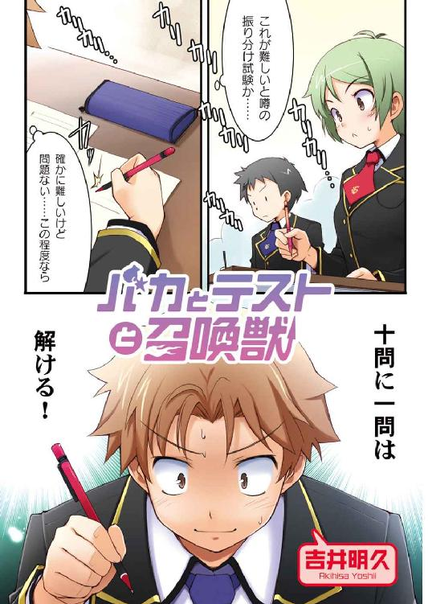
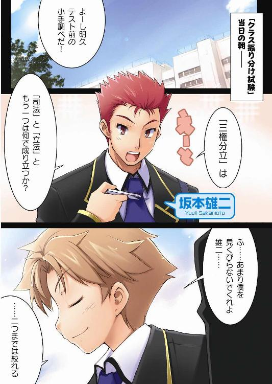

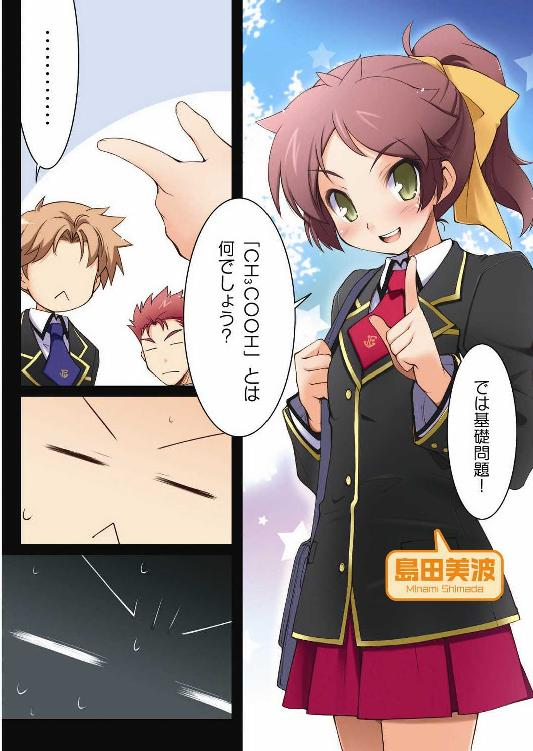
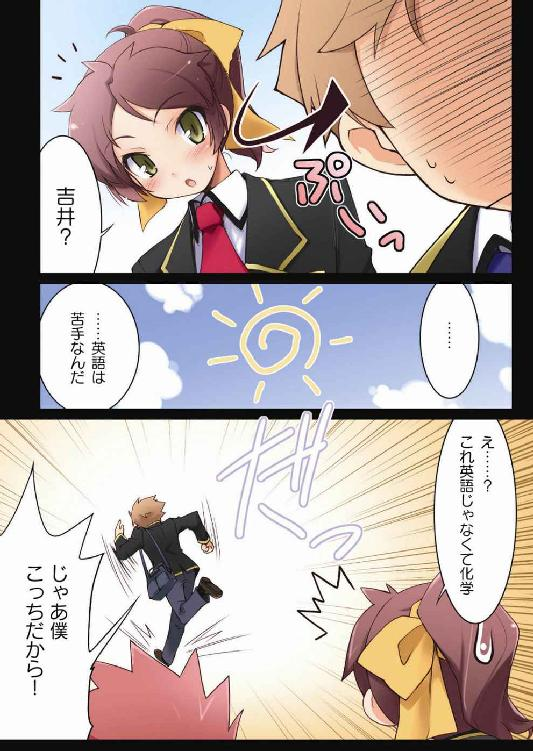

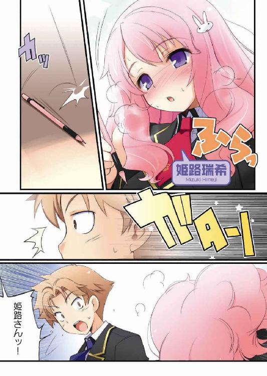
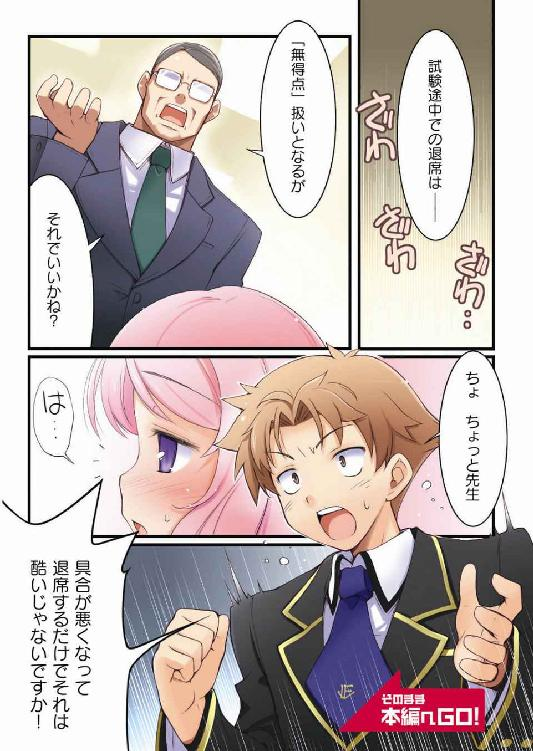
本作品の全部または一部を無断で複製、転載、配信、送信したり、ホームページ上に転載することを禁止します。また、本作品の内容を無断で改変、改ざん等を行うことも禁止します。
本作品購入時にご承諾いただいた規約により、有償・無償にかかわらず本作品を第三者に譲渡することはできません。
本作品は本文縦組で制作されております。ごらんになるリーディングシステムにより、表示の差が認められることがあります。

「ん？ なんだ？」
「......さっき雄二が話していた、大化の改新っていつのこと？」
「三年生にもなって、まだそんなことも知らないのか？ 翔子は馬鹿だなぁ」
「......まだ習ってない。雄二の頭が良すぎるだけ」
「覚え方は簡単だぞ？『無事故の改新』で覚えるんだ」
「......無事故？」
「忘れるなよ？ 大化の改新は無事故で起きたから――」
「うん」
「――６２５年だからな」
「......わかった。きちんと覚えた」
「よし。忘れるなよ」
「......大丈夫。絶対に忘れない」バカテスト 化学
問 以下の問いに答えなさい。
『調理の為に火にかける鍋を製作する際、重量が軽いのでマグネシウムを材料に選んだのだが、調理を始めると問題が発生した。この時の問題点とマグネシウムの代わりに用いるべき金属合金の例を一つ挙げなさい』
姫路瑞希の答え
『問題点......マグネシウムは炎にかけると激しく酸素と反応するため危険であるという点。
合金の例......ジュラルミン』
教師のコメント
正解です。合金なので『鉄』では駄目という引っ掛け問題なのですが、姫路さんは引っかかりませんでしたね。
土屋康太の答え
『問題点......ガス代を払っていなかったこと』
教師のコメント
そこは問題じゃありません。
吉井明久の答え
『合金の例......未来合金（←すごく強い）』
教師のコメント
すごく強いと言われても。僕らがこの文月学園に入学してから二度目の春が訪れた。
校舎へと続く坂道の両脇には新入生を迎える為の桜が咲き誇っている。別に花を愛でるほど雅な人間ではないけれど、その眺めには一瞬目を奪われる。
でも、それも一瞬のこと。
今僕の頭にあるのは春の風物詩ではあるけれども、桜のことじゃない。
僕の頭は今年一年を共に戦い抜いていく戦友と教室――要するに新しいクラスのことで一杯になっていた。
☆
「吉井、遅刻だぞ」
玄関の前でドスのきいた声に呼び止められる。声のした方を見ると、そこには浅黒い肌をした短髪のいかにもスポーツマン然とした男が立っていた。
「あ、鉄じ――じゃなくて、西村先生。おはようございます」
軽く頭を下げて挨拶をする。なにせ相手は生活指導の鬼、西村教諭だ。目をつけられるとロクな目に遭わない。
「今、鉄人って言わなかったか？」
「ははっ。気のせいですよ」
「ん、そうか？」
ふぅ、ヤバかった。危うく普通に『鉄人』って呼ぶところだった。
ちなみに鉄人というのは生徒の間での西村先生の渾名で、その由来は先生の趣味であるトライアスロンだ。真冬でも半袖でいるあたりも理由のひとつだけど。
「それにしても、普通に『おはようございます』じゃないだろうが」
「あ、すいません。えーっと――今日も肌が黒いですね」
「......お前には遅刻の謝罪よりも俺の肌の色の方が重要なのか？」
「そっちでしたか。すいません」
「まったくお前というヤツは......いくら罰を与えても全然懲りないな」
溜息混じりに先生がつぶやく。こう言われると、なんだか僕が遅刻の常習犯のように聞こえてしまう。
「先生。僕、遅刻はあまりしてないですよ？」
西村先生は去年僕のクラスの担任だったから、僕があまり遅刻をしなかったことは知っているはずだ。
「遅刻は、な。ほら、受け取れ」
先生が箱から封筒を取り出し、僕に差し出してくる。宛て名の欄には『吉井明久』と、大きく僕の名前が書いてあった。
「あ、どーもです」
一応頭を下げながら受け取る。
「それにしても、どうしてこんな面倒なやり方でクラス編成を発表してるんですか？ 掲示板とかで大きく張り出しちゃえばいいのに」
こうやっていちいち全員に所属クラスを書いた紙を渡すなんて、面倒なだけだと思うけど。ご丁寧に一枚一枚封筒に入れてあるし。
「普通はそうするんだけどな。まぁ、ウチは世界的にも注目されている最先端システムを導入した試験校だからな。この変わったやり方もその一環ってワケだ」
「ふーん。そういうもんですかね」
適当な相槌を打ちながら封に手をかける。さてさて、僕はどこのクラスになっているんだろう？ 少しドキドキする。
なぜ緊張しているかと言うと、僕の通う文月学園はクラスがＡからＦまであり、二年生以上はＡから順に振り分け試験の成績順でクラスが決まっていく。頭の良い人はＡクラス、悪い人はＦクラス、といった具合だ。つまり所属しているクラスだけで頭の良し悪しがわかってしまう。男のプライドにかけて、Ｆクラスだけは避けたい。
「吉井、今だから言うがな」
「はい、なんですか？」
結構頑丈にのりづけされていて、封筒がうまく開かない。
「俺はお前を去年一年見て、『もしかすると、吉井はバカなんじゃないか？』なんて疑いを抱いていたんだ」
「それは大いなる間違いですね。そんな誤解をしているようじゃ、更に『節穴』なんて渾名をつけられちゃいますよ？」
自分で言うのもなんだけど、一年生の最後にやった振り分け試験は、あまり勉強しなかったのに良い出来だった。テストの結果を見て、きっとバカの疑いどころか、逆に僕のことを見直したに違いない。
「ああ。振り分け試験の結果を見て、先生は自分の間違いに気が付いたよ」
「そう言ってもらえると嬉しいです」
やっぱりうまく開かないな。仕方ない。上の部分を破くか。
ビッと軽い音を立てて封を切る。中を覗くと、そこには一枚の紙が入っていた。
さて、僕はどこの所属だろう。Ｄクラスだろうか。それともＣクラス？
「喜べ吉井。お前への疑いはなくなった」
折り畳まれた紙を開き、書かれているクラスを確認する。
『吉井明久......Ｆクラス』
「お前はバカだ」
こうして僕の最低クラス生活が幕を開けた。バカテスト 国語
問 以下の意味を持つことわざを答えなさい。
『（１）得意な事でも失敗してしまうこと』
『（２）悪いことがあった上に更に悪いことが起きる喩え』
姫路瑞希の答え
『（１）弘法も筆の誤り』
『（２）泣きっ面に蜂』
教師のコメント
正解です。他にも（１）なら『河童の川流れ』や『猿も木から落ちる』、（２）なら『踏んだり蹴ったり』や『弱り目に祟り目』などがありますね。
土屋康太の答え
『（１）弘法の川流れ』
教師のコメント
シュールな光景ですね。
吉井明久の答え
『（２）泣きっ面蹴ったり』
教師の答え
君は鬼ですか。「......なんだろう、このばかデカい教室は」
去年はほとんど来たことのない三階に足を踏み入れると、まず目の前に現れたのは通常の五倍はあろうかという広さを持つ教室だった。
もしや、これが噂のＡクラスだろうか。ちょっと気になるな。
「皆さん進級おめでとうございます。私はこの二年Ａ組の担任、高橋洋子です。よろしくお願いします」
足を止めて大きめの窓から中を覗いてみると、髪を後ろでお団子状にまとめ、眼鏡をかけてスーツをきっちり着こなした知的女性の代表のような教師がいた。
彼女が告げると、黒板ではなく壁全体を覆うほどの大きさのプラズマディスプレイに担任教師の名前が表示された。なんて贅沢な。一体いくらするんだろう？
「まずは設備の確認をします。ノートパソコン、個人エアコン、冷蔵庫、リクライニングシートその他の設備に不備のある人はいますか？」
教室は五十人の生徒が普通に授業を受けるには過剰なほどの広さと設備があった。
冷蔵庫には当然のように各種飲料やお菓子を含めた様々な食料が、エアコンは教室どころか各人に一台。それぞれが好みの温度に調整できるようになっている。
更に見渡してみると天井は総ガラス製でありながらスイッチ一つで開閉可能となっており、壁には格調高い絵画や観葉植物がさりげなく置かれていた。まるで高級ホテルのロビーみたいだ。
「参考書や教科書などの学習資料はもとより、冷蔵庫の中身に関しても全て学園が支給致します。他にも何か必要なものがあれば遠慮などすることなく何でも申し出てください」
どこからか紅茶の香りが漂ってくる。早速支給されている設備を使って紅茶を淹れた生徒がいるのだろう。
「では、はじめにクラス代表を紹介します。霧島翔子さん。前に来てください」
「......はい」
名前を呼ばれて席を立ったのは、黒髪を肩まで伸ばした日本人形のような少女。
物静かな雰囲気を持つ彼女はその整った容姿と相まって、穢れを近づけない神々しさを放っていた。
クラス全員の視線が集まる。
クラス代表―――つまり二年生のクラスを編成する振り分け試験において、この教室内で誰よりも優秀な成績を収めた生徒。
更に言うなれば、学年で最高成績を誇るＡクラスでのトップはそのまま二年生のトップということになる。注目を浴びるのは当然のことだろう。
「......霧島翔子です。よろしくお願いします」
そんな視線の中心にありながら顔色一つ変えずに淡々と名前を告げる霧島さん。
その目はクラスメイト全員に向けられているようでありながら、よく見ると同性の級友たちにのみ向けられていた。そっか、噂は本当だったんだ。
クラス代表となるような彼女は一年生の時から有名人であり、その容姿の美しさも学年を問わず知れ渡り、男子生徒からの告白が絶えなかった。でも、一人として彼女の心を動かした生徒はいない。そのことから彼女は同性愛者ではないかという噂が流れたのだけど――なるほど、確かに火の無いところに煙は立たないね。
「Ａクラスの皆さん。これから一年間、霧島さんを代表にして協力し合い、研鑽を重ねてください。これから始まる『戦争』で、どこにも負けないように」
担任教師の結びの言葉が告げられ、霧島さんが会釈をして席に戻る。
っと、こうしてはいられない。僕も自分のクラスへと向かわないと。
僕は走り出さない程度に廊下を急いで進んでいった。
☆
二年Ｆ組と書かれたプレートのある教室の前で僕は少しだけ躊躇していた。
遅刻なんてしてきて、皆に悪い印象を持たれたりしないだろうか。
嫌なヤツや怖いヤツや痛いヤツはいないだろうか。
今後一年間を共に過ごす仲間がどういった人達なのか、不安でたまらない。
「なんて、考えすぎかな」
たかが遅刻程度で僕は何をネガティブなことを考えているんだか。
そうだよね、相手は皆クラスの仲間。何も心配する必要なんかないさ！ むしろ何で遅刻したのか、僕の体調が悪いのかと心配してくれるはず！（実際はただの寝坊だけど）
よし、大丈夫。何も心配はいらない。信じよう、これから共に過ごす仲間達を。
そう思って、僕は勢いよくドアを開けてから中の皆にできる限りの愛嬌たっぷりに言い放った。
「すいません、ちょっと遅れちゃいましたっ♪」
「早く座れ、このウジ虫野郎」
台無しだっ！
「聞こえないのか？ あぁ？」
それにしてもなんて物言いだろう。いくら教師とはいえ礼を失しているにも程がある。
僕は睨みつけるように教壇に立っている男を見た。
その背は意外と高く、だいたい１８０センチ強くらい。やや細身ではあるが華奢なわけではない。むしろボクサーのような機能美を備えた細さを感じる。視線をもうちょっと上にやると、現れたのは意志の強そうな目をした野性味たっぷりの顔。短い髪の毛がツンツンと立っていてまるでたてがみのように見える。
「......雄二、何やってんの？」
彼は、僕の悪友、坂本雄二だ。決して教師じゃない。
「先生が遅れているらしいから、代わりに教壇に上がってみた」
「先生の代わりって、雄二が？ なんで？」
「一応このクラスの最高成績者だからな」
「え？ それじゃ、雄二がこのクラスの代表なの？」
「ああ、そうだ」
ニヤリと口の端を吊り上げる雄二。その言葉を聞いて僕も思わず顔が綻ぶ。つまり雄二を説得すれば、このクラスを動かせるってワケだ。
「これでこのクラスの全員が俺の兵隊だな」
ふんぞり返って床に座っているクラスメイト達を見下している雄二。
――そう、クラスメイトは皆床に座っている。
どうしてか？ その理由は簡単。椅子がないからだ。
「それにしても......流石はＦクラスだね」
とりあえず空いているスペースでも探そう。
「えーと、ちょっと通してもらえますかね？」
不意に背後から覇気のない声が聞こえてきた。
そこには寝癖のついた髪にヨレヨレのシャツを貧相な体に着た、いかにも冴えない風体のオジサンがいた。
「それと席についてもらえますか？ ＨＲを始めますので」
学生服も着ていないし、どう見たって十代には見えない。どうやらこのクラスの担任の先生みたいだ。
「はい、わかりました」
「うーっす」
僕と雄二はそれぞれ返事をしてそこらの席（？）に着く。
先生は僕らを待ってから壇上でゆっくりと口を開いた。
「えー、おはようございます。二年Ｆ組担任の福原慎です。よろしくお願いします」
福原先生は薄汚れた黒板に名前を書こうとして、やめた。うわ、チョークすらろくに用意されてないよ。
「皆さん全員に卓袱台と座布団は支給されてますか？ 不備があれば申し出て下さい」
五十人程度の生徒が所狭しと座っている教室には机がない。あるのは畳と卓袱台と座布団。なんて斬新な設備だろう。一年生の時から噂には聞いていたけど、実際に目の当たりにすると言葉が出ない。
「せんせー、俺の座布団に綿がほとんど入ってないですー」
と、クラスメイトの誰かが先生に設備の不備を申し出る。
「あー、はい。我慢してください」
「先生、俺の卓袱台の脚が折れています」
「木工ボンドが支給されていますので、後で自分で直してください」
「センセ、窓が割れていて風が寒いんですけど」
「わかりました。ビニール袋とセロハンテープの支給を申請しておきましょう」
教室の隅には蜘蛛の巣が我が物顔で形成されており、壁はひび割れや落書きのない箇所を探すほうが困難といった状態だった。酷すぎる。ここって廃屋？
「必要なものがあれば極力自分で調達するようにしてください」
どこからというわけでもなく、教室全体からかび臭い独特の空気が漂う。きっと床に敷き詰められている古い畳のせいだろう。
「では、自己紹介でも始めましょうか。そうですね。廊下側の人からお願いします」
福原先生の指名を受け、車座を組んでいた廊下側の生徒のひとりが立ち上がり、名前を告げる。
「木下秀吉じゃ。演劇部に所属しておる」
ん？ 誰かと思えば秀吉じゃないか。
独特の言葉遣いと小柄な体。肩にかかる程度の長さの髪をゆったりと縛ったいでたち。去年一年で見慣れた僕でも、ぱっと見ると――いや、じっくり見ても女子と間違えそうな可愛らしさ。間違いない、アイツは木下秀吉。僕の去年のクラスメイトだ。
それにしても、女子の制服を着て言葉遣いを直したら女子生徒として扱われてしまいそうだ。男ばかりのこの教室だと特にそう感じてしまう。
「――と、いうわけじゃ。今年一年よろしく頼むぞい」
軽やかに微笑みを作って自己紹介を終える秀吉。か、可愛――ぅぉっとぉ！ 騙されるな吉井明久！ アイツは男だぞ！
「............土屋康太」
僕が去年から何度も自分に言い聞かせている言葉を繰り返していると、いつの間にか次の生徒が立ち上がって同じように名前を告げていた。
どれどれ？ って、今度も知り合いだ。
相変わらず口数が少ないな。小柄だけど引き締まった身体で運動神経も良いのに、どうしておとなしいんだろう。やっぱり目立つとやりにくいのかな？ イロイロと。
それにしても、見渡す限り男だな。学力最低クラスともなると、女子はほとんどいないんだろうか。
「――です。海外育ちで、日本語は会話はできるけど読み書きが苦手です」
と、少し考え事をしているうちにまた次の人。
「あ、でも英語も苦手です。育ちはドイツだったので。趣味は――」
おお。今度はこのクラスには珍しく女子の声だ。良かった。最低一人はいるんだ。
「趣味は吉井明久を殴ることです☆」
誰だっ!? 恐ろしくピンポイントかつ危険な趣味を持つ奴は！
「はろはろー」
笑顔でこちらに手を振るのは、
「......あぅ。し、島田さん」
「吉井、今年もよろしくね」
またしても知り合い。去年のクラスメイトで僕の天敵でもある島田美波さんだ。
なんだろう。こんなにも知り合いだらけだなんて、おかしくない？ まさか、類は友を呼ぶとか......？ そんな！ 僕がこいつらと同レベルだなんて！
島田さんの自己紹介が終わり、その後は淡々と自分の名前を告げるだけの作業が進む。
「――です。よろしく」
ん、僕の前の人が自己紹介を終えたようだ。そうなると次は僕の番ということになる。
軽く息を吸い、立ち上がる。
さて、自己紹介だ。こういったものは出だしが肝心。沢山の仲間を作るためにも、僕が気さくで明るい好青年ということをアピールしないと。
一瞬考えて、軽いジョークを織り交ぜて自己紹介をすることに決定。努めておどけた声でクラスの皆に僕という人間を紹介する。
「――コホン。えーっと、吉井明久です。気軽に『ダーリン』って呼んで下さいね♪」
『ダァァーーリィーーン!!』
野太い声の大合唱。これは思った以上に不愉快だ。
「――失礼。忘れて下さい。とにかくよろしくお願い致します」
作り笑いでごまかしながら席に着くものの、吐き気が止まらない。まさか本当にそんな呼び方をされるなんて思わなかった。Ｆクラス恐るべし。
そんな僕の気持ちとは無関係に自己紹介は続く。
その後もしばらく名前を告げるだけの単調な作業が続き、いい加減眠くなった頃に不意にガラリと教室のドアが開き、息を切らせて胸に手を当てている女子生徒が現れた。
「あの、遅れて、すいま、せん......」
『えっ？』
誰からというわけでもなく、教室全体から驚いたような声が上がる。そりゃそうだ。普通はびっくりするだろう。
クラスがにわかに騒がしくなる中、数少ない平然としている人物の一人、担任の福原先生がその姿を認めて話しかけた。
「丁度よかったです。今自己紹介をしているところなので姫路さんもお願いします」
「は、はい！ あの、姫路瑞希といいます。よろしくお願いします......」
小柄な身体をさらに縮こまらせるようにして声を上げる姫路さん。
肌は新雪のように白く、背中まで届く柔らかそうな髪は、優しげな彼女の性格を表しているようだ。保護欲をかきたてるような可憐な容姿は、男だらけのＦクラスで異彩を放っている。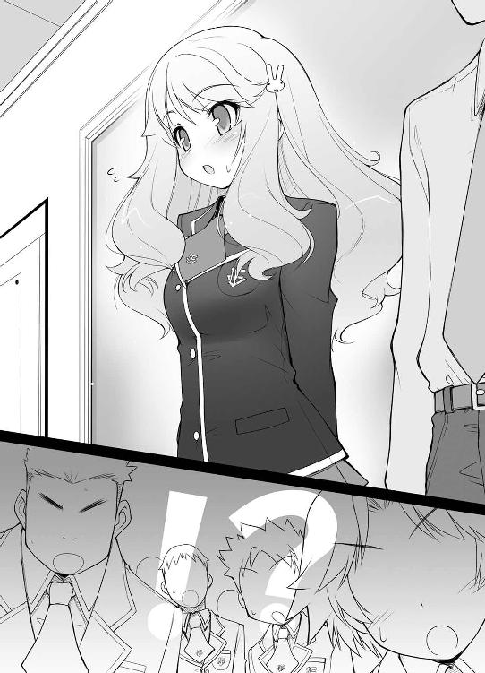
でも、皆はその容姿を見て驚きの声を上げたんじゃない。
「はいっ！ 質問です！」
既に自己紹介を終えた男子生徒の一人が高々と右手を挙げる。
「あ、は、はいっ。なんですか？」
登校するなり、質問がいきなり自分に向けられて驚く姫路さん。その小動物的な仕草が可愛かったり。
「なんでここにいるんですか？」
聞きようによっては失礼な質問が浴びせられる。
でも、これはクラスにいる全員の疑問のはずだ。
彼女の可憐な容姿は人目を引くし、なによりその成績が凄い。入学して最初のテストで学年二位を記録し、その後も上位一桁以内に常に名前を残しているほどだった。
そんな彼女が最下層に位置するＦクラスにいるわけがない。学年中の誰もが、彼女はＡクラスにいると思っていることだろう。
「そ、その......」
緊張した面持ちで身体を硬くしながら姫路さんが口を開く。
「振り分け試験の最中、高熱を出してしまいまして......」
その言葉を聴き、クラスの人々は『ああ、なるほど』とうなずいた。
試験途中での退席は０点扱いとなる。彼女は昨年度に行われた振り分け試験を最後まで受けることができず、結果としてＦクラスに振り分けられてしまったというワケだ。
そんな姫路さんの言い分を聞き、クラスの中でもちらほらと言い訳の声が上がる。
『そう言えば、俺も熱の問題が出たせいでＦクラスに』
『ああ。化学だろ？ アレは難しかったな』
『俺は弟が事故に遭ったと聞いて実力を出し切れなくて』
『黙れ一人っ子』
『前の晩、彼女が寝かせてくれなくて』
『今年一番の大噓をありがとう』
これは想像以上にバカだらけだ。
「で、ではっ、一年間よろしくお願いしますっ！」
そんな中、逃げるように僕と雄二の隣の空いている卓袱台に着こうとする彼女。こうして同じクラスになって近くにいると思うと、正直ドキドキする。やっぱり可愛いな。こんな設備の教室に迎えるのが犯罪だと思えるほどだ。
「き、緊張しましたぁ～......」
席に着くや否や、安堵の息を吐いて卓袱台に突っ伏す姫路さん。
よし。席も近いことだし、これは話しかけるチャンスだ！ こういった些細なことからドラマは始まり、やがて僕らは結ばれることになる。そう、この一言は僕の幸せな未来へとつながる架け橋になる！
「あのさ、姫――」
「姫路」
僕の声にかぶせるように隣の席に座っている雄二が声をかける。酷いっ！ せっかくの僕の人生計画、『クラスメイトから結婚まで ～君と出逢えた春～ 全６５４話』が開始２分でエンドロールに！ 残り６５３時間と58分は何を放送すればいいのさ！
「は、はいっ。何ですか？ えーっと......」
慌てて雄二のほうに身体を向け、スカートの裾を正す姫路さん。椅子ではなくて座布団の上に座っているので裾が乱れやすいのだろう。
「坂本だ。坂本雄二。よろしく頼む」
「あ、姫路です。よろしくお願いします」
深々と頭を下げる彼女。挨拶も丁寧だし、育ちが良さそうだな。
「ところで、姫路の体調は未だに悪いのか？」
「あ、それは僕も気になる」
と、思わず口を挟んでしまう。試験席の割り振りで、僕は姫路さんの隣に座っていたんだけど、その時の彼女は相当具合が悪そうに見えたから。今は大丈夫なんだろうか？
「よ、吉井君!?」
僕の顔を見て驚く姫路さん。ちょっと、いやかなりショックだ。僕ってそんなにブサイクだろうか？ いやいや、そんなワケは――
「姫路。明久がブサイクですまん」
え？ なにコレ？ 僕の為を思っての雄二なりのフォローなのかもしれないけど、全然嬉しくないよ？
「そ、そんな！ 目もパッチリしてるし、顔のラインも細くて綺麗だし、全然ブサイクなんかじゃないですよ！ その、むしろ......」
「そう言われると、確かに見てくれは悪くない顔をしているかもしれないな。俺の知人にも明久に興味を持っている奴がいたような気もするし」
なんて、雄二の嬉しい情報。これは是非とも詳細を確認せねば。
「え？ それは誰――」
「そ、それって誰ですかっ!?」
僕の台詞が姫路さんに遮られる。ま、聞きたいことは同じだからいいけど。それにしても、流石は年頃の女の子。この手の話題には敏感だね。
「確か、久保――」
久保さん？ どの久保さんだろう。
「――利光だったかな」
久保利光 → ♂（性別／オス）
「..................」
「おい明久。声を殺してさめざめと泣くな」
もう僕、お婿にいけない......。
「半分冗談だ。安心しろ」
「え？ 残り半分は？」
「ところで姫路。体は大丈夫なのか？」
「あ、はい。もうすっかり平気です」
「ねぇ雄二！ 残りの半分は!?」
とりあってくれない雄二に対し、思わず大きな声が出てしまう。
「はいはい。そこの人達、静かにしてくださいね」
そのせいで、パンパン、と教卓を叩いて先生が警告を発してきた。
「あ、すいませ――」
バキィッ バラバラバラ......
突如、先生の前で教卓がゴミ屑と化す。まさか軽く叩いただけで崩れ落ちるとは。どこまで最低な設備なんだろう。
「え～......替えを用意してきます。少し待っていてください」
気まずそうに告げると、先生は足早に教室から出て行った。
改めてこのクラスの酷さを思い知る。
「あ、あはは......」
隣で姫路さんが苦笑いをしていた。
ふと、そんな彼女を見て思う。僕や雄二は実力だからともかくとして、彼女がこんな酷い教室で学んでいくのはどうなんだろう、と。
確かに本番で実力を発揮できなかったのはまずかった。体調管理だって実力のうちかもしれない。けど、体調不良の早退でいきなりＦクラス行きはあんまりだ。もう少しチャンスがあってもいいじゃないか。
振り分け試験の時にも感じた理不尽な処分に対する怒りが沸々と湧いてくる。こうなったら意地でもまともな設備を手に入れたい。
「......雄二、ちょっといい？」
あくびをしているクラス代表に声をかける。
「ん？ なんだ？」
「ここじゃ話しにくいから、廊下で」
「別に構わんが」
立ち上がって廊下に出る。その時、一瞬だけ姫路さんと目が合った。
「んで、話って？」
ＨＲ中だけあって廊下に人影はない。ここなら安心して話ができそうだ。
「この教室についてなんだけど......」
この教室というのは言うまでもなくＦクラスのことだ。
「Ｆクラスか。想像以上に酷いもんだな」
「雄二もそう思うよね？」
「もちろんだ」
「Ａクラスの設備は見た？」
「ああ。凄かったな。あんな教室は他に見たことがない」
一方はチョークすらないひび割れた黒板で、もう一方は値段もわからないほど立派なプラズマディスプレイ。これに不満のない人間はいないはず。
「そこで僕からの提案。折角二年生になったんだし、『試召戦争』をやってみない？」
「戦争、だと？」
「うん。しかもＡクラス相手に」
「......何が目的だ」
急に雄二の目が細くなる。警戒されてるんだろうか。
「いや、だってあまりに酷い設備だから」
「噓をつくな。全く勉強に興味のないお前が、今更勉強用の設備なんかの為に戦争を起こすなんて、そんなことはありえないだろうが」
ぅぐっ。相変わらず勘だけは妙に良いな。
「そ、そんなことないよ。興味がなければこんな学校に来るわけが――」
「お前がこの学校を選んだのは『試験校だからこその学費の安さ』が理由だろ？」
しまった。雄二には僕がこの学校に来ている理由を話したことがあるんだった。
「あー、えーっと、それは、その......」
どうしよう。もっともらしい言い訳が思いつかない。
「......姫路の為、か？」
ビクッ！
図星をつかれて思わず背筋が伸びる。
「ど、どうしてそれを!?」
「本当にお前は単純だな。カマをかけるとすぐに引っかかる」
雄二の目から警戒の色が消えて、代わりに楽しげな笑みが浮かぶ。ハメられた！
「べ、別にそんな理由じゃ――」
「はいはい。今更言い訳は必要ないからな」
「だから、本当に違うってば！」
くぅっ！ 全然取り合ってくれない！
「気にするな。お前に言われるまでもなく、俺自身Ａクラス相手に試召戦争をやろうと思っていたところだ」
「え？ どうして？ 雄二だって全然勉強なんてしてないよね？」
だからこそ、こいつも僕と同じように設備になんて興味はないはずだけど。
「世の中学力が全てじゃないって、そんな証明をしてみたくてな」
「？？？」
「それに、Ａクラスに勝つ作戦も思いついたし――おっと、先生が戻ってきた。教室に入るぞ」
「あ、うん」
雄二に促されるまま、僕は教室に戻った。
「さて、それでは自己紹介の続きをお願いします」
壊れた教卓を替えて（それでもボロだけど）、気を取り直してＨＲが再開される。
「えー、須川亮です。趣味は――」
特に何も起こらず、また淡々とした自己紹介の時間が流れる。
「坂本君、キミが自己紹介最後の一人ですよ」
「了解」
先生に呼ばれて雄二が席を立つ。
ゆっくりと教壇に歩み寄るその姿にはいつものふざけた雰囲気は見られず、クラスの代表として相応しい貫禄を身に纏っているように思えた。
「坂本君はＦクラスのクラス代表でしたよね？」
福原先生に問われ、鷹揚にうなずく雄二。
別にクラス代表といっても、学年で最低の成績を修めた生徒たちが集められるＦクラスの話。何の自慢にもならないどころか恥になりかねない。
それにも関わらず、雄二は自信に満ちた表情で教壇に上がり、僕らの方に向き直った。
「Ｆクラス代表の坂本雄二だ。俺のことは代表でも坂本でも、好きなように呼んでくれ」
クラスメイトから大して注目されるわけでもない。Ｆクラスという馬鹿の集まりの中で比較的成績が良かったというだけの生徒。他から見れば五十歩百歩といった存在。
「さて、皆に一つ聞きたい」
そんな生徒が、ゆっくりと、全員の目を見るように告げる。
間の取り方が上手いせいか、全員の視線はすぐに雄二に向けられるようになった。
皆の様子を確認した後、雄二の視線は教室内の各所に移りだす。
かび臭い教室。
古く汚れた座布団。
薄汚れた卓袱台。
つられて僕らも雄二の視線を追い、それらの備品を順番に眺めていった。
「Ａクラスは冷暖房完備の上、座席はリクライニングシートらしいが――」
一呼吸おいて、静かに告げる。
「――不満はないか？」
『大ありじゃぁっ!!』
二年Ｆ組生徒の魂の叫び。
「だろう？ 俺だってこの現状は大いに不満だ。代表として問題意識を抱いている」
『そうだそうだ！』
『いくら学費が安いからと言って、この設備はあんまりだ！ 改善を要求する！』
『そもそもＡクラスだって同じ学費だろ？ あまりに差が大きすぎる！』
堰を切ったかのように次々とあがる不満の声。
「みんなの意見はもっともだ。そこで」
級友たちの反応に満足したのか、自信に溢れた顔に不敵な笑みを浮かべて、
「これは代表としての提案だが――」
これから戦友となる仲間たちに野性味満点の八重歯を見せ、
「――ＦクラスはＡクラスに『試験召喚戦争』を仕掛けようと思う」
Ｆクラス代表、坂本雄二は戦争の引き金を引いた。バカテスト 英語
問 以下の英文を訳しなさい。
［This is the bookshelf that my grandmother had used regulaly.］
姫路瑞希の答え
［これは私の祖母が愛用していた本棚です。］
教師のコメント
正解です。きちんと勉強していますね。
土屋康太の答え
［これは ］
教師のコメント
訳せたのは This だけですか。
吉井明久の答え
［☆●◆▽┌♪＊× ］
教師のコメント
できれば地球上の言語で。Ａクラスへの宣戦布告。
それはこのＦクラスにとっては現実味の乏しい提案にしか思えなかった。
『勝てるわけがない』
『これ以上設備を落とされるなんて嫌だ』
『姫路さんがいたら何もいらない』
そんな悲鳴が教室内のいたるところから上がる。
確かに誰が見ても、ＡクラスとＦクラスの戦力差は明らかだった。
文月学園に点数の上限がないテストが採用されてから四年が経過した。
このテストには一時間という制限時間と無制限の問題数が用意されている。その為、テストの点数は上限がなく、能力次第でどこまでも成績を伸ばすことができる。
また、科学とオカルトと偶然により完成された『試験召喚システム』というものがある。これはテストの点数に応じた強さを持つ『召喚獣』を喚び出して戦うことのできるシステムで、教師の立会いの下で行使が可能となる。
学力低下が嘆かれる昨今、生徒の勉強に対するモチベーションを高めるために提案された先進的な試み。その中心にあるのが、召喚獣を用いたクラス単位の戦争――試験召喚戦争と呼ばれる戦いだ。
その戦争で重要になるのがテストの点数なんだけど、ＡクラスとＦクラスの点数は文字通り桁が違う。正面からやりあったとしたら、Ａクラス一人に対してＦクラス三人でも勝てるかどうか。いや、相手次第では四、五人でも負けるかもしれない。
「そんなことはない。必ず勝てる。いや、俺が勝たせてみせる」
そんな圧倒的な戦力差を知りながらも、雄二はそう宣言した。
『何を馬鹿なことを』
『できるわけないだろう』
『何の根拠があってそんなことを』
否定的な意見が教室中に響き渡る。
確かにどう考えても勝てる勝負だとは思えないだろう。それは雄二と結託して試験召喚戦争を起こそうとした僕でさえも同感だ。勝てないからといってやめる気はさらさらないけど。
「根拠ならあるさ。このクラスには試験召喚戦争で勝つことのできる要素が揃っている」
こんな雄二の言葉を受けてクラスの皆が更にざわめく。
根拠がある？ 僕らはＦクラスだよ？ 学年最下位グループだよ？
「それを今から説明してやる」
得意の不敵な笑みを浮かべ、壇上から皆を見下ろす悪友。
「おい、康太。畳に顔をつけて姫路のスカートを覗いてないで前に来い」
「............!!（ブンブン）」
「は、はわっ」
必死になって顔と手を左右に振り否定のポーズを取る康太と呼ばれた男子生徒。
姫路さんがスカートの裾を押さえて遠ざかると、アイツは顔についた畳の跡を隠しながら壇上へと歩き出した。
流石だ。あそこまで恥も外聞もなく低い姿勢から覗き込むなんて、アイツ以外に出来る人間はいない。手鏡を買って覗き込むという方法しか思いつかない僕とは格が違う。
「土屋康太。こいつがあの有名な、寡黙なる性識者だ」
「............!!（ブンブン）」
土屋康太という名前はそこまで有名じゃない。でも、ムッツリーニという名前は別だ。その名は男子生徒には畏怖と畏敬を、女子生徒には軽蔑を以て挙げられる。
『ムッツリーニだと......？』
『馬鹿な、ヤツがそうだというのか......？』
『だが見ろ。あそこまで明らかな覗きの証拠を未だに隠そうとしているぞ......』
『ああ。ムッツリの名に恥じない姿だ......』
畳の跡を手で押さえている姿が果てしなく哀れを誘う。たとえどういった状況であろうとも、自分の下心は隠し続ける。異名は伊達じゃない。
「？？？」
姫路さんは頭に多数の疑問詞を浮かべているみたいだ。
まさかムッツリーニというあだ名の由来がわからないとか？ ただの『ムッツリスケベ』のことだって教えてあげたほうがいいのかな。
「姫路のことは説明する必要もないだろう。皆だってその力はよく知っているはずだ」
「えっ？ わ、私ですかっ？」
「ああ。ウチの主戦力だ。期待している」
もし試召戦争に至るとしたら、確かに彼女ほど頼りになる戦力はいないだろう。
『そうだ。俺達には姫路さんがいるんだった』
『彼女ならＡクラスにも引けをとらない』
『ああ。彼女さえいれば何もいらないな』
誰だ、さっきから姫路さんに熱烈ラブコールを送っているヤツは。
「木下秀吉だっている」
木下秀吉。彼は学力ではあまり名前は聞かないけど、他の事で有名だったりする。演劇部のホープだとか、双子のお姉さんのこととか。
『おお......！』
『ああ。アイツ確か、木下優子の......』
「当然俺も全力を尽くす」
『確かになんだかやってくれそうな奴だ』
『坂本って、小学生の頃は神童とか呼ばれていなかったか？』
『それじゃあ、振り分け試験の時は姫路さんと同じく体調不良だったのか』
『実力はＡクラスレベルが二人もいるってことだよな！』
いけそうだ、やれそうだ、そんな雰囲気が教室内に満ちていた。
そう。気が付けば、クラスの士気は確実に上がっていた。
「それに、吉井明久だっている」
......シン――
そして一気に下がる。
ちぃっ！ 僕の名前はオチ扱いか！ というか、ここで僕の名前を挙げる必然性が感じられない！
「ちょっと雄二！ どうしてそこで僕の名前を呼ぶのさ！ 全くそんな必要はないよね！」
『誰だよ、吉井明久って』
『聞いたことないぞ』
「ホラ！ 折角上がりかけてた士気に翳りが見えてるし！ 僕は雄二たちとは違って普通の人間なんだから、普通の扱いを――って、なんで僕を睨むの？ 士気が下がったのは僕のせいじゃないでしょう！」
まぁ、聞いたことがあったとしてもろくな話じゃないと思う。知らないならわざわざ教えてこれ以上ムードを盛り下げる必要もないし。
「そうか。知らないようなら教えてやる。こいつの肩書きは《観察処分者》だ」
あ、言っちゃった。
『......それって、バカの代名詞じゃなかったっけ？』
クラスの誰かがそんな致命的な台詞を口にする。
「ち、違うよっ！ ちょっとお茶目な十六歳につけられる愛称で」
「そうだ。バカの代名詞だ」
「肯定するな、バカ雄二！」
《観察処分者》。ちょびっと学生生活を営む上で問題のある生徒に課せられる処分で、実は僕がそれに該当していたりする。いや、ほんの少しだけ他の人より勉強が苦手なだけなんですよ？
「あの、それってどういうものなんですか？」
姫路さんが小首を傾げている。頂点に近い場所にいた彼女にこの単語は馴染みがないらしい。
「具体的には教師の雑用係だな。力仕事とかそういった類の雑用を、特例として物に触れるようになった試験召喚獣でこなすといった具合だ」
そう。本来は試験召喚獣は物に触ることができない。彼らが触れることができるのは他の召喚獣だけ。要するに幽霊みたいなものだ。もっとも、学校内の床には特殊な処理が施してあるらしいから、立つことだけはできるみたいだけど。
でも、僕の召喚獣は違う。雄二の言ったとおりに物に触ることができる特別製だ。
「そうなんですか？ それって凄いですね。試験召喚獣って見た目と違って力持ちって聞きましたから、そんなことができるなら便利ですよね」
姫路さんの目がキラキラと輝いている。若干の羨望と尊敬のこもった視線が僕に送られて、正直むずがゆい。
「あはは。そんな大したもんじゃないんだよ」
とりあえず手を振って否定してみる。
実際、本当に大したものじゃない。自分の思うとおりに使役できるのならそれは凄く便利だ。なにせ、試験召喚獣の力は僕程度の点数でもかなり強い。やろうと思えば岩だって砕けるだろう。
でも、それのおかげで僕が日常生活を快適に過ごしているかと言うと、全然そんなことはない。むしろその逆だ。
なぜかと言うと、召喚獣は教師の監視下でなければ喚び出せないからだ。つまり、僕が便利に使いたくても使えない。教師が召喚獣で作業をしたい時に僕を呼び、僕が召喚獣を喚び出し、作業をする。ただそれだけ。当然そこに僕のメリットはない。教師の監視下で自分の為にできることなんてほとんどないからだ。
しかも、物に触れるようになった試験召喚獣の負担は、何割かが僕にフィードバックされる。例えば重いものを持たせて校舎内を走り回らせるとする。そうすると、僕自身にもその疲労の何割かが返ってくる。しかも、その作業中に重いものを召喚獣の足に落としたりすると、その痛みも返ってくる。自分の為に使えない上に疲労や痛みは僕のものになる。これじゃただの罰だ。
だからこその《観察処分者》。凄い事でもなければ便利なわけでもない。成績不良かつ学習意欲に欠ける生徒に与えられるペナルティ。バカの代名詞と呼ばれる理由はそこにある。
『おいおい。《観察処分者》ってことは、試召戦争で召喚獣がやられると本人も苦しいってことだろ？』
『だよな。それならおいそれと召喚できないヤツが一人いるってことになるよな』
あ。バレた。その通り。僕はあまり戦闘に参加する気がない。だって、召喚獣が殴られると僕まで痛いからね！
「気にするな。どうせ、いてもいなくても同じような雑魚だ」
「雄二、そこは僕をフォローする台詞を言うべきところだよね？」
「とにかくだ。俺達の力の証明として、まずはＤクラスを征服してみようと思う」
「うわ、すっごい大胆に無視された！」
こんなに近くにいるのに届かない僕の想いが歯がゆいです。
「皆、この境遇は大いに不満だろう？」
『当然だ!!』
「ならば全員筆を執れ！ 出陣の準備だ！」
『おおーーっ!!』
「俺達に必要なのは卓袱台ではない！ Ａクラスのシステムデスクだ！」
『うおおーーっ!!』
「お、おー......」
クラスの雰囲気に圧されたのか、姫路さんも小さく拳を作り掲げていた。思わず守ってあげたくなる。いや、実際は僕が守られる立場になっちゃうんだろうけど。
「明久にはＤクラスへの宣戦布告の使者になってもらう。無事大役を果たせ！」
と、雄二のありがたいお言葉。大役というなら自分で行けば良いのでは？
「......下位勢力の宣戦布告の使者ってたいてい酷い目に遭うよね？」
「大丈夫だ。やつらがお前に危害を加えることはない。騙されたと思って行ってみろ」
「本当に？」
「もちろんだ。俺を誰だと思っている」
わずかな逡巡すらなく、力強く断言する雄二。
そうだ。雄二はジョークを言っても噓だけはつかない男だった。
「大丈夫、俺を信じろ。俺は友人を騙すような真似はしない」
更に追い打ちの一言。
やれやれ、コイツはなんだかズルいなぁ。......そう言われたら、信じるしかないじゃないか。
「わかったよ。それなら使者は僕がやるよ」
「ああ、頼んだぞ」
クラスメイトの歓声と拍手に送り出され、僕は使者らしく毅然とした態度でＤクラスに向かって歩き始めた。
☆
「騙されたぁっ！」
命がけで廊下を走り、自分の教室に転がり込む僕。
こ、殺されるところだった！ Ｄクラスの連中、物凄い勢いで摑みかかってきたぞ！
息を切らせて床にへたりこむ僕に雄二が視線を落とし、
「やはりそうきたか」
平然と言い放った。ブチ殺すぞコラ。
「やはりってなんだよ！ やっぱり使者への暴行は予想通りだったんじゃないか！」
「当然だ。そんなことも予想できないで代表が務まるか」
「少しは悪びれろよ！」
去年の春から付き合いがあるけど、未だに雄二のことはよくわからない。
「吉井君、大丈夫ですか？」
ところどころ制服まで破れている僕の有様を見て、姫路さんが駆け寄ってくれる。
ああ、なんて優しいんだろう。ここは男として余計な心配をかけないようにしないと。
「あ、うん。大丈夫。ほとんどかすり傷」
「吉井、本当に大丈夫？」
島田さんまで来てくれた。身体は痛いけど、こうやって心配されるのも悪くないね。
「平気だよ。心配してくれてありがとう」
「そう、良かった......。ウチが殴る余地はまだあるんだ......」
「ああっ！ もうダメ！ 死にそう！」
慌てて腕を押さえて転げまわる。島田美波、本当に油断ならない女だ。
「そんなことはどうでもいい。それより今からミーティングを行うぞ」
他の場所で話し合いをするつもりのようで、雄二は扉を開けて外に出て行った。もう少し友人に優しさを見せても良くない？ というか、雄二って、本当に僕の友達なんだろうか？ 前から週に七回ほど気になったりする。
「あの、痛かったら言って下さいね？」
そう告げて、姫路さんは小走りに雄二の後を追った。
「大変じゃったの」
小柄で一見少女にも見える男子――秀吉が僕の肩を叩いて廊下に出る。
「............（サスサス）」
自分の頰の辺りをさすりながらムッツリーニが続く。
「ムッツリーニ。覗いていた時の畳の跡ならもう消えてるよ？」
「............!!（ブンブン）」
「いや、今更否定されても、ムッツリーニがＨなのは知ってるから」
「............!!（ブンブン）」
「ここまでバレているのに否定し続けるなんて、ある意味凄いと思う」
「............!!（ブンブン）」
「――何色だった？」
「みずいろ」
即答か。
「やっぱりムッツリーニは色々な意味で凄いよ」
「............!!（ブンブン）」
そうやってのんびりと教室内で話をしていると、
「ほら吉井。アンタも来るの」
ぐいっと島田さんに腕を引張られた。
むぅ。面倒な話し合いになりそうだから逃げようと思っていたのに。
「あー、はいはい」
「返事は一回！」
「へーい」
「......一度、Das Brechen――ええと、日本語だと......」
島田さんが言いよどむ。
Das Brechenってなんだろう？ 多分ドイツ語だと思うけど。
「............調教」
近くからムッツリーニの声。
「そう。調教の必要がありそうね」
「調教って。せめて教育とか指導って言ってくれない？」
「じゃ、中間とってZchtigung――」
「............それはわからない」
「確か、日本語だと折檻だったかな？」
「それ悪化してるよね」
「そう？」
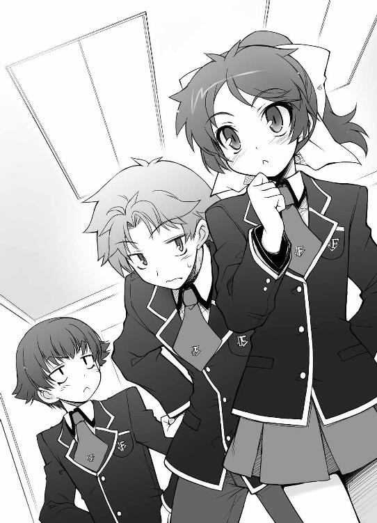
どうしてろくに漢字も読めないくせに、こんな余計な単語を知っているんだろう。
「というかムッツリーニ。どうして『調教』なんてドイツ語を知ってるの？」
「............一般教養」
なんて嫌な教養なんだ。『折檻』とかの普通の言葉はわからないというのに。
「相変わらずムッツリーニは性に関する知識だけズバ抜けてるね」
「............!!（ブンブン）」
そんな会話をしながら校内を歩いていると、先頭の雄二が屋上に通じる扉を開けて太陽の下に出た。
雲一つない空から眩しい光が差し込む。
春風とともに訪れた陽光に、風ではためく姫路さんのスカートを注視しているムッツリーニを除いて、僕らは全員目を細めた。
「明久。宣戦布告はしてきたな？」
雄二がフェンスの前にある段差に腰を下ろす。
「一応今日の午後に開戦予定と告げて来たけど」
僕らもそれにならって各々腰を下ろした。
「それじゃ、先にお昼ご飯ってことね？」
「そうなるな。明久、今日の昼ぐらいはまともな物を食べろよ？」
「そう思うならパンでもおごってくれると嬉しいんだけど」
僕は気持ち以外でもありがたく頂くのに。
「えっ？ 吉井君ってお昼食べない人なんですか？」
姫路さんが驚いたようにこちらを見る。彼女はきっと規則正しい生活をしているんだろうな。いろいろと発育も良さそうだし。
「いや。一応食べてるよ」
「......あれは食べていると言えるのか？」
雄二の横槍が入る。
「何が言いたいのさ」
「いや、お前の主食って――水と塩だろう？」
雄二の哀れむような声。
なんて失礼な。僕を馬鹿にするにも程がある！
「きちんと砂糖だって食べているさ！」
「あの、吉井君。水と塩と砂糖って、食べるとは言いませんよ......」
「舐める、が表現としては正解じゃろうな」
なんか、皆の目が妙に優しいのが逆に辛い。
「ま、飯代まで遊びに使い込むお前が悪いよな」
「し、仕送りが少ないんだよ！」
実は両親が仕事の都合で海外にいる為、僕は一人暮らしをしていたりする。もちろん生活費は貰っているんだけど......そのほとんどはゲームや漫画に消えている。趣味ってお金がかかるよね。
「......あの、良かったら私がお弁当作ってきましょうか？」
「ゑ？」
突然の優しい言葉に僕は一瞬耳を疑った。
お弁当？ 女の子の？ 手作りの？
「本当にいいの？ 僕、塩と砂糖以外のものを食べるのなんて久しぶりだよ！」
「はい。明日のお昼で良ければ」
「良かったじゃないか明久。手作り弁当だぞ？」
「うん！」
ここは素直に喜ぼう。雄二のからかう台詞だって心地良い。
「......ふーん。瑞希って随分優しいんだね。吉井だけに作ってくるなんて」
なんだか面白くなさそうな島田さんの言葉。そんな棘のある言い方をして、『やっぱりやめます』なんて言われたらどうしてくれるんだ！
「あ、いえ！ その、皆さんにも......」
「俺達にも？ いいのか？」
「はい。嫌じゃなかったら」
おお、雄二にも作ってあげるなんて。いい子だなあ。僕だけじゃないのが残念だけど。
「それは楽しみじゃのう」
「............（コクコク）」
「......お手並み拝見ね」
これで姫路さん本人も含めると六人分。作るのが大変そうだ。
「わかりました。それじゃ、皆に作ってきますね」
それでも嫌そうな顔一つしない彼女。
「姫路さんって優しいね」
心からそう思う。持って来るだけでも大変な量なのに、僕には考えられない行為だ。
なんて献身的で、魅力的な人なんだろう。
「そ、そんな......」
「今だから言うけど、僕、初めて会う前から君のこと好き――」
「おい明久。今振られると弁当の話はなくなるぞ」
「――にしたいと思ってました」
フッ。失恋回避成功。『君のこと好きです』と言い切る前だったからこそ取れる空前絶後の回避運動。流石は僕の判断力だ。
「明久。それでは欲望をカミングアウトした、ただの変態じゃぞ」
恨むぞ僕の判断力。
「明久。お前はたまに俺の想像を超えた人間になるときがあるな」
「だって......お弁当が......」
これも生きる為の行動。全て貧乏が悪いんだ！
「さて、話がかなり逸れたな。試召戦争に戻ろう」
おお。そういえばそうだった。すっかり忘れていた。
「雄二。一つ気になっていたんじゃが、どうしてＤクラスなんじゃ？ 段階を踏んでいくならＥクラスじゃろうし、勝負に出るならＡクラスじゃろう？」
「そういえば、確かにそうですね」
「まぁな。当然考えがあってのことだ」
雄二が鷹揚にうなずく。
「どんな考えですか？」
「色々と理由はあるんだが、とりあえずＥクラスを攻めない理由は簡単だ。戦うまでもない相手だからな」
「え？ でも、僕らよりはクラスが上だよ？」
成績でクラスを分けられているので、Ｅクラスは当然僕らのいるＦクラスより振り分け試験の点数は良い。それなのに戦うまでもないなんて。
「ま、振り分け試験の時点では確かに向こうが強かったかもしれないな。けど、実際のところは違う。オマエの周りにいる面子をよく見てみろ」
「えーっと......」
雄二に言われたとおりその場にいるメンバーを見回してみる。ふむふむ、この場には、
「美少女二人と馬鹿が二人とムッツリが一人いるね」
「誰が美少女だと!?」
「ええっ!? 雄二が美少女に反応するの!?」
「............（ポッ）」
「ムッツリーニまで!? どうしよう、僕だけじゃツッコミ切れない！」
「まぁまぁ。落ち着くのじゃ、代表にムッツリーニ」
と、こちらは実際に美少女の秀吉。中身は男だけど。
「そ、そうだな」
「いや、その前に美少女で取り乱すことに対してツッコミ入れたいんだけど」
「ま、要するにだ」
コホン、と咳払いをして雄二が説明を再開する。無視ですか。
「姫路に問題のない今、正面からやり合ってもＥクラスには勝てる。Ａクラスが目標である以上はＥクラスなんかと戦っても意味が無いってことだ」
「？ それならＤクラスとは正面からぶつかると厳しいの？」
「ああ。確実に勝てるとは言えないな」
「だったら、最初から目標のＡクラスに挑もうよ」
僕の目的はＡクラスであって、Ｄクラスじゃない。試召戦争自体が目的の雄二とは求めるものが違う。
「初陣だからな。派手にやって今後の景気づけにしたいだろ？ それに、さっき言いかけた打倒Ａクラスの作戦に必要なプロセスだしな」
Ａクラスに勝つ為の作戦がどうのってことかな。内容までは聞けなかったけど。
「あ、あの！」
と、姫路さんにしては珍しい大きな声。どうしたんだろう？
「ん？ どうした姫路」
「えっと、その。さっき言いかけた、って......吉井君と坂本君は、前から試召戦争について話し合ってたんですか？」
「ああ、それか。それはついさっき、姫路の為にって明久に相談されて――」
「それはそうと！」
雄二の余計な台詞を遮るように、わざと大きな声を出す。
「さっきの話、Ｄクラスに勝てなかったら意味がないよ」
「負けるわけないさ」
僕の心配を笑い飛ばす雄二。
「お前らが俺に協力してくれるなら勝てる」
勝てる？ 僕らが？ 試召戦争で？
「いいか、お前ら。ウチのクラスは――最強だ」
それは不思議な感覚だった。
根拠のない言葉なのに、なぜかその気になってくる。
雄二の言葉にはそんな力があった。
「いいわね。面白そうじゃない！」
「そうじゃな。Ａクラスの連中を引きずり落としてやるかの」
「.........（グッ）」
「が、頑張りますっ」
打倒Ａクラス。
荒唐無稽な夢かもしれない。実現不可能な絵空事かもしれない。
でも、やってみないと何も始まらない。
折角こうして同じクラスになったんだ。何かを成し遂げてみるのも悪くない。
「そうか。それじゃ、作戦を説明しよう」
涼しい風がそよぐ屋上で、僕らは勝利の為の作戦に耳を傾けた。バカテスト 数学
問 以下の問いに答えなさい。
『（１）4 sin X + 3 cos 3X = 2 の方程式を満たし、かつ第一象限に存在するＸの値を一つ答えなさい。
（２）sin（A+B）と 等しい式を示すのは次のどれか、①～④の中から選びなさい。
① sin A + cos B ② sin A - cosB
③ sin A cos B ④ sin A cos B + cos A sin B』
姫路瑞希の答え
『（１） Ｘ ＝π／６
（２）④ 』
教師のコメント
そうですね。角度を『』ではなく『π』で書いてありますし、完璧です。
土屋康太の答え
『（１） Ｘ ＝ およそ３』
教師の答え
およそをつけて誤魔化したい気持ちもわかりますが、これでは解答に近くても点数はあげられません。
吉井明久の答え
『（２） およそ③』
教師のコメント
先生は今まで沢山の生徒を見てきましたが、選択問題でおよそをつける生徒は君が初めてです。「吉井！ 木下達がＤクラスの連中と渡り廊下で交戦状態に入ったわよ！」
ポニーテールを揺らしながら駆けてきたのは同じ部隊に配属された島田さん。こうして改めて見ると、背は高くて脚も綺麗なのに、どこか女性としての魅力に欠ける。一体何が足りないんだろう。
「ああ、胸か」
「アンタの指を折るわ。小指から順に、全部綺麗に」
マズい。何かのスイッチに触れたっぽい。
「そ、それよりホラ、試召戦争に集中しないと！」
今現在前線にいるのは秀吉率いる先攻部隊で、そことＦクラスの中間辺りに僕がいる中堅部隊が配置されている。引き受けた覚えもないけど、部隊長になっている以上は僕には部隊の皆を導く義務がある。ここは気を引き締めていこう。
まずは戦場の雰囲気を感じよう。耳を澄ませて、前線部隊の戦闘の様子を聞き取るんだ。
『さぁ来い！ この負け犬が！』
『て、鉄人!? 嫌だ！ 補習室は嫌なんだっ！』
『黙れ！ 捕虜は全員この戦闘が終わるまで補習室で特別講義だ！ 終戦まで何時間かかるかわからんが、たっぷりと指導してやるからな』
『た、頼む！ 見逃してくれ！ あんな拷問耐え切れる気がしない！』
『拷問？ そんなことはしない。これは立派な教育だ。補習が終わる頃には趣味が勉強、尊敬するのは二宮金次郎、といった理想的な生徒に仕立て上げてやろう』
『お、鬼だ！ 誰か、助けっ――イヤァァ――（バタン、ガチャ）』
よし、試召戦争の雰囲気はだいたいわかった。
「島田さん、中堅部隊全員に通達」
「ん、なに？ 作戦？ 何て伝えんの？」
ここで僕が出すべき指示はただ一つ。
「総員退避、と」
「この意気地なし！」
殴られた。しかもチョキで。
「目が、目がぁっ！」
「目を覚ましなさい、この馬鹿！ アンタは部隊長でしょう！ 臆病風に吹かれてどうするのよ！」
その覚ますべき目に激痛が！ そういった台詞はせめてグーかパーで殴った後に言って欲しい！
「いい、吉井？ ウチらの役割は木下の前線部隊の援護でしょう？ アイツらが戦闘で消耗した点数を補給する間、ウチらが前線を維持する。その重要な役割を担っているウチらが逃げ出したりしたら、アイツらは補給ができないじゃない」
島田さんがやけにもっともらしいことを言う。
確かに彼女の言うとおりかもしれない。僕らの役割は決して軽いものじゃない。働き次第ではこの戦いを大きく左右してしまうだろう。それなのに、僕は戦死ペナルティの補習が怖くて逃げようだなんて......！
島田さん、君はなんて男らしいんだ！ なぜだか涙が止まらないよ！（あと激痛も）
「ごめん。僕が間違っていたよ。補習室を恐れずにこの戦闘に勝利することだけを考えよう」
「ええ。それに、そこまで心配することもないわ。個別戦闘は弱いかもしれないけど、これは戦争なんだから多対一で戦えば良いのよ」
その通りだ。点数じゃ負けているけど、それだけで試召戦争の勝敗が決まるわけじゃない。やり方次第では勝てる可能性は充分にあるはずだ。
「そうだね。よし、やるぞ！」
「うん。その意気よ、吉井！」
拳を挙げる僕達。大丈夫、僕らならやれる！
と意気込んでいると、島田さんのところに報告係がやってきた。
「島田、前線部隊が後退を開始したぞ！」
「総員退避よ」
さっきと言ってる事が全然違う！
「吉井、総員退避で問題ないわね？」
大いに問題ありのような気もするけどきっと気のせいだろう。
「よし、逃げよう。僕らには荷が重すぎた」
「そうね、ウチらは精一杯努力したわ」
くるりとＦクラスに向かって方向転換。
すると、振り返った先には本陣（Ｆクラス）に配置されているはずのクラスメイト、横田君がいた。
「ん？ 横田じゃない。どうしたの？」
「代表より伝令があります」
メモを見ながら横田君がハキハキとした声で告げる。
「『逃げたらコロス』」
「全員突撃しろぉーっ！」
気が付いたら戦場に向かって全力ダッシュをしていた。それもこれも、Ｆクラスの勝利を思ってのこと。
と、前方からこちらに向かって走ってくる美少女を発見。
「明久、援護に来てくれたんじゃな！」
ああなんだ。秀吉じゃないか。なんていうか、いつ見ても可愛い......。
「秀吉、大丈夫？」
「うむ。戦死は免れておる。じゃが、点数はかなり厳しいところまで削られてしまったわい」
「そうなの？ 召喚獣の様子は？」
「もうかなりヘロヘロじゃな。これ以上の戦闘は無理じゃ」
「そっか。それなら早く戻ってテストを受け直してこないと」
「そうじゃな。全教科を受けている時間はなさそうじゃが、一、二教科でも受けてくるとしよう」
言うや否や、秀吉は教室に向かって走っていった。その後ろに前線部隊に配置されたクラスメイトが続く。出陣した時より人数が少ないのは補習室に連行されているからだろう。
「吉井、試召戦争のルールは覚えている？ その科目の教師がいないと召喚はできないからね！」
「わかってる！」
島田さんの忠告のとおり、テストの点数で勝負する試召戦争にはいろいろなルールや制約がある。
（校則）
文月学園におけるクラス設備の奪取・奪還および召喚戦争のルール
一、原則としてクラス対抗戦とする。各科目担当教師の立会いにより試験召喚システムが起動し、召喚が可能となる。なお、総合科目勝負は学年主任の立会いのもとでのみ可能。
二、召喚獣は各人一体のみ所有。この召喚獣は、該当科目において最も近い時期に受けたテストの点数に比例した力を持つ。総合科目については各科目最新の点数の和がこれにあたる。
三、召喚獣が消耗するとその割合に応じて点数も減算され、戦死に至ると０点となり、その戦争を行っている間は補習室にて補習を受講する義務を負う。
四、召喚獣はとどめを刺されて戦死しない限りは、テストを受け直して点数を補充することで何度でも回復可能である。
五、相手が召喚獣を喚び出したにも関わらず召喚を行わなかった場合は戦闘放棄とみなし、戦死者同様に補習室にて戦争終了まで補習を受ける。
六、召喚可能範囲は、担当教師の周囲半径10メートル程度（個人差あり）。
七、戦闘は召喚獣同士で行うこと。召喚者自身の戦闘参加は反則行為として処罰の対象となる。
八、戦争の勝敗はクラス代表の敗北をもってのみ決定される。この勝敗に対し、教師が認めた勝負である限り、経緯や手段は不問とする。あくまでもテストの点数を用いた『戦争』である点を常に意識すること。
などなど。ちょくちょく改定されるし、他にも色々と細かいルールがあるけど、大まかな内容はこんな感じ。きちんと覚えておかないと、実は『基本的に、召喚獣同士の戦いで勝敗を決めるが、テストを使えば別の方法でもＯＫ』なんていう点に気づかなかったりする。
今回は学年主任の立会いだから、条文一にある総合科目の召喚獣勝負になっているはずだけど......。
「吉井、見て！」
隣を走る島田さんが叫ぶ。なんだ？
「五十嵐先生と布施先生よ！ Ｄクラスの奴ら、化学教師を引っ張ってきたわね！」
見ると二年生化学担当の五十嵐教諭と布施教諭が渡り廊下にいた。
なるほど。学年主任だけだと勝負に時間がかかるから、立会人を増やして一気に片をつけにきたってワケか。
道理で秀吉が予定よりも早く引き返してきたわけだ。
「島田さん、化学に自信は？」
「全くなし。60点台常連よ」
うーん、流石はＦクラス。お世辞にも良い点数だなんて言えないな。
「よし、それなら五十嵐先生と布施先生に近付かないよう注意しながら学年主任のところに行こう」
「高橋先生のところね？ 了解！」
既に戦闘が行われている渡り廊下で目立たないように隅へ移動する僕と島田さん。
皆、見るがいい。これが中堅部隊隊長と副官の雄姿だ！
「あっ、そこにいるのはもしや、Ｆクラスの美波お姉さま！ 五十嵐先生、こっちに来て下さい！」
「くっ！ ぬかったわ！」
Ｄクラスの一人に島田さんが見つかってしまった。化学担当の五十嵐教諭を伴ってこちらにやって来る。マズい。こっちも召喚獣を出して応戦しないと、二人揃って一撃で補習室送りだ。
「よし。島田さん、ここは君に任せて僕は先を急ぐよ！」
「ちょっ......！ 普通逆じゃない!? 『ここは僕に任せて先を急げ！』じゃないの!?」
「そんな台詞、現実世界じゃ通用しない！」
「よ、吉井！ このゲス野郎！」
「お姉さま！ 逃がしません！」
「くっ、美春！ やるしかないってことね......！」
五十嵐教諭から10メートル以上離れてからゆっくりと島田さんの様子を窺う。相手のＤクラスの子は既に試験召喚獣を喚び出していた。
応えるように島田さんもそちらを見据えて声を出す。
「――試獣召喚っ！」
喚び声に応えて島田さんの足元に幾何学的な魔法陣が現れる。教師の立会いの下にシステムが起動した証だ。そして、姿を見せる召喚獣。
現れたソイツは、軍服姿で手にサーベルを持っているという点以外は、ポニーテールも気の強そうな目も島田さんそっくり。ただし、身長は80センチ程度だ。その姿を一言で表現するなら、『デフォルメされた島田美波』ってところ。相手の方も同様にデフォルメされた自分の分身を従えている。向こうの得物は普通の剣みたいだけど。
「お姉さまに捨てられて以来、美春はこの日を一日千秋の想いで待っていました......」
「ちょっと！ いい加減ウチのことは諦めてよ！」
いよいよ戦闘が始まる。そう思うと、自分のことじゃないのに全身に震えが走る。
「ところで島田さん、お姉さまって――」
「嫌です！ お姉さまはいつまでも美春のお姉さまなんです！」
「来ないで！ 私は普通に男が好きなの！」
「噓です！ お姉さまは美春のことを愛しているはずです！」
「このわからずや！」
......なんだか、島田さんが遠い。
「行きます、お姉さま！」
二人の召喚獣の距離が詰まる。いよいよ戦闘だ。
「はあぁぁっ！」
「やあぁぁっ！」
二人の気合が廊下に響く。
それぞれの召喚獣が武器を構えて正面からぶつかり合い、力比べが始まった。
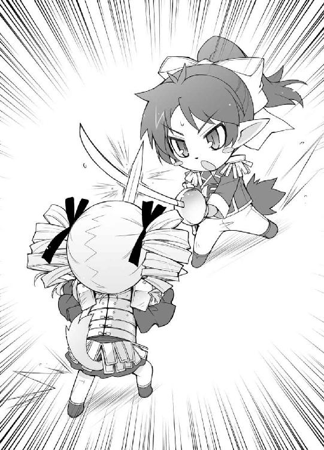
「こ――のっ！」
「負けません！」
見ている方まで力が入りそうな鍔迫り合いを繰り広げる二人の召喚獣。
「島田さん！ 向こうの方が点数が高いんだから、真正面からぶつかったら不利だ！」
「そんなこと言われなくてもわかってるけど、細かい動作はできないのよっ！」
直後、均衡が崩れる。島田さんの召喚獣が力負けして得物を取り落とした。
「ここまでですっ！」
「くぅっ！」
そのままの勢いで島田さんの召喚獣が押し倒される。その頭上には参考として二人の戦闘力（点数）が浮かび上がっていた。
『Ｆクラス 島田美波 ＶＳ Ｄクラス 清水美春
化学 53点 ＶＳ 94点 』
島田さん、サバ読んでたな。本当は60点にすら届いてないじゃないか。
「さ、お姉さま。勝負はつきましたね？」
刀を喉元に突きつけられる島田さんの召喚獣。腕や足を刺された程度なら点数が減るくらいで済むけど、首や心臓をやられたら即死――つまり補習室行きだ。これは下手に動けない。
「い、嫌ぁっ！ 補習室は嫌ぁっ！」
島田さんが取り乱す。そうだよね。補習室は僕も嫌だ。
「補習室？ ......フフッ」
楽しそうに笑いながら、清水さんが島田さんの手を引っ張る。
あれ？ 清水さん、そっちにあるのは保健室ですよ？
「ふふっ。お姉さま、この時間ならベッドは空いていますからね」
「よ、吉井、早くフォローを！ なんだか今のウチは補習室行きより危険な状況にいる気がするの！」
そうだろうね。僕から見てもそんな気がするよ。でも、
「殺します......。美春とお姉さまの邪魔をする人は、全員殺します......」
ごめん、僕にソコに飛び込む勇気はない。
「島田さん、君のことは忘れない！」
「ああっ！ 吉井！ なんで戦う前から別れの台詞を!?」
「邪魔者は殺します！」
島田さんの召喚獣の手足に攻撃を加えて動けなくすると、今度は敵がこっちにやって来た！ ヤバいって！
「吉井、危ない！ ――試獣召喚っ」
と、脇から割り込んできた声。か、彼は――クラスメイトの須川君！ ありがとう！ 君がまるで救世主のように見えるよ！
『Ｆクラス 須川亮 ＶＳ Ｄクラス 清水美春
化学 76点 ＶＳ 41点 』
須川君の召喚獣が敵を斬り倒す。
おお、須川君の勝ちだ！ 清水さんが先の戦闘で消耗していたから簡単に勝つことができたみたいだ。
「島田、大丈夫か？」
「ええ、助かったわ須川君。本当にありがとう。補習の鉄じ――西村先生、早くこの危険人物を補習室へお願いします！」
「おお、清水か。たっぷりと勉強漬けにしてやるぞ。こっちに来い」
島田さんと違って召喚獣に止めを刺された清水さんは補習室に連行されることになる。これが通称『戦死』という状態だ。
「お、お姉さま！ 美春は諦めませんから！ このまま無事に卒業できるなんて思わないで下さいね！」
とても危険な捨て台詞を残し、清水さんは補習室へと連行されていった。
色々な意味で危ない戦いだった。
「吉井」
「島田さん、お疲れ。とりあえず一度戻って化学のテストを受けてくるといいよ」
「吉井」
「さ、須川君、行こう。戦争はまだまだこれからだ」
「吉井ぃっ！」
「は、はいっ」
「......ウチを見捨てたわね？」
「......記憶にございません」
流石は戦場だ。殺気がヒシヒシと伝わってくる――ただし、後ろにいる島田さんから。
「............」
「............」
しばしの沈黙。な、なんだろう。すごく居心地が悪い。
「死になさい、吉井明久！ 試獣召――」
「誰か！ 島田さんが錯乱した！ 本陣に連行してくれ！」
冗談じゃない！ 今補習室に連れて行かれたら、さっきのおかしな子と席が隣になっちゃうじゃないか！
「島田、落ち着け！ 吉井隊長は味方だぞ！」
須川君が島田さんを羽交い絞めにしてなだめる。
「違うわ！ コイツは敵！ ウチの最大の敵なの！」
......否定できない。
「す、須川君、よろしく」
「了解」
「こら、放しなさい須川！ 吉井！ 絶対に許さないからね！」
「は、早く連れて行って！ なんかその禍々しい視線だけで殺されそうだ！」
「ちょっと、放し―――殺してやるんだからぁーっ！」
物騒な捨て台詞を残し、恐怖が遠ざかっていく。これでひとまず身の安全が確保できた。
「よし、とにかく秀吉達が補給をしている間、前線を維持するんだ！ 一歩も進ませないように！」
怒号や悲鳴が飛び交う廊下で大声を張り上げる。
「させるな！ 前線さえ突破すれば、後ろにいるのは補給中の連中ばかりだ！ 一気に攻め落とせ！」
僕の指示に対抗するかのように、Ｄクラス前線部隊の指揮官らしき人物の命令が響き渡る。
ここが僕らの正念場だ。気合を入れていこう！
☆
「吉井隊長！ 横溝がやられた！ これで布施先生側は残り二人だ！」
「五十嵐先生側の通路だが、現在俺一人しかいない！ 援軍を頼む！」
「藤堂の召喚獣がやられそうだ！ 助けてやってくれ！」
くっ、想像以上に劣勢だ。
本陣に援軍を要請したいけれど、そんなことをしたら作戦につぎ込む戦力がなくなってしまう。ここはなんとか僕らだけで持ちこたえるしかない！
「布施先生側の人達は召喚獣を防御に専念させて！ 五十嵐先生側の人は総合科目の人と交代しながら効率良く勝負をするように！ 藤堂君は可哀想だけど諦めるんだ！」
『了解！』
皆が僕の指示に従って陣形を組み始める。一応隊長として扱ってくれているみたいだ。
「Ｆクラスめ、明らかに時間稼ぎが目的だ！」
「何を待っているんだ!?」
戦い方を見て、Ｄクラスの連中が僕らの意図に気づき始めた。参った、更にやりづらくなるぞ......。
「大変だ！ 斥候からＦクラスに世界史の田中が呼び出されたって報告が！」
「せ、世界史の田中だと!?」
「Ｆクラスのヤツら、まさか長期戦に持ち込む気か！」
Ｄクラスの偵察部隊に、ウチのクラスにテストの採点でやってきた田中教諭が見つかったようだ。
世界史の田中教諭はおっとりとした初老の男性で、その採点の甘さには定評がある。その代わり採点に少々時間がかかるけど、長期戦の場合は田中先生の方が都合が良い。
「吉井、Ｄクラスは数学の木内を連れ出したみたいだ」
先ほど島田さんを連行してくれた須川君が報告してくる。本陣に戻ったついでに情報を手に入れてきたのだろう。そうか、木内先生か。
数学の木内先生は厳しいけど、採点の早さは群を抜いている。どうやらＤクラスはこちらとは対照的に、一気にケリをつける気みたいだ。
でも、僕らの作戦のためにはそうそう簡単に突破されるわけにはいかない。
僕が雄二から与えられた役割は唯一つ。とにかく前線を長く保つこと。ひたすら時間を稼ぐこと。試召戦争を行っていないクラスが今日の授業を終えるくらいまで。
その為には――
「須川君！」
「なんだ？」
頭を使う必要がある。単純戦力で劣るのなら、せめて有利な状況を作らないと。
「偽情報を流して欲しいんだ。時間を稼ぐために」
「偽情報？ それは構わないけど、スグにバレるんじゃないか？ Ｄクラスで前線の指揮をとってる塚本は声が大きいから、うまくいってもあっと言う間に混乱を収められてしまうぞ」
須川君の言うとおり、Ｄクラスの塚本君は声が大きい。さっきから指示の内容が聞き取れるのはありがたいけど、その分相手が混乱に陥りにくい。
「でも大丈夫。対象はＤクラスじゃないから」
「と、言うと？」
「先生たちに流すんだよ。他の場所に向かってくれるように」
「......なるほど。それは確かに効果的だ」
「でしょう？」
「ああ。流す偽情報の内容は任せてくれ。確実に騙してみせよう」
「うん。よろしく」
須川君はそう告げると、駆け足でこの場を離れていった。須川君はこういうことが好きなのだろうか？ 随分と活き活きして見える。
「僕らは一対一じゃ勝てないからね！ コンビネーションを重視して！」
とりあえず僕は指揮官として後方から指示を出そう。決して補習室が怖いわけじゃなくて、これが僕の役割なんだからね？
☆
『塚本、このままじゃ埒があかない！』
『もう少し待っていろ！ 今数学の船越先生も呼んでいる！』
しばらく拮抗した状態を続けていると、僕らＦクラスにとっては好ましくない会話が聞こえてきた。
数学の船越先生（四十五歳♀独身）を呼んだのは採点目的じゃなくて、立会人になって貰う為だろう。はっきり言ってこれはマズい。これ以上戦線を拡大されると実力差がよりはっきり表に出てしまう。
さてどうしよう。いよいよ僕も戦闘を行わないといけないかもしれない。
などと考えていると、
ピンポンパンポーン《連絡致します》
聞き覚えのある声で校内放送が流れ出した。
この声は須川君！ そうか、職員室に直接向かったら先生を呼びに来たＤクラスの生徒に見つかる可能性があるから放送室に行ったのか！ ファインプレイだよ須川君！
《船越先生、船越先生》
しかも呼び出し相手は丁度今話題に上がった船越先生。最高だよ須川君！
《吉井明久君が体育館裏で待っています》
......あれ？ 須川君？
《生徒と教師の垣根を越えた、男と女の大事な話があるそうです》
ひぃぃぃ！ なんて危険なコトを！ 相手はあの船越女史だよ？ わかってる？ 婚期を逃して、ついに生徒たちに単位を盾に交際を迫るようになった、あの船越先生だよ？ 確かに確実に体育館裏に向かってくれるだろうし、僕が来るまで何時間でもその場を離れないだろうけど、その分僕の貞操が大変なことに！
「吉井隊長......アンタぁ男だよ！」
「ああ。感動したよ。まさかクラスの為にそこまでやってくれるなんて！」
前衛部隊の仲間たちが感動にむせびながら僕に握手を求めてくる。
違う、違うんだよ！ 僕はそんな指示を出してはいない！
『おい、聞いたか今の放送』
『ああ。Ｆクラスの連中、本気で勝ちにきてるぞ』
『あんなに確固たる意志を持ってる奴らに勝てるのか......？』
Ｄクラスからそんなつぶやきが聞こえてきた。
お願い！ 戦場に良い影響を与えないで！ どんどん否定しにくくなってしまう！
「皆、吉井隊長の死を無駄にするな！」
「絶対に勝つぞーっ！」
ああっ！ うちのクラスの士気にまで良い影響を！ もうやめてぇっ！
「隊長、いけますよ！ この勢いで押し返しましょう！」
「............」
「......隊長？」
「......す」
「す？」
「須川ぁぁあああああっっ！」
恨み手帳にまた一つ名前が追加された。
☆
「工藤信也、戦死！」
「西村雄一郎、総合残り40点です！」
「森川が戻ってこない！ やられたか!?」
盛り上がった士気のまま戦うことしばし、残念ながら戦力の影響が現れ始め、次々と景気の悪い報告が聞こえてきた。
工藤と森川が戦死（補習室送り）。これで、十八人いた僕らの部隊は残りわずか五人になってしまった。そろそろ限界だろうか。
「明久、あと少し持ちこたえろ！」
撤退を考え始めていると、そんな檄が飛んできた。
辺りを見回してみる。すると、僕らの遥か後方に雄二たちの姿が見えた。援軍だ！
それにしても、なんてよく通る声なんだろう。あんな遠くからでもはっきりと声が届くなんて。
「援軍だ！ 合流される前に吉井たちを全滅させろ！ 面倒なことになるぞ！」
Ｄクラス前線部隊指揮官の塚本君の指示が聞こえる。
マズい！ いくら雄二たちが来てくれたとはいえ、まだ距離は随分と遠い。合流する前に全滅させられたら、僕らは全員補習室行きだ！
「西村雄一郎、戦死！」
これで残り四人。
雄二たちは......まだ遠い！
どうする、どうする吉井明久！
「五十嵐先生、Ｄクラス鈴木が召喚を行います！」
「負けるか！ Ｆクラス田中も行きます！」
くっ！ 田中君も捕まったか！
『Ｄクラス 鈴木一郎 ＶＳ Ｆクラス 田中明
化学 92点 ＶＳ 67点 』
刀の餌食になる田中君の召喚獣。
これで残りは三人。
雄二たちは間に合いそうにもない。
マズいマズいマズい！
「どんどん行くぞぉっ！」
向こうはやられることを恐れず突っ込んでくる。ここが正念場だと感じ取っているのだろうか。
『Ｄクラス 鈴木一郎 ＶＳ Ｆクラス 柴崎功
化学 25点 ＶＳ 66点 』
鈴木君は撃破。でも、こっちの戦力も風前の灯だ。
「先生、Ｄクラス笹島圭吾行きます！ 試獣召喚！」
更に新手が。疲弊している柴崎君じゃ抑えきれない！
『Ｄクラス 笹島圭吾 ＶＳ Ｆクラス 柴崎功
化学 99点 ＶＳ 41点 』
柴崎君を倒したＤクラスの笹島君が召喚獣を伴ってこちらに向かってくる。僕の立ち位置は既に召喚範囲内だし、ここで応戦しないと補習室送りになる。
「吉井明久！ その首級貰った！」
仕方ない！ こうなったらやるしかない！
大きく息を吸い、気合を入れる。
「負けてたまるかぁぁっ！」
敵召喚獣が助走をつけて突っ込んでくるのに合わせ、
「試獣召喚！」
叫んだ直後、足元に顕れる魔法陣。
自分の中から何かが抽出されていくような感覚と共に解放感が訪れる。
そして現れる、特攻服に身を包んだもう一人の僕。
「Ｆクラス中堅部隊隊長、吉井明久。貴公の相手を――あがぁっ！」
肩にいきなりの激痛。
痛いっ！ 何も敵が突っ込んでくる正面に出てこなくてもいいじゃないか！ 痛みのフィードバックって結構辛いのに！
「この部隊長はバカだ！ 俺一人で充分だから、皆は残りを！」
オマケになんだか失礼なことを言われてる！ ちょっと召喚場所が悪かっただけなのに！
「くたばれ吉井！」
倒れた僕の召喚獣に猛然と襲い掛かってくる相手。
「そうはいくかっ」
低い姿勢のまま横っ飛びさせる。そして――
ヒョイッ
タイミングを合わせ、通過する敵の足をすくう。
「なっ!?」
豪快に転ぶ柴崎君の分身。
相手が驚いている今がチャンスだ！
「ああっ！ 霧島さんのスカートが捲れているっ！」
Ｄクラスの背後を指差して叫ぶ。
『なにぃっ!?』
凄い。流石はＡクラス代表――学年主席の才色兼備、霧島翔子さん。Ｄクラスの男子はおろか、Ｆクラスの男子、更にはＤクラスの女子まで振り返っている。
女子の皆さん。折角共学なんだから、男子に興味を持とうよ。そりゃま、確かに霧島さんは女の子が好きみたいだけどさ。
とか考えながらも僕は次の行動に出る。皆の注意が逸れた一瞬を利用して、近くの窓に思いっきり上靴を投げつける。
ガシャァァン！
破砕音とともに、窓が砕け散る。
『な、なんだ!? なにごとだ!?』
突然の出来事にその場の全員の注意が更に逸れた。よし、いける！
「うわっ！ 島田さん！ そんな物をどうする気だよ！」
今後の自分の保身の為に小芝居をうちながら、壁に備え付けられている消火器を摑み取り、安全弁を引き抜く。
ブシャァァッ！
景気の良い音と共に溢れ出る消火薬の粉末。
「う、うわっ！ なんだ!?」
「ぺっぺっ！ こりゃ消火器の粉じゃねぇか！」
「前が見えない！」
これで視界は遮った。戦闘の継続はかなり困難になったはず。
「島田さん、キミはなんてことを！」
念の為もう一芝居。これで皆が島田さんを犯人だと思ってくれるだろう。
「Ｆクラスの島田め！ なんて卑怯な奴なんだ！」
「許せねぇ！ 彼女にしたくない女子ランキングに載せてやるからな！」
「そうだ！ 在学中には彼氏のできない状況にしてやる！」
「......でも、男らしくてステキ......。お姉さま......」
......なんだか、骨の一、二本じゃ済まない事態を引き起こしてしまった気がする。
す、すまない、島田さん。君の犠牲は無駄にはしない！
尊い犠牲に黙禱を捧げながら振り返ると、雄二たちが駆け寄ってくる姿がかなり近くに見えた。
よし、合流できる！
「だぁぁぁっ！」
今度は粉を吐き出しつくして空になった消火器を天井のスプリンクラーめがけて思い切りブン投げる。
よし命中！ これで......
シュワァァァ――
狙い通りスプリンクラーが作動。水滴が辺りに舞う粉を落とし始める。
「待たせたな、吉井！ 五十嵐先生！ Ｆクラス、近藤吉宗が行きます！」
再びクリアーになった視界で勝負を申し込んだのは、雄二率いるＦクラス本隊の一人、近藤君。
「試獣召喚！」
『Ｄクラス 中野健太 ＶＳ Ｆクラス 近藤吉宗
化学 43点 ＶＳ 91点 』
「くっ！ ここは退くぞ！ 全員遅れるな！」
敵部隊長の塚本君の撤退命令がすぐ近くから聞こえてきた。
「深追いはするな。俺達も明久の部隊を回収したら一旦戻るぞ」
こちらは我らがＦクラス代表、坂本雄二の指示。多分深追いをして相手の本隊が出てくるのを嫌ったからこんな消極的な命令を出したんだろう。そうでなければ高笑いしながら追いかけるような男だから。
「さて、無事なようだな。明久」
「うん、まぁね」
とにかくこれでひとまず窮地を逃れることはできた。
僕らは部隊を立て直す為、荒れに荒れた戦場を後にした。
☆
教室に戻り、化学のテストを受け直した後、
「明久、よくやった」
と、総大将である雄二がらしくもない言葉を口にした。僕を素直に褒めるなんて、一体どういう風の吹き回しだろう？
疑問に思いながらその顔を見る。
メチャクチャ晴れやかな笑顔だった。それはもう、ムカつくくらいに。
さてはこの男――
「校内放送、聞こえてた？」
「ああ。バッチリな」
やっぱり！ 僕の不幸を喜んでやがる！ 許せん！
今すぐにでも窓から突き落としてやりたいけど、今の僕は雄二に構っている暇はない。もっと粛清をくわえるべき重要な人物がいるのだから。
「雄二、須川君がどこにいるか知らない？」
僕が今最も逢いたい、愛しい彼の所在を尋ねる。どこかに隠れている可能性もあるけど、そうなった場合は草の根を分けてでも捜すつもりだ。
「もうすぐ戻ってくるんじゃないか？」
そんな僕の決意に対し、拍子抜けするような雄二の返事。
おおっ！ もうすぐ戻ってきてくれるんだ！ なんだか心臓が高鳴ってしまいそうだ。
よし、落ち着け僕。大丈夫、大丈夫。包丁は家庭科室からパクってきたし、靴下には砂も詰めた。
「やれる、僕なら殺れる......！」
「殺るなっての」
ああ、須川君......。早く、早く逢いたい......。
「ちなみに、だが」
雄二が何か言っているけどそれは後回し。今の最優先事項は――
「あの放送を指示したのは俺だ」
コイツだぁぁっ！
「シャァァァアッ！」
鋭く踏み込みコンパクトに包丁を突き出す。狙いは避けにくく致命傷になりやすい肝臓。右手の即席ブラックジャックは死角となる雄二の頭上から――
「あ、船越先生」
ちぃっ！ 撤退だ！ 雄二の始末も大事だけど、今は僕の体の安全が第一だ！
卓袱台を蹴散らして掃除用具入れに飛び込む。ドアを閉めて、これで僕の姿は見えないはずだ。
「さて、馬鹿は放っておいて、そろそろ決着をつけるか」
「そうじゃな。ちらほらと下校しておる生徒の姿も見え始めたし、頃合じゃろう」
「............（コクコク）」
「おっしゃ！ Ｄクラス代表の首級を獲りに行くぞ！」
『おうっ！』
教室から皆が出て行く気配がする。
本当なら僕も行くべきなのだろうけど、残念ながら船越女史がいる以上外に出ることはできない。
くそっ！ このままでは雄二を取り逃がしてしまう！
「あー、明久」
雄二の声が少し離れたところから聞こえてくる。もう教室を出るところなのだろう。討ち漏らすなんて、無念......！
「船越先生が来たっていうのは噓だ」
足音が響き、教室に人の気配は完全になくなった。
――噓？
掃除用具入れの格子から教室内を恐る恐る覗いてみる。
誰もいない。
――騙されたっ！
「逃がすか、雄二ぃっ！」
掃除用具入れの扉を蹴り開け、廊下に飛び出す。
Ｄクラスに総攻撃をかけるんだから、さっきの渡り廊下に敵はいるはず！
下校を始めた他のクラスの生徒たちをフットワークで避けながらひたすら駆ける。すると、下校中の生徒に混じって戦闘を行っている両軍の光景が目に入った。
「下校している連中にうまく溶け込め！ 取り囲んで多対一の状況を作るんだ！」
目指すべき敵の声が戦場に響き渡る。
「そっちから回り込め！ 俺はコイツに数学勝負を申し込む！」
「なら、俺は古典勝負を――」
「日本史で――」
うちのクラスの皆がＤクラスの連中を取り囲んでいる姿がそこら中に見て取れる。下校中のドサクサに紛れて敵に近づき、取り囲んで討ち取るという姑息な作戦だ。
『Ｄクラス塚本、討ち取ったり！』
一際大きな声があがる。
先ほど苦労させられた塚本君をうまく討ち取ったようだ。各クラスのＨＲも終わり、先生たちを捕まえやすくなったおかげもあって、この作戦はうまくいっている。
けど、今の僕にそんなことはどうでもいい。それより雄二を殺らないと！
「雄二、どこだ！」
さっき声がした方向を探す。
下校中の生徒と混じって見つけにくいけど、背が高いからすぐに――いたっ！
「雄二、首を洗って――」
そちらの方に駆け寄ろうとした、その時。
「援護に来たぞ！ もう大丈夫だ！ 皆、落ち着いて取り囲まれないように周囲を見て動け！」
くっ！ あれはＤクラス代表の平賀君！
「Ｄクラスの本隊だ！ ついに動き出したぞ！」
うちのクラスの誰かの声が聞こえる。
これでこの廊下には双方の主戦力が集っていることになる。
「本隊の半分はＦクラス代表坂本雄二を獲りに行け！ 他のメンバーは囲まれている奴を助けるんだ！」
『おおー！』
平賀君の号令の下、あっという間に雄二の周りがＤクラスメンバーで囲まれる。
雄二も自分の周りに本隊がいるからそうそうやられはしないけど、こうなってくると戦況はかなり厳しい。
それに、雄二が敵に囲まれているから僕も近づけやしない。くそぉっ！ 僕の憎き仇がぁっ！
「Ｆクラスは全員一度撤退しろ！ 人ごみに紛れて攪乱するんだ！」
相変わらずよく聞こえる雄二の声。
確かに状況はよくない。ここは一度退くべきだろう。
「逃がすな！ 個人同士の戦いになれば負けはない！ 追い詰めて討ち取るんだ！」
個々の実力に勝るＤクラスだから取れる作戦。
見れば本隊の人達も分散し、追討にかかっているみたいだ。その分、平賀君の防備が薄くなるけど、平賀君はＤクラス代表。つまり最も点数の高かった人。Ｆクラス相手なら取り囲まれない限り負けはない。この戦力が分散した状況でその判断は正しいと言えるだろう。
こそこそ逃げ回っている僕の視界に平賀君の姿が入った。もう間に邪魔な近衛部隊がいないほどに防備が薄くなっている。
「チャンスっ！」
雄二を殺れない以上僕も試召戦争に徹しよう！
素早く平賀君の下に駆け出す。幸い平賀君の近くには現国の竹内先生と古典の向井先生がいる。これなら討ち取れないにしても、少しはダメージを与えることができる！
「向井先生！ Ｆクラス吉井が――」
「Ｄクラス玉野美紀、試獣召喚」
「なっ！ 近衛部隊!?」
突如僕の前に現れたのはＤクラスの女子。
いくら下校中の生徒に紛れているとは言え、やっぱりＦクラス所属に見えるヤツの動きには注意しているのか！
「残念だったな、船越先生の彼氏クン？」
勝ち誇った平賀君の顔。
「ち、違う！ アレは雄二が勝手に」
「そんなに照れなくてもいいじゃないか。さ、玉野さん。彼に祝福を」
「わかりました」
玉野さんは既に古典の点数で武装した召喚獣を喚び出している。
「ちくしょう！ あと一歩でＤクラスを僕の手で落とせるのに！」
「何を言うかと思えば、彼氏クン。いくら防御が薄く見えても、さすがにＦクラスの人間が近づいたら近衛部隊が来るに決まっているだろう？ ま、近衛部隊がいなくてもお前じゃ無理だろうけど」
平賀君がフンッと鼻を鳴らして僕を一瞥した。うぅっ、ムカつく！
だから僕は対抗して、片目をつむって応えてあげた。
「それは同感。確かに僕には無理だろうね。だから――」
もったいぶって一息入れて
「姫路さん、よろしくね」
「は？」
『何を言っているんだ、この馬鹿は？』といった顔をしている平賀君。
「あ、あの......」
そんな彼の後ろから、申し訳無さそうに姫路さんが肩を叩いた。
「え？ あ、姫路さん。どうしたの？ Ａクラスはこの廊下は通らなかったと思うけど」
未だ現状を認識できていない平賀君。そりゃそうだ。彼女がＦクラス所属だなんて普通は誰も思わない。
「いえ、そうじゃなくて......」
もじもじと言いづらそうに身体を小さくする姫路さん。うーん、やっぱり秀吉よりも可愛いな。いや、そもそも秀吉を可愛いと思うことが間違っているか。
「Ｆクラスの姫路瑞希です。えっと、よろしくお願いします」
「あ、こちらこそ」
「その......Ｄクラス平賀君に現代国語勝負を申し込みます」
「......はぁ。どうも」
「あの、えっと......さ、試獣召喚です」
『Ｆクラス 姫路瑞希 ＶＳ Ｄクラス 平賀源二
現代国語 ３３９点 ＶＳ １２９点』
「え？ あ、あれ？」
戸惑いながらも平賀君も召喚獣を構えさせ、相対する。
けど、相手にならないだろうなぁ......。姫路さんの召喚獣は明らかに強そうだ。背丈の倍はある大きな剣を軽々と構えているくらいだし。
「ご、ごめんなさいっ」
その得物に似合わず素早い動きで相手に肉薄する姫路さんの分身。
相手の反撃も許さず、一撃でＤクラス代表を下して、この戦いの決着となった。バカテスト 物理
問 以下の文章の（ ）に正しい言葉を入れなさい。
『光は波であって、（ ）である』
姫路瑞希の答え
『粒子』
教師のコメント
よくできました。
土屋康太の答え
『寄せては返すの』
教師の答え
君の解答はいつも先生の度肝を抜きます。
吉井明久の答え
『勇者の武器』
教師のコメント
先生もＲＰＧは好きです。Ｄクラス代表 平賀源二 討死
『うぉぉーーっ！』
その報せを聞いたＦクラスの勝鬨とＤクラスの悲鳴が混ざり、耳をつんざくような大音響が校舎内を駆け巡った。
「凄ぇよ！ 本当にＤクラスに勝てるなんて！」
「これで畳や卓袱台ともおさらばだな！」
「ああ。アレはＤクラスの連中の物になるからな」
「坂本雄二サマサマだな！」
「やっぱりアイツは凄い奴だったんだな！」
「坂本万歳！」
「姫路さん愛しています！」
代表である雄二を褒め称える声がいたるところから聞こえてきた。
さっきまで雄二がいた方を見ると、がっくりとうなだれているＤクラス生徒たちの奥でＦクラスの皆に囲まれている姿があった。
「あー、まぁ。なんだ。そう手放しで褒められると、なんつーか」
頰をポリポリと掻きながら明後日の方向を見る雄二。照れているなんて意外だな。
「坂本！ 握手してくれ！」
「俺も！」
もう英雄扱い。この光景を見るだけでどれだけ皆があの教室に不満を抱いていたかがわかる。そりゃ嫌だよね。畳の一部腐ってたし。
よし、僕も雄二のところに行って皆に混ざってこよう！
「雄二！」
「ん？ 明久か」
雄二が振り向く。
そこに颯爽と駆け寄って、
「僕も雄二と握手を！」
僕は手を突き出した。
「ぬぉぉっ！」
ガシィッ
「雄二......！ どうして握手なのに手首を押さえるのかな......！」
「押さえるに......決まっているだろうが......！ フンッ！」
「ぐあっ！」
手首を捻りあげられた。
たまらず悲鳴を上げ、握りこんでいた包丁を取り落としてしまう僕。
「.........」
「.........」
「雄二、皆で何かをやり遂げるって、素晴らしいね」
「.........」
「僕、仲間との達成感がこんなにもいいものだなんて、今まで知らな関節が折れるように痛いぃっ！」
「今、何をしようとした」
「も、もちろん、喜びを分かち合うための握手を手首がもげるほどに痛いぃっ！」
「おーい。誰かペンチを持ってきてくれー」
「す、ストップ！ 僕が悪かった！」
「......チッ」
か、解放された。尋常じゃないほど痛かった......。
というか、ペンチを何に使う気だったんだろう？
「......ブツブツ......」
ん？ なんだろう？
見てみると、雄二が何かをつぶやいているようだ。何を言っているんだろう？
「......生爪......」
二度と逆らうまい。
「まさか姫路さんがＦクラスだなんて......信じられん」
背中から誰かの声。
振り向くとそこにはヨタヨタと歩み寄る平賀君の姿があった。
「あ、その、さっきはすいません......」
違う方向から姫路さんも駆け寄ってくる。
「いや、謝ることはない。全てはＦクラスを甘く見ていた俺達が悪いんだ」
これも勝負。騙し討ちっぽかったけど、姫路さんが謝る必要は全くない。
「ルールに則ってクラスを明け渡そう。ただ、今日はこんな時間だから、作業は明日で良いか？」
敗残の将か。なんだか可哀想に見える。これから彼は再び試召戦争を行使できる権利が回復するまでの三ヶ月間を、あの教室でクラスメイトに恨まれながら過ごさなくてはならない。勝てば英雄のように扱われるのが代表なら、負ければ戦犯として扱われるのも代表なのだから。
「もちろん明日で良いよね、雄二？」
こんな姿を見て今日中に済ませろなんて言えないので、僕は雄二にそう聞いた。
「いや、その必要はない」
すると、雄二は僕の予想しなかった返事をしてきた。
「え？ なんで？」
「Ｄクラスを奪う気はないからだ」
それが当然のことであるかのように告げる雄二。僕には雄二の言いたいことがさっぱりわからない。
「雄二、それはどういうこと？ 折角普通の設備を手に入れることができたのに」
「忘れたのか？ 俺達の目標はあくまでもＡクラスのはずだろう？」
打倒Ａクラス。それは僕と雄二の至るべき到達点。
「でもそれなら、なんで標的をＡクラスにしないのさ。おかしいじゃないか」
どうせ敵に回すのならこんな回りくどいことをせずに一気に攻め込めばいいのに。
「少しは自分で考えろ。そんなんだから、お前は近所の中学生に『馬鹿なお兄ちゃん』なんて愛称をつけられるんだ」
「なっ！ そんな半端にリアルな噓をつかないでよ！」
「おっとすまない。近所の小学生だったか」
「......人違いです」
「まさか......本当に言われたことがあるのか......？」
み、見ないで！ そんな目で僕を見ないで！
「と、とにかくだな。Ｄクラスの設備には一切手を出すつもりはない」
「それは俺達にはありがたいが......。それでいいのか？」
「もちろん、条件がある」
ま、そりゃそうだよね。このまま解放したらそれこそ意味がない。
「一応聞かせてもらおうか」
「なに。そんなに大したことじゃない。俺が指示を出したら、窓の外にあるアレを動かなくしてもらいたい。それだけだ」
雄二が指したのはＤクラスの窓の外に設置されているエアコンの室外機。
でも、この室外機はＤクラスの物じゃない。ちょっと貧しい普通の高校レベルの設備でしかないＤクラスにエアコンなんてものはないのだから。置いてあるのは、スペースの関係でここに間借りしている――
「Ｂクラスの室外機か」
「設備を壊すんだから、当然教師にある程度睨まれる可能性もあるとは思うが、そう悪い取引じゃないだろう？」
悪い取引であるはずがない。うまく事故に見せかければ厳重注意で済み、それだけで三ヶ月もの期間をあの教室で過ごすという状態から逃れられるのだから。
「それはこちらとしては願ってもない提案だが、なぜそんなことを？」
平賀君の疑問はもっともだ。目標はＡクラスなのにＢクラスを、しかもエアコンなんて直接関係の無いものにダメージを与えてどうするつもりなんだろう？
「次のＢクラス戦の作戦に必要なんでな」
「......そうか。ではこちらはありがたくその提案を呑ませて貰おう」
「タイミングについては後日詳しく話す。今日はもう行っていいぞ」
「ああ。ありがとう。お前らがＡクラスに勝てるよう願っているよ」
「ははっ。無理するなよ。勝てっこないと思っているだろ？」
「それはそうだ。ＡクラスにＦクラスが勝てるわけがない。ま、社交辞令だな」
じゃあ、と手を挙げてＤクラス代表、平賀君は去っていった。
「さて、皆！ 今日はご苦労だった！ 明日は消費した点数の補給を行うから、今日のところは帰ってゆっくりと休んでくれ！ 解散！」
雄二が号令をかけると、皆雑談を交えながら自分のクラスへと向かい始めた。帰りの支度をするのだろう。
「雄二。僕らも帰ろうか」
「そうだな」
勝てたという満足感が大きいけど、正直疲労もかなりある。まだ試召戦争は続くようだし、今日はおとなしく帰って寝るとしよう。
「あ、あのっ、坂本君っ」
「ん？」
皆の後を追って教室に向かおうとする雄二を呼び止める声。姫路さんだ。
「お、姫路。どうした？」
「実は、坂本君に聞きたいことがあるんです」
胸に手を当てながら興奮気味に話す彼女。大事な話みたいだ。僕は席を外したほうがいいのかな。
「おう。わかった」
そう応えると、雄二は姫路さんと一緒に僕から少し離れたところで話を始めた。内容はあまり聞こえてこないし、なんというか、少し寂しい気がする。
顔を見ると、姫路さんの目はまっすぐに雄二を見ていた。僕の方は一切見ずに。余程大事な用件なんだろうか。凄く集中しているように見える。
ん？ もしかして......僕は存在を認識されていない？ まさか、眼中にないとか？ ちくしょう！ それだったら――スカート捲り放題じゃないか！
『チャンスだぜ明久。パパッと捲っちまえよ。あんな可愛い子のスカートの中なんて、そうそう拝めるもんじゃねぇぜ？』
はっ!? お前は僕の中の悪魔!? くそっ！ 僕を悪の道に誘惑しに来たな！ 舐めるなよ！ 僕の正義の心が負けるものか！
......。
.........。
............。
......あれ？ 天使は？ 僕の中の天使は!? ちょっと、出て来てよ！ これじゃ僕には悪の心しかないみたいじゃないか！
「ま、元々興味があったが、きっかけはコイツがそんな相談をしてきたってコトだ」
僕が自分と戦っていると、いつの間にか二人がこちらに歩いてきていた。
「あの、吉井君がそんなことを言い出した理由って......」
僕の心の葛藤も知らずに続く二人の会話。
「さて。そう言えば、振り分け試験で何かあったみたいだが、それと関係があるかもしれないな。バカにはバカなりに譲れないものがあった、ってコトだろ？」
茶化すように、愛嬌たっぷりの笑顔で答える雄二。何かどこか誇らしげで楽しそうだ。何の話をしていたんだろう。まさか愛の告白!? 姫路さんは雄二が好きだったのか！
「振り分け試験って――それじゃ、やっぱり」
「俺の口から言って良い範囲はこれが限界だと思うが――多分、姫路の想像は間違っていないと思うぞ」
なるほど、道理で雄二が楽しげなワケだ。こんな可愛い子に好意を寄せられていたら不愉快なわけがない。
......それはそうと、一向に僕の中の天使が出てこないのはどういうこと？
「さて明久、そろそろ帰るぞ」
「あ、うん。姫路さんとはもういいの？」
「ああ。これで決心も固まっただろうし、な？」
雄二が問いかけると、ボンッと音が聞こえてきそうなほどに姫路さんの顔が真っ赤になった。これは凄い隠し芸だ。
「ふーん、そっか。よくわからないけど、それじゃ帰ろうか。姫路さん、またね」
「あ、はい！ さようなら！」
顔を赤くしたまま手をブンブンと振る彼女に見送られて、僕と雄二は教室を後にした。
『......捲っても、いいんじゃないかな？』
僕天使、出てくるの遅いよ！ しかもスカート捲り肯定してるし！
☆
「それにしてもさ」
「ん？」
「Ｄクラスとの勝負って本当に必要だったの？ 別にエアコンくらいなら他の方法でも壊せたと思うけど」
「ああ、そのことか」
帰り道。僕と雄二は家の方向が同じだからよくこうやって一緒に帰っている。
「理由は他にもある。クラスの皆を試召戦争に慣れさせる為だとか、他のクラスにプレッシャーを与える為だとか、自信をつけて士気を上げる為だとかな」
「ふーん。それじゃ、Ｄクラスの設備を手に入れなかったのは？」
「目的はあくまでＡクラスだからな。Ｄクラスの設備を手に入れることで一部の奴らが満足して試召戦争に反対し始めるかもしれないだろう？ そうならない為と、不満によるモチベーションを維持する為だ」
意外と色々と考えているんだな。こうやって話していると、とても馬鹿だとは思えない。神童再び、って感じだ。
「Ａクラスに勝てるかな？」
「無論だ。俺に任せておけ」
「......ありがとう。僕のわがままの為に」
「別にそんなわけじゃない。試召戦争は俺がこの学校に来た目的そのものだからな」
ふと雄二が遠くを見る。
小さな頃には神童とまで呼ばれた雄二。でも、今はそんな栄光はすっかり過去のものになっている。本人は何も言わないけど、雄二がこんなのになったのはきっと、勉強する目的を見失ったからじゃないだろうか？
テストの点数がそのまま召喚獣の戦闘力になる試召戦争。その戦いで、点数で劣るＦクラスが知恵と体力でどうにかしてＡクラスを倒すことで、勉強なんてできなくてもトップに立つことができるという証明をしたいんじゃないかと思う。
「目的の為にも、明久にだってきっちり協力してもらうからな。とりあえずは明日の補給テストで」
「......ぐぅ」
そういえば明日はテストを受けるんだった。今日は随分と点数を消費したから、全教科受験しないといけないし。やれやれ。一日がかりだ。
「ゲームばかりしてないで、寝る前に少しくらい勉強もしておけよ」
「はいはい。教科書くらいは読んで......ん？」
そう言えば、やけに鞄が軽い。もしかして
「あ！ 教科書、卓袱台の下に置いたままだった！」
「......あほ。さっさと取って来い」
「うぅ......。んじゃ、先に帰っていいよ」
「もちろんだ。待ってるわけがないだろう」
「わかっていたけど、薄情もの」
折角家まであと少しのところまで歩いたのに。ま、愚痴ってもしょうがないか。さっさと取って帰ろう。
そう考えながら走ることしばし、部活をやっている場所以外はすっかり人気のなくなった学校に到着した。
「はぁ、やれやれ」
嘆息しながら上履きを履き、Ｆクラスに向かう。
僕らのクラスは三階だから、階段が少々面倒だったり。
「たっだいまー」
まるで我が家のように声をかけて教室に入る。実際設備は畳と卓袱台なので、教室というよりは我が家のほうがしっくりくるかもしれない。
「よ、吉井君!?」
「あれ？ 姫路さん？」
誰もいないと思った教室には姫路さんがいた。
「どどどどうしたんですか？」
なにやら慌てている様子。なんだろう？
姫路さんが座っている席（？）を見る。卓袱台の上には可愛らしい便箋と封筒が置いてあった。
「あ、あのっ、これはっ」
何をしているんだろう。まるで雄二へのラブレターに使うような便箋と雄二へのラブレターに使うような封筒を用意しているみたいだけど、使い道がわからない。
『現実を見ろ。明らかにラブレターだ』
黙れ僕の中の悪魔！ 僕はそんな虚言にされはしない！ だいたい、そこまで言うからにはこれがラブレターだという証拠はあるのか！
「これはですね、そのっ」
「うんうん。わかってる。大丈夫だよ」
「えっと――ふあっ」
コテン、と卓袱台につまずいて転ける姫路さん。
その拍子に隠そうとしていた手紙が僕の前に飛んできて、その一文が目に入る。
《あなたのことが好きです》
「............」
『......これ以上ない物的証拠だと思うが』
「............」
『わかっただろう？ これが現実だよ』
「............」
『さ、諦めて認めようぜ？』
飛んできた手紙を綺麗にたたみ、姫路さんに返してあげる。
姫路さんを気遣うように笑顔で一言。
「変わった不幸の手紙だね」
『コイツ認めない気だ！』
何を言うんだこの悪魔め！ お前の言葉はいつも僕を不幸にする！ もう騙されないからな！
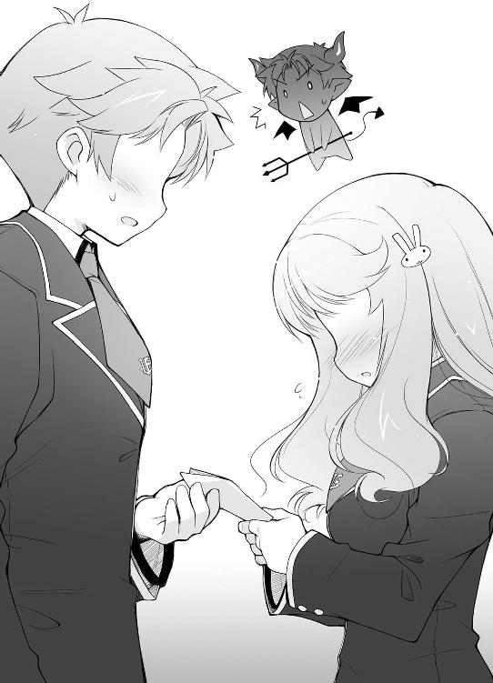
「あ、あの、それはそれで凄く困る勘違いなんですけど......」
「そんなことをしないでも、言ってくれたら僕が直接手を下してあげるのに。ああ大丈夫。 スタンガンなら隣のクラスの山下君に借りてくるから」
「吉井君。これは不幸の手紙じゃないですから」
「噓だ！ それは不幸の手紙だ！ 実際に僕はこんなにも不幸な気分になっているじゃないか！」
「吉井君」
子供のように手を振り回していると、きゅっと手を握られる感触が。見てみると、姫路さんが暴れる僕を抑えようとして手を握ってくれていた。
「落ち着いて下さい。そんなに暴れると身体をぶつけて怪我をしちゃいますよ？」
諭すような彼女の言葉。
心が落ち着き、望まない現実が僕の中に浸透し始める。
「......仕方ない。現実を認めよう......」
がっくりと膝をつく僕。なんだろう。こんな敗北感は二日ぶりくらいだ。
宛て名はやっぱり雄二なんだろうか？ 気になる。
「その手紙、相手はウチのクラスの――」
「......はい。クラスメイトです」
顔を真っ赤にしながらも迷いなく答える姫路さん。
これで確定した。間違いない。相手は雄二だ。流石に姫路さんに悪いので名指しはしないけど。
「......そっか。でも、そいつのどこがいいの？ そりゃ確かに、外見はそれなりだとは思うけど」
「あ、いえ。外見じゃなくて、あっ、もちろん外見も好きですけど！」
「憎いっ！ あの男が心底憎い！」
「そう、ですか......？」
「うん。外見に自信のない僕には羨ましくて」
「え？ どうしてですか!? とっても格好良いですよ！ 私の友達も結構騒いでいましたし！」
「え？ ホント？」
自分で言うのもなんだけど、なんて酔狂な友達なんだ。
「はい。よくわからないですけど、坂本君と二人でいる姿を見ては『たくましい坂本君と美少年の吉井君が歩いているのって絵になるよね』ってよく言っていました」
「良い友達だね。仲良くしてあげてね」
「『やっぱり吉井君が受けなのかな？』とも」
「前言撤回。その友達とは距離をおこう。姫路さんにはまだちょっと早いと思う」
僕が雄二と......おえっ。
「それにしても、外見もってことは、中身が良いの？」
「あ、えーっと......はい......」
「そうだね。肝臓とか頑丈そうだもんね」
高く売れそうだ。
「それは身体の中身です」
「じゃ、まさかありえないとは思うけど、そいつの性格が？」
「ありえなくありませんっ」
わわっ。姫路さんにしては珍しい大きな声だ。ちょっとびっくり。そこまで雄二に好意を寄せているなんて。
「......そいつの性格のどこがいいの？」
「や、優しいところとか......」
優しい？
僕をしてＤクラスにボコらせて、手首がもげそうなほど僕の関節を捻り上げたあの性格が優しいと？
「今から番号を教えるから、メモの準備はいい？ 大丈夫、とっても腕の良い脳外科医だから」
「別に気が変になったわけじゃありません！」
そんな馬鹿な!? あんな性格を優しいと評するなんて、姫路さんはどんな酷い環境にいたんだ!?
「優しくて、明るくて、いつも楽しそうで......私の憧れなんです」
その真剣な口調からは、茶化すなんてできそうにもない程の強い想いが感じられた。
「その手紙」
「は、はい」
「良い返事が貰えるといいね」
これじゃ、とても邪魔なんてできるワケがない。そこまで好きになった相手なら、クラスメイトとして応援してあげたいくらいだ。
「はいっ！」
嬉しそうに笑う姫路さんは本当に魅力的で、僕は雄二を心の底から羨ましいと思った。
☆
翌朝、いつも通り学校に向かう。
今日は試召戦争で消費した点数を補給する為にテスト漬けのはずだ。頑張らないと。
「おはよー」
教室の戸をガラガラと開ける。
相変わらずの畳と卓袱台。Ｄクラスの設備、ちょっともったいなかったんじゃないかなと思ってみたり。
「おう明久。時間ギリギリだな」
「ん、おはよう雄二」
既に到着していた雄二が隣の卓袱台で胡坐をかいている。持っているのは英語の教科書。一応テスト前の悪あがきをしているみたいだ。
「皆には何も言われなかったの？」
「ん？ 何がだ？」
「Ｄクラスの設備のこと」
折角勝ち取ったのに占領しないなんて、普通は不満に思うはずだ。
「ああ。皆にもきちんと説明をしたからな。問題ない」
「ふーん」
皆が素直に言うことを聞いたのは昨日の雄二の働きを評価してのことだろう。もっと上を狙えるかもしれないとわかった以上、Ｄクラス程度の設備には興味がないといったところだろうか。
「それよりお前はいいのか？」
「何が？」
「昨日の後始末だ」
はて、昨日の後始末......。ああ、雄二を殺ることか。
「うん。いくら僕でも、生爪を剝がされるとわかっていながら行動するなんてありえないよ」
「いや、俺の始末じゃなくて」
じゃ、なんだろう。雄二の言いたいことがわからない。
「一体何が言いたい――」
「吉井っ！」
「ごぶぁっ！」
僕の台詞が突然の拳で遮られる。
「し、島田さん、おはよう......」
「おはようじゃないわよっ！」
随分といきりたっているご様子の島田さん。
倒れている僕のこの角度からだとパンツが見えそうだ。あまり嬉しくないけど。
「アンタ、昨日はウチを見捨てただけじゃ飽き足らず、消火器のいたずらと窓を割った件の犯人に仕立てあげたわね......！」
......おお、そういえば。
「おかげで彼女にしたくない女子ランキングが上がっちゃったじゃない！」
まだ上がる余地があったことが意外だ。
「――と、本来は摑みかかっているんだけど」
島田さんが急に冷静さを取り戻す。
摑む前に殴っているから充分だと思うんだけど......。
「アンタにはもう充分罰が与えられているようだし、許してあげる」
「うん。さっきから鼻血が止まらないんだ」
「いや。そうじゃなくてね」
「ん？ それじゃ何？」
「一時間目の数学のテストだけど」
島田さんが楽しそうに、本当に心から愉しそうに告げる。
「監督の先生、船越先生だって」
聞いた瞬間、僕は扉を開けて廊下を疾駆した。
☆
「うあー......づがれだー」
机に突っ伏す。
とりあえず四教科が終了。ただでさえテストは疲れるのに、更に朝から船越先生とひと悶着あったから余計に疲れた。
ちなみに船越先生には近所のお兄さん（三十九歳／独身......お兄さん？）を紹介してあげた。昨日の呼び出しもその件だったということにしたし。
「うむ。疲れたのう」
いつの間にか近くに来ていた秀吉が答える。
今日は髪をポニーテールにしている。うぅっ。僕のストライクゾーンど真ん中だ。男のくせに僕を惑わすなんて！
「............（コクコク）」
いつも無口で存在が薄く思われがちなムッツリーニもいる。
「よし、昼飯食いに行くぞ！ 今日はラーメンとカツ丼と炒飯とカレーにすっかな」
勢いよく立ち上がる雄二からは全然疲れが感じられない。どういう身体の構造しているんだか。昼食のメニューも含めて。
「ん？ 吉井達は食堂に行くの？ だったら一緒していい？」
「ああ、島田か。別に構わないぞ」
「それじゃ、混ぜてもらうね」
「............（コクコク）」
ムッツリーニがうなずいているのは下心のせいだろう。島田さんに色気を求めても無駄だというのに。
「吉井、なんかウチの悪口考えてない？」
「滅相もございません」
なんて恐ろしい勘なんだ。
まぁ、とりあえず今は待ち望んだ昼休み。美味しいものでも食べて元気を出そう。学食だからそこまで美味しいというわけでもないけど。
「じゃ、僕も今日は贅沢にソルトウォーターあたりを――」
「あ、あの。皆さん......」
立ち上がり、学食に行こうとしたところで声をかけられた。
「うん？ あ、姫路さん。一緒に学食に行く？」
「あ、いえ。え、えっと......、お、お昼なんですけど、その、昨日の約束の......」
姫路さんはもじもじしながら僕らの方を見ている。どうしたんだろう。
「おお、もしや弁当かの？」
「は、はいっ。迷惑じゃなかったらどうぞっ」
と、身体の後ろに隠していたバッグを出してくる。
本当に!? 姫路さん、君はなんていい子なんだ！ 君のおかげで僕はもう少し長生きができるかもしれないよ！
「迷惑なもんか！ ね、雄二！」
「ああ、そうだな。ありがたい」
「そうですか？ 良かったぁ～」
ほにゃっと嬉しそうに笑う姫路さん。不思議だ。ご馳走してあげる側なのに喜ぶなんて。やっぱり僕には優しい女の子の気持ちってよくわからない。
「むー......っ。瑞希って、意外と積極的なのね......」
僕を親の仇のように睨んでくる島田さん。
厳しい女の子の気持ちもよくわからない。
「それでは、せっかくのご馳走じゃし、こんな教室ではなくて屋上でも行くかのう」
「そうだね」
こんな腐った畳と男の臭いしかしない場所で頂いて良いような物じゃない。屋上の気持ち良い空間で最大級の感謝を込めて味わうべきだろう。
「そうか。それならお前らは先に行っててくれ」
「ん？ 雄二はどこか行くの？」
「飲み物でも買ってくる。昨日頑張ってくれた礼も兼ねてな」
「あ、それならウチも行く！ 一人じゃ持ち切れないでしょ？」
と、珍しく気遣いを見せる島田さん。一体どういう風の吹き回しだ？
「悪いな。それじゃ頼む」
「おっけー」
雄二は疑うことなく受け入れている。僕だったらそのまま連れて行かれてボコられるのを警戒するんだけど。
「きちんと俺達の分をとっておけよ」
「大丈夫だってば。あまり遅いとわからないけどね」
「そう遅くはならないはずだ。じゃ、行ってくる」
雄二と島田さんは財布を持って教室を出て行った。きっと一階の売店に行ったんだろう。
「僕らも行こうか」
「そうですね」
姫路さんが抱えていたバッグを受け取り、屋上まで歩く。
結構重いな。随分と張り切って作ってくれたみたいだ。感動だ。
「天気が良くてなによりじゃ」
「そうですねー」
屋上へと続く扉の向こうは抜けるような青空。絶好のお弁当日和だ。
「あ、シートもあるんですよ」
姫路さんがバッグからビニールシートを取り出す。準備も万端だ。ピクニック用のセットだったりするのだろうか。
わいわいと準備を始める。幸い屋上は他に人もいなくて僕らの貸しきり状態だ。
「気持ちいいねー」
「............（コクリ）」
ビニールシートの上に足を投げ出す。日差しと風が気持ち良かった。
「あの、あんまり自信はないんですけど......」
姫路さんが重箱の蓋を取る。
『おおっ！』
僕らは一斉に歓声をあげた。
凄く旨そうだ。から揚げやエビフライにおにぎりやアスパラ巻きなど、定番のメニューが重箱の中に詰まっている。
「それじゃ、雄二には悪いけど、先に――」
「............（ヒョイ）」
「あっ、ずるいぞムッツリーニっ」
動きの素早いムッツリーニがエビフライをつまみ取った。
そして、流れるように口に運び――
「............（パク）」
バタン ガタガタガタガタ
豪快に顔から倒れ、小刻みに震えだした。
「............」
「............」
秀吉と顔を見合わせる。
「わわっ、土屋君!?」
姫路さんが慌てて、配ろうとしていた割り箸を取り落とす。
「............（ムクリ）」
ムッツリーニが起き上がった。
「............（グッ）」
そして、姫路さんに向けて親指を立てる。
多分、『凄く美味しいぞ』と伝えたいんだろう。
「あ、お口に合いましたか？ 良かったですっ」
ムッツリーニの言いたいことが伝わったのか、姫路さんが喜ぶ。
でもムッツリーニ、それならなぜ足が未だにガクガクと震えているんだい？ 僕にはＫＯ寸前のボクサーにしか見えないよ。
「良かったらどんどん食べてくださいね」
姫路さんが笑顔で勧めてくる。
そんなに嬉しそうに勧めてくれると断れない。むしろ、どんなにまずかろうとも残さず食べてやる、という気にさえなってくる。
――でも、僕には目を虚ろにして身体を震わすムッツリーニが忘れられない。
（......秀吉。あれ、どう思う？）
姫路さんに聞こえないくらいの小さな声で秀吉に話しかける。
（......どう考えても演技には見えん）
（だよね。ヤバいよね）
（明久。お主、身体は頑丈か？）
（正直胃袋に自信はないよ。食事の回数が少なすぎて退化してるから）
表情は当然笑顔のままだ。姫路さんにこの会話と僕らの驚愕を気取らせるわけにはいかない。
（ならば、ここはワシに任せてもらおう）
勇気ある秀吉の台詞が囁かれる。
（そんな、危ないよ！）
（大丈夫じゃ。ワシは存外頑丈な胃袋をしていてな。ジャガイモの芽程度なら食ってもびくともせんのじゃ）
見かけによらずタフな内臓だ。ジャガイモの芽って確か毒だったと思うけど。
（でも......）
（安心せい。ワシの鉄の胃袋を信じて――）
外見は美少女でありながら、誰よりも男らしい台詞を言おうとしたところで、
「おう、待たせたな！ へー、こりゃ旨そうじゃないか。どれどれ？」
雄二登場。
「あっ、雄二」
止める間もなく素手で卵焼きを口に放り込み、
パク バタン――ガシャガシャン、ガタガタガタガタ
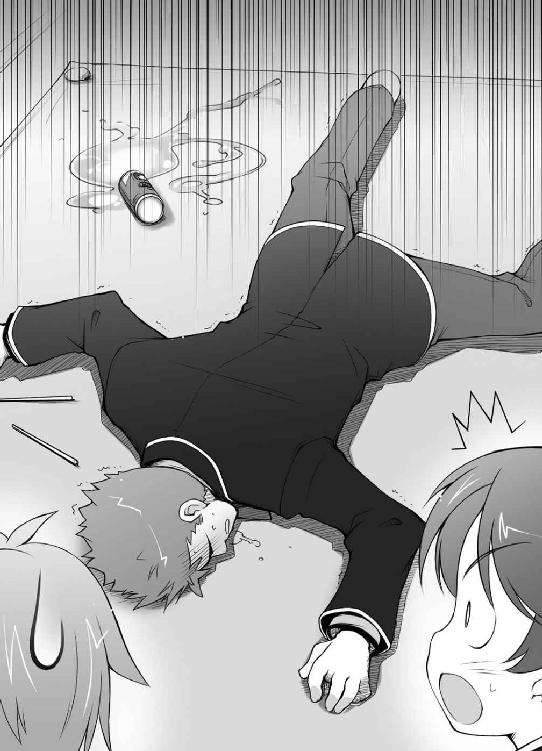
ジュースの缶をぶちまけて倒れた。
「さ、坂本!? ちょっと、どうしたの!?」
遅れてやってきた島田さんが雄二に駆け寄る。
......間違いない。コイツは、本物だ......。
ムッツリーニ同様激しく震える雄二を見る。
すると、雄二は倒れたまま僕の方をじっと見て、目でこう訴えていた。
『毒を盛ったな』と。
『毒じゃないよ、姫路さんの実力だよ』
僕も目で返事をする。いつも一緒に行動している僕らだからこそできる技。こういう時は凄く便利だ。
「あ、足が......攣ってな......」
姫路さんを傷つけないようウソをつく雄二。昨日姫路さんが言っていた通り、確かに優しいかもしれない。
「あはは、ダッシュで階段の昇り降りしたからじゃないかな」
「うむ、そうじゃな」
「そうなの？ 坂本ってこれ以上ないくらい鍛えられてると思うけど」
事情のわかっていない島田さんが不思議そうな顔をする。余計なことを言い出さないうちに退場させた方が良いかもしれないな。
「ところで島田さん。その手をついてるあたりにさ」
ビニールシートに腰を下ろしている島田さんの手を指差す。
「ん？ 何？」
「さっきまで虫の死骸があったよ」
噓だけど。
「えぇっ!? 早く言ってよ！」
慌てて手をよける。ここらへんは一応女の子みたいだ。
「ごめんごめん。とにかく手を洗ってきた方が良いよ」
「そうね。ちょっと行ってくる」
席を立つ島田さん。これでリスクは低減された。
「島田はなかなか食事にありつけずにおるのう」
「全くだね」
はっはっは、と男三人で朗らかに笑う。
一方その後ろ側で僕らは必死に作戦会議を行っていた。
（明久、今度はお前がいけ！）
（む、無理だよ！ 僕だったらきっと死んじゃう！）
（流石にワシもさっきの姿を見ては決意が鈍る......）
（雄二がいきなよ！ 姫路さんは雄二に食べてもらいたいはずだよ！）
（そうかのう？ 姫路は明久に食べてもらいたそうじゃが）
（そんなことないよ！ 乙女心をわかってないね！）
（いや、わかってないのはどちらかと言うとお前のことだと――）
（ええい、往生際が悪い！）
「あっ！ 姫路さん、アレはなんだ!?」
「えっ？ なんですか？」
僕が指した明後日の方向を姫路さんが見る。
（おらぁっ！）
（もごぁぁっ!?）
その隙に雄二の口の中一杯に弁当を押し込んだ。
目を白黒させているので、顎を摑んで咀嚼するのを手伝ってあげる。ご飯はよく嚙みましょう。
「ふぅ、これでよし」
「......お主、存外鬼畜じゃな」
秀吉が何か言っているけど気にしない。
雄二が更に激しく震えているけど気にしない。
「ごめん、見間違いだったよ」
「あ、そうだったんですか」
こんな古典的な手にひっかかってくれる姫路さんがありがたい。こんなに純粋だとちょっと心配になるけど。
「お弁当美味しかったよ。ご馳走様」
「うむ、大変良い腕じゃ」
雄二の大活躍によってお弁当は無事始末完了。僕らの気持ちはこの青空のように晴れやかだった。
「あ、早いですね。もう食べちゃったんですか？」
「うん。特に雄二が『美味しい美味しい』って凄い勢いで」
視界の隅で倒れている雄二がフルフルと力なく首を振る。
大丈夫、姫路さんには好印象だよ。もしかしたら、また作ってもらえるかもね。
「そうですかー。嬉しいですっ」
「いやいや、こちらこそありがとう。ね、雄二？」
倒れている雄二に水を向ける。意識があるから応えられるはず。
「う......うぅ......。あ、ありがとうな、姫路......」
ヤバい。目が虚ろだ。
「そういえば、美味しいと言えば駅前に新しい喫茶店が――」
ここで話題を逸らしにかかる僕。これ以上下手なことを言って『それじゃ、また作ってきますね』なんてことにならない為の配慮だ。
「ああ、あの店じゃな。確かに評判が良いな」
「え？ そんなお店があるんですか？」
「うん。今度今日のお礼に雄二がおごってくれるってさ」
「てめ、勝手なこと言うなっての」
作戦は成功した模様。どうやら危惧した事態は避けられそうだ。
取りとめのない会話の続く、ほのぼのした時間が過ぎる。
「あ、そうでした」
姫路さんがポン、と手を打った。
「ん？ どうしたの？」
「実はですね――」
ごそごそ、と鞄を探る。
「デザートもあるんです」
「ああっ！ 姫路さんアレはなんだ!?」
「明久！ 次は俺でもきっと死ぬ！」
雄二が命がけで僕の作戦を止めにかかる。
くっ、反応のいいヤツめ。
（明久！ 俺を殺す気か!?）
（仕方がないんだよ！ こんな任務は雄二にしかできない！ ここは任せたぜっ）
（馬鹿を言うな！ そんな少年漫画みたいな笑顔で言われてもできんものはできん！）
（この意気地なしっ！）
（そこまで言うならお前にやらせてやる！）
（なっ！ その構えは何!? 僕をどうする気!?）
（拳をキサマの鳩尾に打ち込んだ後で存分に詰め込んでくれる！ 歯を食いしばれ！）
（いやぁー！ 殺人鬼――！）
雄二が拳を握り、あわや肉弾戦というところで、秀吉がすっと立ち上がった。
（......ワシがいこう）
（秀吉!? 無茶だよ、死んじゃうよ！）
（俺のことは率先して犠牲にしたよな!?）
そりゃそうだ。見た目が美少女の秀吉の方が雄二よりも遥かに重要度は高いんだから。
（大丈夫じゃ。ワシの胃袋はかなりの強度を誇る。せいぜい消化不良程度じゃろう）
確かに毒までも無効化する秀吉の胃袋なら大丈夫かもしれない。
「どうかしましたか？」
「あ、いや！ なんでもない！」
「あ、もしかして......」
姫路さんが顔を曇らせる。
もしかして嫌がっているのがバレたか!?
「ごめんなさいっ。スプーンを教室に忘れちゃいましたっ」
言われてみれば、容器に入っているデザートはヨーグルトと果物のミックス（のように見えるもの）だ。お箸で食べるのは難しいかもしれない。
「取ってきますね」
スカートを翻し、階下へと消える姫路さん。チャンスだ。
「では、この間に頂いておくとするかの」
戦場に向かう戦士のように秀吉が容器を手に取る。
「......すまん。恩に着る」
「ごめん。ありがとう」
申し訳なさで俯きがちな僕らにフッと軽く笑いかけ、秀吉は言った。
「別に死ぬわけではあるまい。そう気にするでない」
「そ、それもそうだね！」
「ああ！ 秀吉、頼んだぞ！」
「うむ。任せておけ。頂きます」
容器を傾け、一気にかきこむ秀吉。
「むぐむぐ。なんじゃ、意外と普通じゃとゴばぁっ！」
また一輪、花が散った。命という儚い花が。
「......雄二」
「......なんだ？」
「......さっきは無理矢理食べさせてゴメン」
「......わかってもらえたならいい」
自称『鉄の胃袋』は白目で泡を吹いていた。
☆
「そういえば坂本、次の目標だけど」
「ん？ 試召戦争のか？」
「うん」
激しい昼食を終え、復活した皆でのんびりお茶をすする。特に秀吉には大量にお茶を飲ませる。お茶には殺菌成分が含まれているらしいから。
ちなみに島田さんはお茶だけにしかありつけていない。本人は憤慨していたけど、僕らとしては感謝してもらいたいくらいだ。
「相手はＢクラスなの？」
「ああ。そうだ」
そういえば昨日雄二が言っていた。Ｄクラスの窓の外に設置されている、Ｂクラス用エアコン室外機に用があるって。
まさかＡクラスを攻めるのにＢクラスの室外機は関係ないだろうから、次の目標はＢクラスだろう。
「どうしてＢクラスなの？ 目標はＡクラスなんでしょう？」
僕らの目標はＡクラスだ。通過点に過ぎないＢクラスを相手にする理由がわからないのだろう。僕もわからないし。
「正直に言おう」
雄二が急に神妙な面持ちになる。
「どんな作戦でも、うちの戦力じゃＡクラスには勝てやしない」
戦う前から降伏宣言。雄二らしくもない。
とはいえ、無理もないだろう。文月学園はＡからＦの六クラスから成るけど、Ａクラスは格が違う。別次元だと言ってもいい。五十人のＡクラス生徒のうち、四十人はまだいい。Ｂクラスよりも少々点数が上の普通の生徒だ。
でも、残り十人がヤバい。特に代表をやっている霧島翔子さん。彼女の力は想像を絶する。奇襲が成功して僕らが彼女一人を取り囲んだとしても、恐らく返り討ちに遭ってしまうだろう。
どんな作戦を練ろうとも、代表を討ち取れない限り勝利はない。止めを刺せない以上、僕らに勝ち目はないだろう。
「それじゃ、ウチらの最終目標はＢクラスに変更ってこと？」
ＡクラスほどじゃないけどＢクラスの設備だって立派過ぎるほどに立派だ。皆には何の不満もないだろう。
「いいや、そんなことはない。Ａクラスをやる」
「雄二、さっきと言ってることが違うじゃないか」
島田さんの台詞を引き継ぐように間に入る。Ａクラスに勝てるかどうかは僕にとって大きな問題だ。
「クラス単位では勝てないと思う。だから一騎討ちに持ち込むつもりだ」
「一騎討ちに？ どうやって？」
「Ｂクラスを使う」
使う？ Ｂクラスを？ なににどうやって？
「試召戦争で下位クラスが負けた場合の設備はどうなるか知っているな？」
「え？ も、もちろん！」
知らない。
（吉井君、下位クラスは負けたら設備のランクを一つ落とされるんですよ）
姫路さんの助け舟。なるほど、そうだったのか。
「設備のランクを落とされるんだよ」
「......まあいい。つまり、ＢクラスならＣクラスの設備に落とされるわけだ」
「そうだね。常識だね」
「では、上位クラスが負けた場合は？」
「悔しい」
「ムッツリーニ、ペンチ」
「ややっ。僕を爪切り要らずの身体にする動きがっ」
間違ってはいないと思うけど。悔しいよね？
「相手クラスと設備が入れ替えられちゃうんですよ」
またもや姫路さんのフォローが入る。いい子だなあ。
「つまり、うちに負けたクラスは最低の設備と入れ替えられるわけだね」
「ああ。そのシステムを利用して、交渉をする」
「交渉、ですか？」
「Ｂクラスをやったら、設備を入れ替えない代わりにＡクラスへと攻め込むよう交渉する。設備を入れ替えたらＦクラスだが、Ａクラスに負けるだけならＣクラス設備で済むからな。まずうまくいくだろう」
「ふんふん。それで？」
「それをネタにＡクラスと交渉する。『Ｂクラスとの勝負直後に攻め込むぞ』といった具合にな」
「なるほどねー」
学年で二番手のクラスと戦った後に休む暇なくまた戦争。これはきついだろう。
Ｆクラスも連戦だけど、僕達には不満という原動力がある。そもそも頭は悪いけど体力の余っている野郎がほとんどのクラスだし。
でもＡクラスはそうじゃないだろう。勝っても何も得られないし、Ｆクラス相手に時間をくうのも嫌がるはず。モチベーションの差は歴然としている。
「じゃが、それでも問題はあるじゃろう。体力としては辛いし面倒じゃが、Ａクラスとしては一騎討ちよりも試召戦争の方が確実であるのは確かじゃからな。それに――」
「それに？」
「そもそも一騎討ちで勝てるのじゃろうか？ こちらに姫路がいるということは既に知れ渡っていることじゃろう？」
ＦクラスがＤクラスに勝ったとなると、当然その勝ち方に注目が集まる。姫路さんの存在はもはや周知の事実だろう。そうなると相手も姫路さんに対してなんらかの対策を練っているはず。
「そのへんに関しては考えがある。心配するな」
僕の不安とは対照的に自信満々な雄二。
「とにかくＢクラスをやるぞ。細かいことはその後に教えてやる」
「ふーん。ま、考えがあるならいいけど」
勝算がなければこんなことは言い出さないだろうし。
「で、明久」
「ん？」
「今日のテストが終わったら、Ｂクラスに行って宣戦布告して来い」
「断る。雄二が行けばいいじゃないか」
今更どの面下げてそんなことを。
「やれやれ。それならジャンケンで決めないか」
「ジャンケン？」
うーん。ま、問答無用で行かされるよりはマシか。
「ＯＫ。乗った」
「よし。負けた方が行く、で良いな？」
雄二にコクリとうなずいて返す。
「ただのジャンケンでもつまらないし、心理戦ありでいこう」
そんな雄二の提案。
心理戦って、アレか。何を出すかを言って、その裏をかくのかどうかっていうやつ。なるほど面白い。
「わかった。それなら、僕はグーを出すよ」
ジャンケンの構えを取りながら雄二に告げる。
「そうか。それなら俺は――」
さて、雄二はどう考えるだろう。僕がそのまま正直にグーを出すと思うのか。それとも裏をかいてくると思うのか。こうなるとジャンケンも知的な競技になるね。
「お前がグーを出さなかったらブチ殺す」
ちょっ......！ 何その心理戦!?
「行くぞ、ジャンケン」
「わぁぁっ！」
パー（雄二） グー（僕）
「決まりだ。行って来い」
「絶対に嫌だ！」
納得いかない！ この心理戦は僕の意図していたものと全然違う！
「Ｄクラスの時みたいに殴られるのを心配しているのか？」
「それもある！」
「それなら今度こそ大丈夫だ。保証する」
まっすぐな目で雄二が僕を見てくる。
騙されるもんか！ そうやってまた酷い役割を押し付ける気なんだ！
「なぜなら、Ｂクラスは美少年好きが多いらしい」
「そっか。それなら確かに大丈夫だねっ」
これは僕にしかできない任務だ。責任重大だぞ。
「でも、お前不細工だしな......」
溜息混じりに雄二が呟く。なんだとこのっ！
「失礼な！ ３６５度どこからどう見ても美少年じゃないか！」
「５度多いぞ」
「実質５度じゃな」
「二人なんて嫌いだっ」
一年間の日数３６５日と混ざっちゃっただけなのに、人のちょっとした間違いを馬鹿にして！ ちくしょー！
「とにかく、頼んだぞー」
雄二の言葉を背中に受けて昼食はお開きになり、再びテスト漬けの午後が始まった。
☆
「......言い訳を聞こうか」
午後のテストも無事終了し、放課後。
僕はＢクラス生徒の暴行で千切れかけた袖を手で押さえながら雄二に詰め寄った。
「予想通りだ」
「くきぃー！ 殺す！ 殺し切るーっ！」
「落ち着け」
「ぐふぁっ！」
み、鳩尾強打......。あんまりだ......。
「先に帰ってるぞ。明日も午前中はテストなんだから、あんまり寝てるんじゃないぞ」
爽やかに言い残して教室を出て行く雄二。外道め。
「うぅ......腹が......」
ズキズキと痛む。ボディの効果が切れるまでは動けそうにない。
仕方なく教室から出て行くクラスメイトを横になりながら見送ることに。誰も心配して保健室に連れて行ってくれないなんて、僕って嫌われているんだろうか？ 姫路さんなら駆け寄ってきてくれそうな気がするんだけど。
あまり身体が動かないので首だけ巡らすと、姫路さんがまだ教室に残っているのが見えた。鞄を抱え込んでキョロキョロとあたりを見回している。かなり挙動が不審だ。まるで何かを警戒しているように見える。
――ああ、そういえば昨日手紙を書いていたんだっけ。もしかして、それをどこに置くべきか考えているのかな？
「よ、よいしょ......」
それ以上は見ていたら悪い気がして、僕は匍匐前進で教室を後にした。バカテスト 化学
問 以下の問いに答えなさい。
『ベンゼンの化学式を書きなさい』
姫路瑞希の答え
『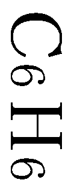』
教師のコメント
簡単でしたかね。
土屋康太の答え
『ベン＋ゼン＝ベンゼン』
教師のコメント
君は化学をなめていませんか。
吉井明久の答え
『Ｂ‐Ｅ‐Ｎ‐Ｚ‐Ｅ‐Ｎ』
教師のコメント
あとで土屋君と一緒に職員室に来るように。「さて皆、総合科目テストご苦労だった」
教壇に立った雄二が机に手を置いて皆の方を向いている。
今日も午前中がテストで、ついさっき全科目のテストが終わって昼食を取ったところだ。総合科目勝負なんてやったものだから、補給のテストが多くて大変だった。
「午後はＢクラスとの試召戦争に突入する予定だが、殺る気は充分か？」
『おおーっ！』
一向に下がらないモチベーション。僕らのクラスの唯一の武器と言ってもいいだろう。
「今回の戦闘は敵を教室に押し込むことが重要になる。その為、開戦直後の渡り廊下戦は絶対に負けるわけにはいかない」
『おおーっ！』
「そこで、前線部隊は姫路瑞希に指揮を取ってもらう。野郎共、きっちり死んで来い！」
「が、頑張ります」
男のノリについていけないのか、若干引き気味な姫路さんが一歩前に出る。
『うおおーっ！』
一緒に戦えるとあって、前線部隊の士気は最高潮に達しようとしていた。
とりあえず今回は廊下での戦闘で勝ちに行くらしい。ここで負けると話にならないから、戦力もＦクラス五十人中四十人を注ぎ込む。そこには我が軍最強かつ校内でも二位という強さを誇る姫路さんもいる。廊下での戦闘はまず取れるだろう。
キーンコーンカーンコーン
昼休み終了のベルが鳴り響く。これでいよいよＢクラス戦開始だ。
「よし、行ってこい！ 目指すはシステムデスクだ！」
『サー、イエッサー！』
敵を教室に押し込むのが目的なので、とにかく勢いが重要となる。
僕らはほぼ全力でＢクラスへと向かう廊下を駆け出した。
今回のこちらの主武器は数学。Ｂクラスは比較的文系が多いのと、なぜか長谷川先生は召喚可能範囲が広いというのが理由だ。一気に勝負をかけたい時にはありがたい先生だ。他にも英語のライティングの山田先生と物理の木村先生もいる。立会いの教師を多くして一気に駆け抜ける！
「いたぞ、Ｂクラスだ！」
「高橋先生を連れているぞ！」
正面を見ると向こうからゆっくりとした足取りでＢクラスのメンバーが歩いてくる姿があった。人数は十人程度。あくまで様子見といったところだろうか。
「生かして帰すなーっ！」
物騒な台詞が皮切りとなり、Ｂクラス戦が始まった。
『Ｂクラス 野中長男 ＶＳ Ｆクラス 近藤吉宗
総合 １９４３点 ＶＳ ７６４点 』
なっ!? なんて強さだ！ まさに桁が違う！
『Ｂクラス 金田一祐子 ＶＳ Ｆクラス 武藤啓太
数学 １５９点 ＶＳ 69点 』
『Ｂクラス 里井真由子 ＶＳ Ｆクラス 君島博
物理 １５２点 ＶＳ 77点 』
圧倒的な実力差に第一陣がことごとくやられていく。止めを刺される前にフォローをしないと戦力が激減してしまう。
きちんとフォローがされているか、戦力は分断されていないかを確認していると、
「お、遅れ、まし、た......。ごめ、んな、さい......」
息を切らして姫路さんがやってきた。全力疾走について来れなかったんだろう。
「来たぞ！ 姫路瑞希だ！」
Ｂクラスの誰かが叫ぶ。やっぱりＢクラスともなるとＡクラスに姫路さんがいないってことくらい知っていたか。下調べをきちんとやっておいたのだろう。
声を聞き、Ｂクラス生徒の目つきが変わった。明らかに姫路さんを警戒している。
「姫路さん、来たばかりで悪いんだけど......」
「は、はい。行って、きます」
そのままトタトタと戦場に紛れ込む姫路さん。あの姿を見ていると、なんだか心が和むな。写真にして飾りたいくらいだ。
「長谷川先生、Ｂクラス岩下律子です。Ｆクラス姫路瑞希さんに数学勝負を申し込みます！」
「あ、長谷川先生。姫路瑞希です。よろしくお願いします」
早速勝負を挑まれる姫路さん。向こうとしては早く潰しておきたい相手なんだろう。
「律子、私も手伝う！」
その後ろから、さらにもう一人Ｂクラスの女子が召喚を開始。Ｂクラスは十人しか来ていないのに二人がかりなんて、よほど警戒しているようだ。
『試獣召喚！』
喚声に応えて魔法陣が展開。おなじみの試験召喚獣が顔を出す。
敵の二体は剣と槍を構え、姫路さんの方は前に見た大剣を軽々と持っている。
そんな三人そっくりな召喚獣。ただし、
「あれ？ 姫路さんの召喚獣ってアクセサリーなんてしてるんだね？」
「あ、はい。数学は結構解けたので......」
「？ 結構解けると、アクセサリーをしてるの？」
デフォルメされた姫路さんは、大剣の他に左手首に綺麗な腕輪をしていた。
「そ、それって!?」
「私たちで勝てるわけないじゃない！」
向こうの二人がそれを見て顔色を変える。
あ、そういえば腕輪をしているってことは――
「じゃ、いきますね」
姫路さんが小さな手をキュッと握り込む。その動きに合わせて姫路さんの召喚獣が左腕を敵の方に向けた。
「ちょっと待ってよ!?」
「律子！ とにかく避けないと！」
大げさなくらい横に跳ぶ敵二人の召喚獣。その直後、姫路さんの召喚獣の腕輪が光を発した。
キュボッ！
「きゃあぁぁーっ！」
「り、律子！」
左腕から光線がほとばしったかと思った瞬間、逃げ遅れた敵の召喚獣の一体が炎に包まれる。
『Ｆクラス 姫路瑞希 ＶＳ Ｂクラス 岩下律子＆菊入真由美
数学 ４１２点 ＶＳ １８９点 ＆ １５１点 』
そういえば腕輪をしているってことは、特殊能力を持っているってことだっけ。何点以上を取ればいいのかは忘れたけど、一定以上の点数を取った人の召喚獣は特殊能力を使える腕輪を装備して出てくるなんてルールがあったような気がする。僕には全く縁のない話だったからすっかり忘れてた。
「ご、ごめんなさい。これも勝負ですのでっ」
大きく避けてバランスを崩した敵に肉薄し、大剣を振り下ろす姫路さんの召喚獣。相手の武器ごと一刀両断し、決着は一瞬でついた。
「い、岩下と菊入が戦死したぞ！」
「なっ！ そんな馬鹿な!?」
「姫路瑞希、噂以上に危険な相手だ！」
Ｂクラスの残り八人に驚愕の表情が浮かぶ。無理もない。
というか姫路さん、強すぎ。
「み、皆さん、頑張ってくださいー」
姫路さんの指揮官らしくない指示。でも、これはこれで効果絶大だ。
「やったるでぇーっ！」
「姫路さんサイコーッ！」
信者急増中。
「姫路さん、とりあえず下がって」
「あ、はい」
敵の士気も挫いたので、姫路さんには一旦下がってもらう。特殊能力は威力の分だけ消耗も激しいという話だったから。別に姫路さん抜きでも、相手の前線部隊崩壊は時間の問題だろうし。
「中堅部隊と入れ替わりながら後退！ 戦死だけはするな！」
そんな相手の指示が聞こえてくる。とりあえず狙いは成功。相手を徐々に下がらせて行って、目的のＢクラスに釘付けにするくらいで今日の戦闘は終了するだろう。こんなに計算どおりにうまくいくのも姫路さんの実力のおかげだ。感謝感謝。
「明久、ワシらは教室に戻るぞ」
「ん？ なんで？」
戦況を眺めていた僕のところに秀吉がやってきた。
戻る？ 本陣で何かあったのだろうか。
「Ｂクラスの代表じゃが......」
「うん」
「あの根本らしい」
「根本って、あの根本恭二？」
「うむ」
根本恭二という男は、とにかく評判が悪い。噂ではカンニングの常連だとか。目的の為には手段を選ばないらしく、曰く『球技大会で相手チームに一服盛った』とか『喧嘩に刃物は当然装備』とか。さすがにそこまで卑怯だとは思わないけど、用心に越したことはない。
「なるほど。戻っておいたほうが良さそうだね」
「雄二に何かがあるとは思えんが、念の為にの」
姫路さんに一言報告して、僕と秀吉は何人かを連れて教室へと引き返した。
☆
「......うわ、こりゃ酷い」
「まさかこうくるとはのう」
「卑怯、だね」
教室に引き返した僕らを迎えたのは、穴だらけになった卓袱台とヘシ折られたシャープや消しゴムだった。
「酷いね。これじゃ補給がままならない」
「うむ。地味じゃが、点数に影響の出る嫌がらせじゃな」
それにしても、なんか、根本君って器小さいなぁ......。
「あまり気にするな。修復に時間はかかるが、作戦に大きな支障はない」
「雄二がそう言うならいいけど」
何か微妙に気になる。
「それはそうと、どうして雄二は教室がこんなになっているのに気づかなかったの？」
昼休みまではこんなことはされていなかったから、戦闘開始から今までの間にやられた嫌がらせだろう。でも、それなら教室にいたはずの雄二が気づかないわけがない。
「協定を結びたいという申し出があってな。調印の為に教室を空にしていた」
「協定じゃと？」
「ああ。四時までに決着がつかなかったら戦況をそのままにして続きは明日午前九時に持ち越し。その間は試召戦争に関わる一切の行為を禁止する。ってな」
「それ、承諾したの？」
「そうだ」
「でも、体力勝負に持ち込んだ方がウチとしては有利なんじゃないの？」
「姫路以外は、な」
あ、そっか。
「あいつ等を教室に押し込んだら今日の戦闘は終了になるだろう。そうすると、作戦の本番は明日ということになる」
「そうだね。この調子だと本丸は落とせそうにないね」
「その時はクラス全体の戦闘力よりも姫路個人の戦闘力の方が重要になる」
局所的な戦闘になるってことだろうか。それとも、Ｄクラス戦みたいに姫路さんが止めを刺すとか。
「だから受けたの？ 姫路さんが万全の態勢で勝負できるように」
「そういうことだ。この協定は俺達にとってかなり都合が良い」
そっか。それならいいけど。
でも、そうすると何かがおかしい。いくら机に嫌がらせをしたいからといって、その為だけに僕らと対等な条件の協定を申し出てくるなんて。根本恭二はそんな甘い男なのだろうか。僕にはとてもそうは思えない。
「明久。とりあえずワシらは前線に戻るぞい。向こうでも何かされているかもしれん」
そう言うと、秀吉は教室を駆け足で出て行った。
「ん。雄二、あとよろしく」
「おう。シャープや消しゴムの手配をしておこう」
手を挙げる雄二に背を向け、秀吉を追いかけて駆け出す。
そこまで全力で走っていなかったのか、すぐに追いつくことが出来た。
「なんか、まだまだ色々やってきそうだね」
「そうじゃな。この程度で終わるとは思えん。気を引き締めた方が良さそうじゃ」
次はどんな姑息な手段で来るのだろうか。全く、そっちの方が戦力が上なんだから、正面からきてくれてもいいのに。
っと、そろそろ戦場が見えてきた。
「では、くれぐれも用心するんじゃぞ！」
「秀吉もね！」
互いに警告し合い、それぞれの部隊に戻る。
「吉井！ 戻ってきたか！」
出迎えてくれたのは須川君。あれ？ 部隊は副官の島田さんが指揮をとっているんじゃないんだ。
「待たせたね！ 戦況は？」
「かなりマズいことになっている」
「え!? どうして!?」
向こうから本隊が出て来た様子もないし、戦力としては負けるはずがないのにどうして。
「島田が人質にとられた」
「なっ!?」
今度は人質か！ 卑怯な手段の王道じゃないか！
「おかげで相手は残り二人なのに攻めあぐんでいる。どうする？」
現在、僕の部隊はそのせいで敵と睨み合いになっているらしい。
「......そうだね。とりあえず状況を見たい」
「それなら前に行こう。そこで敵は道を塞いでいる」
須川君が前を歩き、僕が後に続く。
僕の部隊の人垣を抜けると、そこには須川君の言うとおり二人のＤクラス生徒と捕らえられた島田さん及びその召喚獣の姿があった。
そして、そばには補習担当講師もいる。
「島田さん！」
「よ、吉井！」
なんだかドラマみたいだ。
「そこで止まれ！ それ以上近寄るなら、召喚獣に止めを刺して、この女を補習室送りにしてやるぞ！」
島田さんを捕らえている敵の一人が僕を牽制してくる。
そうか。数少ないウチの女子をただ戦死させるんじゃなく、人質にとって補習室送りをちらつかせ、こちらの士気を挫く作戦か。うまいやり方だ。
このまま攻め込めば、僕らが相手を倒す前に島田さんに止めを刺され、補習室送りにされて辛い思いをさせてしまう。
............問題ないな。
「総員突撃用意ぃーっ！」
「隊長それでいいのか!?」
仕方ないさ！ 戦争に犠牲はつきものなんだ！ 決して日頃痛めつけられている仕返しじゃなく、これは指揮官として必要な判断なんだ！
「ま、待て、吉井！」
敵からちょっと待ったコールがかかる。往生際が悪いな。
「コイツがどうして俺達に捕まったと思っている？」
「馬鹿だから」
「殺すわよ」
え？ 何？ どうして人質にされている島田さんに僕が気圧されているの？
「コイツ、お前が怪我をしたって偽情報を流したら、部隊を離れて一人で保健室に向かったんだよ」
なんだって!?
「島田さん......」
「な、なによ」
島田さんの顔は心なしか赤い。
「怪我をした僕に止めを刺しに行くなんて、アンタは鬼か！」
「違うわよ！」
恐ろしい。これじゃオチオチ保健室で昼寝もしていられない。
「ウチがアンタの様子を見に行っちゃ悪いっての!? これでも心配したんだからね！」
え......？
「島田さん。それ、本当？」
「そ、そうよ。悪い？」
ぷいっと顔を背ける島田さん。
そっか。僕のことを心配してくれたのか。あの島田さんが......。
「へっ。やっとわかったか。それじゃ、おとなしく」
「総員突撃ぃーっ！」
「どうしてよっ!?」
どうして？ そんなの決まっているじゃないか！
「あの島田さんは偽者だ！ 変装している敵だぞ！」
変装するべき相手を間違えたな！ あの島田さんにそんな優しさがあるわけがない！ 嬉々として僕を殺りにくるに決まっているじゃないか！
「おい待てって！ コイツ本当に本物の島田だって！」
狼狽するＢクラスの生徒。
「黙れ！ 見破られた作戦にいつまでも固執するなんて見苦しいぞ！」
「だから本当に――！」
『Ｂクラス 鈴木二郎 ＶＳ Ｆクラス 田中明
英語Ｗ 33点 ＶＳ 65点 』
『Ｂクラス 吉田卓夫 ＶＳ Ｆクラス 須川亮
英語Ｗ 18点 ＶＳ 59点 』
まずは死にかけ二人を撃破！ 召喚獣に止めを刺す！
「ぎゃぁぁぁー......！」
「たすけてぇー......！」
近くにいた補習講師に連行される二人。良い気味だ。
さて、残りは――
「皆、気をつけろ！ 変装を解いて襲い掛かってくるぞ！」
この島田さんモドキだ。
「よ、吉井、酷い......。ウチ、本当に心配したのに......」
「まだ白々しい演技を続けるか！ この大根役者め！」
島田さんはそんな台詞を吐いたりはしない！
「本当だよ！ 本当に心配したんだから！」
「取り囲むんだ。いくらＢクラスでも、この人数なら勝てるから」
「本当に、『吉井が瑞希のパンツ見て鼻血が止まらなくなった』って聞いて心配したんだから！」
「包囲中止！ コレ本物の島田さんだ！」
こんな噓に騙されるのは彼女以外いない。
「島田さん、大丈夫だった？」
床に座り込む彼女に手を差し伸べる。くそっ。Ｂクラスめ、なんて卑怯な真似を。
「............」
素直に僕の手に摑まり、立ち上がる島田さん。珍しい。
「無事で良かったよ。心配したんだからね」
「............」
「教室に戻って休憩するといいよ。疲れているでしょう？」
「............」
「それにしても、卑怯な連中だね。人として恥ずかしくないのかな？」
「............」
島田さんのリアクションがない。
なんか、やりにくい。
「あー、島田さん。実はね」
「......なによ」
やっと返ってきたリアクション。
こちらを向いてくれた彼女に対してお礼の気持ちを込めて、僕の出来る最高の笑顔を作る。
「僕、本物の島田さんだって最初から気付いていたんだよ？」
殺されかけた。
☆
「......ここはどこ？」
目を覚ますと汚い天井が視界に入った。ここは......ああ、教室か。
「あ、気が付きましたか？」
近くから可愛らしい声が聞こえてくる。この癒し系の声は姫路さんだな。
「心配しましたよ？ 吉井君ってば、まるで誰かに散々殴られた後に頭から廊下に叩きつけられたような怪我をして倒れているんですから」
それ正解。
「いくら試召『戦争』じゃからといって、本当に怪我をする必要はないんじゃぞ？」
いや、アレは戦争というよりは一方的な虐殺だったような......。
「ちょっと色々あってね。それで試召戦争はどうなったの？」
畳に横たわっていた身体を起こす。節々が猛烈に痛い。
「今は協定どおり休戦中じゃ。続きは明日になる」
「戦況は？」
「一応計画通り教室前に攻め込んだ。もっとも、こちらの被害も少なくはないがな」
雄二がこちらの被害を書いたメモを読み上げる。これも予想の内だけど、こちらの被害もかなり大きい。廊下戦は圧勝に見えるけどそれはこちらがほぼ全力を注いだ結果で、全体としては決して良い状態ではない。
「ハプニングはあったけど、今のところ順調ってわけだね」
「まぁな」
でも、相手はあの根本恭二だ。絶対にまだ何かを企んでいるはず。
「............（トントン）」
「お、ムッツリーニか。何か変わったことはあったか？」
気が付けばムッツリーニがそばに来ていた。
今日のムッツリーニは情報係で、戦闘には直接参加せずに周囲を警戒していた。相手の動きを逃さずチェックする為だ。
「ん？ Ｃクラスの様子が怪しいだと？」
「............（コクリ）」
ムッツリーニの話によると、どうやらＣクラスが試召戦争の用意を始めているとのこと。まさかＡクラスを相手に戦おうだなんて考えているわけないから――
「漁夫の利を狙うつもりか。いやらしい連中だな」
雄二の言うとおりこの戦争の勝者を相手に戦うつもりなのだろう。疲弊している相手ならやりやすいだろうから。
「雄二、どうするの？」
「んー、そうだなー」
ちらりと時計を見る。四時半。まだそんなに遅い時間じゃない。
「Ｃクラスと協定でも結ぶか。Ｄクラス使って攻め込ませるぞ、とか言って脅してやれば俺達に攻め込む気もなくなるだろ」
「それに、僕らが勝つなんて思ってもいないだろうしね」
Ｃクラスが僕らと結ぶのはそう難しい話ではなさそうだ。
「よし。それじゃ今から行ってくるか」
「そうだね」
痛む身体に活を入れて立ち上がる。うん、特に動きに支障はなさそうだ。
「秀吉は念の為ここに残ってくれ」
「ん？ なんじゃ？ ワシは行かなくて良いのか？」
「お前の顔を見せると、万が一の場合にやろうとしている作戦に支障があるんでな」
「よくわからんが、雄二がそう言うのであれば従おう」
素直に引き下がる秀吉。でも、雄二の言う念の為って何を想定してのことだろう？
「じゃ、行こうか。ちょっと人数少なくて不安だけど」
秀吉を残して、僕、雄二、姫路さん、ムッツリーニというメンバーでＣクラスに向かう。
「吉井。アンタの返り血こびりついて洗うの大変だったんだけど。どうしてくれんのよ」
「それって吉井が悪いのか？」
廊下に出たところで、ハンカチで手を拭っている島田さんと鞄を肩に担いでいる須川君に会った。
「あ、島田さんに須川君。ちょうど良かった。Ｃクラスまで付き合ってよ」
まさかないとは思うけど、万が一僕が使者をやっている時のようにＣクラスの皆にボコられそうになった時、この人数では心もとない。何より姫路さんを守る為の人材も必要だ。そう思って二人の友人に声をかけてみた。
もちろん、僕の大事な友達である二人が断るなんてことはない。
「んー、別にいいけど？」
「ああ。俺も大丈夫だ」
盾、もとい仲間ゲット。
「急がんとＣクラスの代表が帰ってしまうぞい」
「うん。急ごう」
こうして更に島田さんと須川君を加えた六人でＣクラスへと向かうことになった。
「Ｆクラス代表の坂本雄二だ。このクラスの代表は？」
教室の扉を開くなり、雄二がそこにいる全員に告げる。
Ｃクラスの教室にはまだかなりの人数が残っていた。ムッツリーニの情報通り漁夫の利を狙って試召戦争の準備をしているのだろう。
「私だけど、何か用かしら？」
僕らの前に出てきたのはまじりっけの無い黒髪をベリーショートにした気が強そうな女子。確か、小山さんだったかな？ バレー部のホープだったと思う。
「Ｆクラス代表としてクラス間交渉に来た。時間はあるか？」
「クラス間交渉？ ふぅん......」
あまり女子の悪口は言いたくないけど、小山さんは優しく穏やかな性格とはかけ離れているようだ。雄二の言葉を聞いてなんだかいやらしい笑みを浮かべている。
「ああ。不可侵条約を結びたい」
「不可侵条約ねぇ......。どうしようかしらね、根本クン？」
小山さんは振り返り、教室の奥にいる人達に声をかけた。
え？ 根本？
「当然却下。だって、必要ないだろ？」
「なっ!? 根本君！ Ｂクラスの君がどうしてこんなところに！」
奥から取り巻きを連れて現れたのは、目下の僕らの敵であるＢクラス代表の根本恭二。短く刈り揃えた黒髪と口の周りには整えられていないヒゲ。見るからに性格の悪そうな目つきは同じ鋭い目でも雄二とは全然違う。
「酷いじゃないかＦクラスの皆さん。協定を破るなんて。試召戦争に関する行為を一切禁止したよな？」
「何を言って――」
「先に協定破ったのはソッチだからな？ これはお互い様、だよな！」
根本君が告げると同時に取り巻きが動き出す。そしてその背後には先ほどまで戦場にいた、小柄な数学の長谷川先生の姿が隠されていた。
「長谷川先生！ Ｂクラス芳野が召喚を――」
「させるか！ Ｆクラス須川が受けて立つ！ 試獣召喚！」
Ｂクラス芳野君が雄二に対して攻撃しようとしたところを、間一髪で須川君が身代わりになる。須川君のファインプレイだ。
「僕らは協定違反なんてしていない！ これはＣクラスとＦクラスの――」
「無駄だ明久！ 根本は条文の『試召戦争に関する一切の行為』を盾にしらを切るに決まっている！」
「ま、そゆこと♪」
「へ理屈だ！」
「へ理屈も立派な理屈の内ってな」
「明久、ここは逃げるぞ！」
「くそっ！」
戦闘を行っている須川君に背を向け、僕らはＣクラスから離脱しようと駆け出す。
『Ｂクラス 芳野孝之 ＶＳ Ｆクラス 須川亮
数学 １６１点 ＶＳ 41点 』
「逃がすな！ 坂本を討ち取れ！」
背後から聞こえてくる根本君の指示と複数の足音。
はっきり言ってこれはかなりマズい。僕らはＢクラス相手で勝負になるわけないし、頼みの綱の姫路さんも数学の点数は消費してしまっている。きっと根本君はついさっきの戦闘で姫路さんが数学を消費していると知っているから長谷川先生を呼んだのだろう。汚いやり方だけど、効果的だ。
「はぁ、ふぅ......」
「姫路、大丈夫か？」
廊下を走っていると、姫路さんが遅れだした。運動が得意でない上に身体の弱い彼女にこの全力疾走は厳しそうだ。
「あ、あの、さ、先に......行って、ください......」
息も絶え絶えに姫路さんが言う。このまま彼女を連れていたら確実に追いつかれるだろう。でも、ここで彼女を失うわけにはいかない。姫路さんがいなくては明日の戦争がどうなるかわからないし、何より女の子を見捨てて逃げるなんてできるわけがない！
仕方ない、か......。
「雄二！」
「なんだ明久！」
「ここは僕が引き受ける！ 雄二は姫路さんを連れて逃げてくれ！」
その場に立ち止まり振り向いて、遅れて走ってくる雄二、姫路さんとすれ違う。
まさかこの僕がこんなことを言う日がくるなんて。男らしくて格好良いかな？
「よ、吉井君、私のことは、気に、しないで」
「......わかった。ここはお前に任せる」
姫路さんの言葉を遮り、雄二が応える。さすが雄二だ。感情に流されず、今必要な処置を正しく把握している。
「............（ピタッ）」
「いや、ムッツリーニも逃げて欲しい。多分明日はムッツリーニが戦争の鍵を握るから」
一緒に立ち止まったムッツリーニ。気持ちはありがたいけど、ムッツリーニにも重要な役割があるはず。ここで失うわけにはいかない。
「んじゃ、ウチは残ってもいいのかしら。隊長どの？」
僕の隣には一緒になって立ち止まった島田さんがいた。
「......頼めるかな？」
「はーいはい。お任せあれっと」
笑いながら追っ手が来る方向を見つめる島田さん。ありがとう。
「............（グッ）」
ムッツリーニは僕らに親指を立てて走り去っていった。
「......さて、どうするの、隊長どの？」
「うん。僕に考えがあるんだ」
「え？ アンタに？」
訝しげな表情で僕を見る島田さん。
うわ。なんだか凄く信用されてない。まったく失礼な副隊長だな。
「僕だって補習室になんて行きたくないからね。任せといて」
「ふーん。ま、アンタがそこまで言うなら信用しましょうか」
『いたぞっ！ Ｆクラスの吉井と島田だ！』
『ぶち殺せ！』
正面から追っ手がやってくる。長谷川先生も一緒だ。
「Ｂクラス！ そこで止まるんだ！」
相手の気勢を削ぐように、強い口調で呼び止める。
「いい度胸だ。たった二人で食い止めようってのか？」
「いや、その前に長谷川先生に話がある」
弱みを見せて主導権を握られないように強い語調で話をする。
（吉井、考えってのはなに？ 長谷川先生に相手の協定違反を訴える気？）
（ま、見ていなって。僕のやり方をさ）
心配する島田さんと小声でやりとり。全く心配性だなあ。
「なんですか、吉井君」
長谷川先生が前に出てきた。少々息が弾んでいる。運動不足なのかもしれない。
「Ｂクラスが協定違反をしていることはご存知ですか？」
教師である以上、協定違反に加担はできない。それは審判を務める人間としては当然のことだ。
（あの根本のことだからうまく言ってあるでしょうね）
「話を聞く限り、休戦協定を破ったのはＦクラスのようですね。そこで反撃を受けて協定違反を訴えるのは、戦争云々以前に人としてどうかと思いますよ」
先生の少々厳しい意見。事実が曲げられているような気もするけど、島田さんの言うとおり、長谷川先生には根本君が事前に説明しているようだ。
（さて、ここまでは予想通りだけど、どうするつもりなの？）
「............」
（アンタの考えってヤツに期待しているからね）
島田さんが僕に片目を瞑ってみせる。
だから僕は、彼女の期待に対してこう応えた。
「......万策、尽きたか......」
『こいつ馬鹿だぁーっ！』
失礼な。
☆
「坂本君、吉井君は、大丈夫、なんですか......？」
「もちろんだ。他のやつならともかく、明久ならなんとかなる」
「でも......」
「確かにアイツは勉強ができない。でもな、学力が低いからといって、全てが決まるわけじゃないだろう？」
「そ、それは、どういう......？」
「あのバカも、伊達に《観察処分者》なんて呼ばれてないってコトだ」
☆
『試獣召喚！』
追手が四人とも声を揃えて召喚獣を喚び出す。
走って逃げてはいるけれど、この先は行き止まり。僕らが戦闘区域に入るのは時間の問題だ。
「吉井、どうするのよ！」
「どうするって言われても、どうしよう！」
「いいから何か考えなさい！」
隣を走る島田さんと怒鳴り合うように会話をする。
「よし、こうしよう！ まず島田さんが四人を引きつける！」
「ふんふん、それで？」
「僕が逃げ易くなる」
「......アンタとは一度決着をつける必要がありそうね」
廊下の終わりが見えてきた。この先には壁と窓しかない。
「それじゃ、島田さんが召喚獣を喚んで」
「喚んで？」
「僕の盾になる」
「死になさい！」
「うわ、突然どうしたの!? キレる十代!?」
走りながらも器用に拳を打ち込んでくる島田さんをいなす。
っと、ヤバい。ついに行き止まりだ。
壁を背にして振り返ると、走ってくる敵の姿が見えた。
「ちょろちょろ逃げ回りやがって。疲れるだろうが！」
「というか、別にこいつらを追いかける必要はなかったんじゃないか？」
「仕方ないだろ？ こいつらのジョークに付き合っているうちに坂本達に逃げられちまったんだから......」
「さっさと片付けて帰らない？」
僕らが逃げ切れないということがわかると、四人はやる気なさそうに好き勝手なことを言い始めた。
追う必要がなかったんなら見逃してくれてもいいと思うんだけど。
「ちょっと、好き勝手言ってくれるじゃないの」
そんな相手の態度に島田さんが食ってかかる。むぅ。相変わらず気が強い。
「だって......なぁ？」
「だって、何よ？」
「お前ら、最低クラスじゃん」
なんてことを言うんだ。ここは言い返さないと！
「クラスは最低じゃないぞ！ メンバーが最低なだけだ！」
「吉井は黙ってなさい！」
あれ？ フォローしたのに怒られたよ？
「Ｆクラスだからって甘く見ないことね」
「そうか？ 所詮Ｆクラスだろ？」
「なら、自分で確かめることね！ 試獣召喚っ！」
島田さんが喚び声をあげる。それに応えて、何度か見た小さな島田さんが現れた。
「上等だ！ 実力差を思い知らせてやる！」
島田さんと言い合っていたＢクラスの男子が召喚獣を動かした。刀を手にしての突進。細かい動作が出来ない為の単純な攻撃だが、威力は充分だ。
「このぉっ！」
島田さんも同じように召喚獣を突っ込ませる。
そして、島田さんの召喚獣が力の差で倒され――
『Ｂクラス 工藤信二 ＶＳ Ｆクラス 島田美波
数学 １５９点 ＶＳ １７１点 』
「お前、本当にＦクラスか......？」
いや、対等にやり合ってる！ どういうことだ!?
「ふふっ。数学を選んだのが間違いだったわね。これなら漢字が読めなくてもなんとか解けるのよ！」
おおっ。なんだか島田さんが格好良いぞ！
「ちなみに島田さん。古典の点数は？」
「一桁よ」
言い切った！ これはこれで男らしいぞ！
「工藤君、フォローしようか？ こんなので補習室送りにはなりたくないでしょう？」
「......くっ。頼む」
悔しそうに唇を嚙む工藤君。確かにＦクラス相手にこれは屈辱だろう。
これで島田さんはいよいよ苦しくなった。鍔迫り合いで身動きが取れない今、敵が増えたら勝ち目はないだろう。
「島田さん、フォローしようか？ こんなので補習室送りにはなりたくないでしょう？」
「足手まといよ」
「酷いっ」
悔しくて唇を嚙む僕。扱いが悪いですっ！
けど、今は遊んでいる余裕はない。痛みや疲労があろうとも、ここは逃げるべきところじゃない。いよいよ僕も戦う時が来たみたいだ。
「――試獣召喚」
足元に見慣れた魔法陣が描かれていく。数学の点数に応じた強さを持つ僕の召喚獣が徐々に姿を現し始めた。
精悍な顔立ち。
しなやかな形態。
軽やかな動き。
喚び出すたびに感じる絶対的な強さが顕現する。
「吉井は構うな！ 見るからに雑魚だ！」
「返せっ！ 僕の格好良い描写を返せ！」
「どきなさい雑魚でヘナチョコ！」
「島田さん、君は僕の味方じゃないの!? あと、全く関係ない罵倒も混ざってるよ！」
確かに持ってる武器が木刀だし、弱そうに見えちゃうかもしれないけど......。
この状況はまさに四面楚歌（うち一人はクラスメイト）だ。
「これはキツいわね......！」
島田さんが表情を歪ませる。
勝っているとは言え、点数は僅差だ。当然島田さんの召喚獣も消耗が激しい。
「それじゃ、さようなら」
そこに切り込むＢクラス女子。島田さんの召喚獣は攻撃を避けられる状態じゃない。ここは僕の出番だ！
「えい、足払いっ」
召喚獣を走らせ、横から敵の足を引っ掛ける。
「ああっ！」
僕を無視していた上に、召喚獣の扱いに慣れていない相手は簡単によろめいてくれた。
「更にっ！」
敵に木刀を叩き込み、完全に体勢を崩させる。ここだっ！
「ぃぃいよいしょぉーっ！」
僕の召喚獣が勢いよく倒れこむ敵の後頭部を摑み、地面に叩きつける！
ゴン、と硬い音が廊下に響いた。
『......え？』
その場の皆の口から驚きの声が漏れる。
さて、勝負はここからだ。
☆
『Ｂクラス 真田由香 ＶＳ Ｆクラス 吉井明久
数学 １６６点 ＶＳ 51点 』
さっきの戦闘の参考用の点数が表示される。
は、恥ずかしい！ トリプルスコアですよ！
「なんでだよ！ 真田の点数の方が高いはずだろ!? なんであんな弱そうな召喚獣にやられてるんだよ！」
Ｂクラスの工藤君が先生に問いかける。別に先生が何かしているわけじゃないんだけどな。
「あれ？ 私の召喚獣、まだ生きてる」
先程地面に叩きつけられた真田さんの召喚獣が起き上がった。やっぱり威力は全然ないなぁ......。
「吉井、どういうこと？」
「んー......。まぁ、《観察処分者》の数少ない利点ってトコかな？」
Ｄクラス戦で最初に皆の戦闘を見て思い出したことがある。それは、召喚獣の操作は難しいっていうことだ。
力が異常に強い上に手足の長さは本来の自分とは違う召喚獣。この感覚にはそう簡単に慣れるもんじゃない。だからこそ、皆は突撃とかの単純操作しかできずに点数の差で勝敗が決定してしまう。
「利点って？」
「要するに、召喚獣を使うのに慣れてるってことかな」
僕には《観察処分者》として幾度となく召喚し、痛みや疲労のフィードバックを受けて感覚を共有してきたというアドバンテージがある。他の人よりは多少細かい動作をさせることだってできる。『走る』『刀を振り下ろす』なんて単純な動きだけだと、雑用なんてできないからね。
「ぐ、偶然よ！」
敵が再度刀を構えて突撃してくる。さっきので怯んでくれると嬉しかったんだけど。
「うりゃっ」
振り下ろされる刀に対して、横から合わせるように木刀をぶつける。点数でもわかるように力の差は三倍以上。正面からやりあったら木刀ごと真っ二つだから、必然的に僕の防御は力を流すような形に限定される。
「......っく！」
相手の刀が外に流れる。隙だらけだ。
「はぁぁっ！」
駆け抜ける様に胴を薙ぎ、そのまま一回転して追撃の面。
『Ｂクラス 真田由香 ＶＳ Ｆクラス 吉井明久
数学 １２６点 ＶＳ 51点 』
表示される点数に若干の修正が入った。これだけ攻撃を当てているのにまだこんなに差があるなんて、やっぱり僕の召喚獣は弱いなぁ......。
「......本気でやった方がいいな」
「Ｆクラス相手に四対二っていうのも嫌だけど、そうも言っていられないな」
後ろの二人が前に出てくる。いくらなんでもマズくない？
「あ、いや。できれば二対二のままだといいな～、なんて」
「吉井、違うわ。四対二じゃないわ」
「ん？ 援軍でも来てくれたの？」
「五対一よ」
「島田さん、この状況で君は僕を裏切るって言うのかい？」
一体僕はどこまで嫌われているんだ？
「行くぞコラァ！」
チンピラっぽい掛け声と共に斬りかかってくる敵召喚獣。それを屈んで避けさせる。
「こ――のっ！」
「ちょこまかと！」
ひぃぃっ！ 更に二体が追加された！ これはよく聞くリンチってやつでは？
敵同士が一直線上に並ぶように召喚獣を動かす。相手を倒すことより囲まれないことの方が重要だ。
「一撃当たれば倒せるのに......！」
「全然当たる気がしねぇ......」
「メタルス○イムみたいなヤツだな」
そこまで弱くはないやいっ。
「――んしょっ、と！」
ムキになって大振りになった敵の懐に飛び込み、パンチを合わせる。命中！
そして殴った僕の拳が痛む。ダメージのフィードバックだ。
「さて。ウチらも続きを始めましょうか？」
「......くっ。悪い！ 一旦退かせてもらう！」
一対一となれば勝ち目の薄い工藤君が撤退していく。鍔迫り合いで消耗もしていたようだし、賢明な判断だ。これで三対二。いや、島田さんも消耗しているから三対一か。
「島田さん、アレを！」
手が空いた島田さんに指示を出す。目線の先にあるのは前にも使った消火器！
「了解！」
抱え上げ、安全弁を引き抜く島田さん。これで逃げ切れる――
「............」
――はずなのに、彼女は全く動かない。なんで？
「は、早く使って！」
「うーん。どうしよっかな～？」
凄く楽しそうに笑顔を作ってくる。
「し、島田さん！ 何が望みなの!?」
こ、こんな時に島田さんの本性が出てきた！ いつまでも三対一なんてキツいのに！
「望み？ うーん、そうね～」
「今なら大抵の言うことは聞きます！」
「それじゃ、まずは呼び方から変えてもらいましょうか」
「変える！ 変えさせて頂きます！」
「じゃ、今後ウチはアンタのことを『アキ』って呼ぶから、アンタはウチのことを『美波様』って呼ぶように」
「み、美波様！ これでいい!?」
「今度の休み、駅前の『ラ・ペディス』でクレープ食べたいな～」
「おのれ！ 僕が塩水で生活しているというのになんという贅沢を――ああっ！ おごります！ おごらせて頂きますから置いてかないで美波様！」
「よろしい。じゃ、最後に」
「まだあるの!? もういいでしょう!?」
島田さん、とっても楽しそうです。
「ウチのことを愛してるって、言ってみて？」
くぅぅっ！ 調子に乗って！ あとで覚えてろよ！
「ウチのことを愛してる！」
一言一句間違いなく復唱する。これで文句ないだろっ！
「......ばか」
ブシャァァッ！
吹き出す消火剤。
粉まみれになりながら、僕らはなんとか脱出に成功した。
それなのに、島田さんの機嫌がとても悪かったのはなんでだろう？
☆
「あー、疲れたー」
「よ、吉井君！ 無事だったんですね！」
戸を開けると姫路さんが駆け寄ってきた。揺れる胸部がとても眩しい。
「うん。このくらいなんともいだぁっ！」
爪先を踏み抜かれる感触。今日は特に扱いが悪い気がする。
「ふんっ」
「し、島田さん。僕が何か悪いことでも」
「（キッ！）」
「あ。い、いや。美波」
射殺すような眼光で睨まれる。
流石に『様づけはしなくてもよい』とは言われたけど、呼び方は変えなきゃいけないらしい。呼び慣れないから困るなぁ。
「......随分二人とも仲良くなったみたいですね？」
「え？ コレで？」
仲良しは脅迫を受けた挙句足を踏みつけられたりはしないはず。
「お。戻ったか。お疲れさん」
「無事じゃったようじゃな」
「ん。ただいま」
雄二と秀吉もやってくる。ムッツリーニもこっちを見て小さく頷いていた。あまり心配はしていなかったみたいだけど。
「さて、お前ら」
「ん？」
その場に残る全員を見回して雄二が告げる。
「こうなった以上、Ｃクラスも敵だ。同盟戦がない以上は連戦という形になるだろうが、正直Ｂクラス戦の直後にＣクラス戦はきつい」
向こうもそれが狙いなのだから、僕らが勝ったとしたら間違いなく息つく暇を与えずに攻め込んでくるだろう。
「それならどうしようか？ このままじゃ勝ってもＣクラスの餌食だよ？」
「そうじゃな......」
「心配するな」
頭を悩ます僕らに雄二が野性味たっぷりの活き活きとした顔で告げる。
「向こうがそう来るなら、こっちにだって考えがある」
「考え？」
「ああ。明日の朝に実行する。目には目を、だ」
この日はそれで解散となり、続きは翌日へと持ち越しになった。バカテスト 英語
問 以下の問いに答えなさい。
『good および bad の比較級と最上級をそれぞれ書きなさい』
姫路瑞希の答え
『 good ― better ― best
bad ― worse ― worst』
教師のコメント
その通りです。
吉井明久の答え
『 good ― gooder ― goodest』
教師のコメント
まともな間違え方で先生驚いています。
good や bad の比較級と最上級は語尾に -er や -est をつけるだけではダメです。覚えておきましょう。
土屋康太の答え
『 bad ― butter ― bust』
教師のコメント
『悪い』『乳製品』『おっぱい』「昨日言っていた作戦を実行する」
翌朝、登校した僕らに雄二は開口一番そう告げた。
「作戦？ でも、開戦時刻はまだだよ？」
今の時刻は午前八時半。開戦予定時刻は九時だ。
「Ｂクラス相手じゃない。Ｃクラスの方だ」
「あ、なるほど。それで何をすんの？」
「秀吉にコイツを着てもらう」
そう言って雄二が鞄から取り出したのはうちの学校の女子の制服。
赤と黒を基調としたブレザータイプで、他校にもオトナのオトモダチにもかなり人気がある垂涎の逸品だ。
......ところで雄二、それどうやって手に入れたの？ 君に何があったんだい？
「それは別に構わんが、ワシが女装してどうするんじゃ？」
男としては大いに構った方がよさそうな気もするけど、秀吉だし。
それにしても、そんな物を着たらますます秀吉は女の子らしくなって、Ａクラスにいる双子の姉と見分けがつかなく――
「秀吉には木下優子として、Ａクラスの使者を装ってもらう」
なるほど。それが狙いか。
秀吉にはＡクラスに所属する双子の姉がいる。一卵性双生児かと思うほどよく似ていて、違う箇所なんてテストの点数と話し方ぐらいしか思いつかない。
彼女に化けてＡクラスとして圧力をかけるということか。
「と、いうわけで秀吉。用意してくれ」
「う、うむ......」
雄二から制服を受け取り、その場で生着替えを始める秀吉。
な、なんだろうこの胸のときめきは。相手は男なのに目が離せない！
「............!!（パシャパシャパシャパシャ！）」
ムッツリーニは指が擦り切れるんじゃないかというくらいに凄い速さでカメラのシャッターを切っている。
良かった。ときめいているのは僕だけじゃないみたいだ。
「よし、着替え終わったぞい。ん？ 皆どうした？」
きっと僕らは皆とても複雑な表情をしていることだろう。
「さぁな？ 俺にもよくわからん」
「おかしな連中じゃのう」
いや、絶対におかしいのは秀吉の外見だって！ どうしてそんなに色っぽいんだよ！
「んじゃ、Ｃクラスに行くぞ」
「うむ」
雄二が秀吉を連れて教室を出て行く。
「あ、僕も行くよ」
その後を慌てて追いかける。
昨日も思ったけど、ＣクラスってＦクラスから結構離れているな。クラスによって教室の大きさが違うから変な配置になるのも仕方ないけど、もうちょっとわかりやすい構造にして欲しいもんだ。
そのまましばらく歩き、Ｃクラスを目の前にして立ち止まる僕達。
「さて、ここからは済まないが一人で頼むぞ、秀吉」
Ａクラスからの使者になりすます以上、Ｆクラスの僕や雄二が同行するのはまずい。よって、僕らは離れた場所から様子を窺うことになる。
「気が進まんのう......」
あまり乗り気ではない様子の秀吉。そりゃそうだ。姉のふりをして敵を騙すなんて、決して気持ちの良い話ではないだろう。
「そこを何とか頼む」
「むぅ......。仕方ないのう......」
「悪いな。とにかくあいつらを挑発して、Ａクラスに敵意を抱くよう仕向けてくれ。お前ならできるはずだ」
秀吉は演劇部のホープで、演技が達者だったりする。勉強は苦手だけど、他の面に抜群に秀でているのだ。
「はぁ......。あまり期待はせんでくれよ......」
溜息と共に力なくＣクラスに向かう秀吉。本当に気が重そうだ。うまくいくだろうか。
「雄二、秀吉は大丈夫なの？ 別の作戦を考えておいた方が......」
「多分大丈夫だろう」
本当かな。どうにも乗り気でない秀吉が気になるんだけど。メンタル面の影響が演技に出なければいいけど......。
「心配だなぁ......」
「シッ。秀吉が教室に入るぞ」
雄二が口に指を当てる。ここから声は聞こえたりはしないだろうけど、念の為指示に従うことにした。
ガラガラガラ、と秀吉がＣクラスの扉を開ける音が聞こえてくる。
『静かになさい、この薄汚い豚ども！』
......うわぁ。
「流石だな、秀吉」
「うん。これ以上はない挑発だね......」
もう何も言わなくてもＣクラスの敵意はＡクラスに向かっているんじゃないだろうか？
『な、何よアンタ！』
この高い声は昨日会ったＣクラス代表の小山さんだろう。怒っているのが顔を見なくても伝わってくる。ま、いきなり豚呼ばわりだしねぇ......。
『話しかけないで！ 豚臭いわ！』
自分から来たくせに豚臭いって。もうツッコミどころが多すぎだよ。
『アンタ、Ａクラスの木下ね？ ちょっと点数良いからっていい気になってるんじゃないわよ！ 何の用よ！』
知名度としては秀吉よりも断然Ａクラスの木下優子の方が高いだろう。そもそも今の秀吉は女装しているわけだし、見分けがつくわけがない。しかも相手をうまく怒らせているので冷静な観察力も奪ってある。完璧な作戦だ。
『私はね、こんな臭くて醜い教室が同じ校内にあるなんて我慢ならないの！ 貴女達なんて豚小屋で充分だわ！』
『なっ！ 言うに事欠いて私達にはＦクラスがお似合いですって!?』
別にＦクラスとは言ってないぞ小山さん！
『手が穢れてしまうから本当は嫌だけど、特別に今回は貴女達を相応しい教室に送ってあげようかと思うの』
演劇部ってここまで出来ないとダメなのかな。それともうちの学校が異常なのかな。
『ちょうど試召戦争の準備もしているようだし、覚悟しておきなさい。近いうちに私達が薄汚い貴女達を始末してあげるから！』
そう言い残し、靴音をたてながら秀吉は教室を出てきた。
「これで良かったかのう？」
どこかスッキリした顔で秀吉が近寄ってくる。
「ああ。素晴らしい仕事だった」
『Ｆクラスなんて相手にしてられないわ！ Ａクラス戦の準備を始めるわよ！』
Ｃクラスから小山さんのヒステリックな叫び声が聞こえてくる。どうやらうまくいったようだ。......でも、なんだろうこの罪悪感は。
「作戦もうまくいったことだし、俺達もＢクラス戦の準備を始めるぞ」
「あ、うん」
余計なことに気を取られている暇はない。あと十分で今日の試召戦争が始まる。
僕らは早足でＦクラスへと向かった。
☆
「ドアと壁をうまく使うんじゃ！ 戦線を拡大させるでないぞ！」
秀吉の指示が飛ぶ。
あの後午前九時よりＢクラス戦が開始され、僕らは昨日中断されたＢクラス前という位置から進軍を開始した。
雄二曰く、『敵を教室内に閉じ込めろ』とのこと。
そんなわけで指示を遂行しようと戦争をしているんだけど、ここで一つ問題があった。
姫路さんの様子がおかしい。
本来は総司令官であるはずの彼女だけど、今日は一向に指示を出す気配がない。それどころか何にも参加しないようにしているように見える。何かあったんだろうか。
「勝負は極力単教科で挑むのじゃ！ 補給も念入りに行え！」
そんなわけで今指揮をとっているのは副司令の秀吉。ここ数時間は雄二の指示通りうまくやれている。
「左側出入り口、押し戻されています！」
「古典の戦力が足りない！ 援軍を頼む！」
押し戻された左の出入り口にいるのは古典の竹中先生だったか。
まずいな。Ｂクラスは文系が多いので、強力な個人戦力で流れを変えないと一気に突破される恐れがある。
「姫路さん、左側に援護を！」
雄二の作戦では午後に姫路さんが担う重要な役割があるらしいので、そうそう姫路さんに頼るわけにはいかないけど、こういった場合は仕方がない。
「あ、そ、そのっ......！」
その肝心な姫路さんが、戦線に加わらず泣きそうな顔をしてオロオロしている。マズい！ 突破される！
「だあぁっ！」
掛け声と共に人ごみを掻き分け、左側の出入り口にダッシュ。
そして立会人をやっている竹中先生の耳元でささやく。
「......ヅラ、ずれてますよ」
「っ!!」
頭を押さえて周囲を見回す竹中先生。
いざという時の為の脅迫ネタ～古典教師編～をこんなところで使う羽目になるなんて。これは計算外だ。
「少々席を外します！」
狙い通り少しの間が出来る。
「古典の点数が残っている人は左側の出入り口へ！ 消耗した人は補給に回って！」
応急処置だけど、これで少しは持ち直すはずだ。
さて、この間に。
「姫路さん、どうかしたの？」
姫路さんに声をかける。なんだかわからないけど様子がおかしい。この原因をはっきりさせないことには動きが取れない。
「そ、その、なんでもないですっ」
ブルブルと大きく首を振る姫路さん。長い髪がその動きに合わせて左右に広がる。あまりに大きな動きで、本当は何かあるのが見え見えだ。
「そうは見えないよ。何かあったなら話してくれないかな。それ次第では作戦も大きく変わるだろうし」
「ほ、本当になんでもないんです！」
そうは言うけど、泣きそうな顔は相変わらずだ。絶対におかしい。
「右側出入り口、教科が現国に変更されました！」
「数学教師はどうした！」
「Ｂクラス内に拉致された模様！」
右側までもＢクラスの得意とする文系科目に切り替えられるなんて。結構ピンチだ！
「私が行きますっ！」
そう言って姫路さんが戦線に加わろうと駆け出した。でも、
「あ......」
急にその動きを止めてうつむいてしまった。
なんだろう。何かを見て動けなくなったようだけど――。
姫路さんが見ていた方を目で追ってみる。
その先には窓際で腕を組んでこちらを見下ろす卑怯者――根本君の姿があった。
根本君がどうかしたのだろうか？
ここからは見えにくいけど、目を凝らして観察する。特に何もないようだけど――
「っ!!」
そこで僕は見た。彼が手にしている物を。
何の変哲もない、手に入れようと思えば普通に手に入る物だけど、逆にいくらお金を出しても買えない物でもある。
彼が手にしていた物。
それは三日前の放課後に姫路さんが恥ずかしがって僕から隠した、あの封筒だった。
「......なるほどね。そういうことか」
昨日の協定の話を聞いた時からおかしいと思っていたんだ。あの根本君が、そんな対等な条件の提案をしてくるなんて。
結局あの時点で既に姫路さんを無力化する算段が立っていたってわけか。それならあの協定だってうなずける。姫路さんが参加できないのなら、あの協定はＢクラスが圧倒的に有利な条件なのだから。
上手い方法だ。合理的で失うものもリスクもない。
「姫路さん」
「は、はい......？」
「具合が悪そうだからあまり戦線には加わらないように。試召戦争はこれで終わりじゃないんだから、体調管理には気をつけてもらわないと」
「......はい」
「じゃ、僕は用があるから行くね」
「あ......！」
姫路さんは何か言いたげだったけど、気にせず背を向けて駆け出す。大事な用ができたから。
「面白いことしてくれるじゃないか、根本君」
思わずそんな台詞が口からこぼれる。
あの野郎、ブチ殺す。
☆
「雄二っ！」
「うん？ どうした明久。脱走か？ チョキでシバくぞ」
教室に飛び込むと、雄二はノートに何かを書き込んでいるところだった。近づいてみるとそれが僕らと敵の現在の戦力を記したものだとわかる。
「話があるんだ」
「......とりあえず、聞こうか」
ちょっと今は雄二のジョークに構っている余裕はない。雄二もそれを察したのか、真面目な顔で僕の方を向いた。だから僕も真面目な顔で向き合う。
「根本君の着ている制服が欲しいんだ」
「......お前に何があったんだ？」
し、しまった！ これだと僕はただの変態だ！
「ああ、いや、その。えーっと......」
本当は制服の中にしまってある手紙が欲しいんだけど、そんな事情は話せないし......。どうしよう。このままだと、僕は男なのに男が着ている制服を欲しがる変態だと思われてしまう。きっと根掘り葉掘り事情聴取を受ける羽目に――
「まぁいいだろう。勝利の暁にはそれくらいなんとかしてやろう」
受け入れられた!? 貴様、なんだそのリアクションは！ まるで『お前にそういう趣味があったとしても不思議はない』とでも言わんばかりじゃないか！
とは言え、詳しい話をするわけにもいかない。くぅぅ......。かなり辛いけど、今はその誤解を甘んじて受けよう。
「で、それだけか？」
呆れたように僕を見る雄二。もちろんそれだけであるわけがない。
「それと、姫路さんを今回の戦闘から外して欲しい」
「理由は？」
「理由は言えない」
いずれは伝わることなのかもしれないけど、僕が口にするものじゃない。
「どうしても外さないとダメなのか？」
「うん。どうしても」
雄二が顎に手を当てて考えこむ。
今僕はかなりの無理を言っている。
姫路さん抜きでＢクラスを打倒するなんて、戦力ダウンなんてレベルじゃない。自殺行為だ。それが原因で負ける可能性は充分にある。そして、それは雄二の責任として問われることになる。
「頼む、雄二！」
僕は雄二に深く頭を下げた。
身勝手な話だと自分でも思う。僕の頼みで雄二が得るものは何もなく、リスクだけは満載だ。正直僕なら理由も話さないこんな頼みを受けたりはしない。
「......条件がある」
「条件？」
「姫路が担う予定だった役割をお前がやるんだ。どうやってもいい。必ず成功させろ」
けど、雄二は僕の願いを聞いてくれた。僕とは器の大きさが違う。
「もちろんやってみせる！ 絶対に成功させるさ！」
「良い返事だ」
ふっと口の端を上げる雄二。
「それで、僕は何をしたらいい？」
「タイミングを見計らって根本に攻撃をしかけろ。科目は何でもいい」
「皆のフォローは？」
「ない。しかも、Ｂクラス教室の出入り口は今の状態のままだ」
「......難しいことを言ってくれるね」
これは厄介だ。
今の戦闘はＢクラスの前後の扉の二カ所で行われており、場所の条件から常に一対一となっている。これは少しでも時間を稼ぐためと、雄二の作戦に必要な行動らしい。そんな中で教室の奥に陣取っている根本君に近付くには圧倒的な個人の火力が必要となる。そう、例えば姫路さんのような。僕にはその火力がない。
「もし、失敗したら？」
「失敗するな。必ず成功させろ」
いつになく強い口調。どうやら失敗はそのまま敗北に繋がると見て間違いなさそうだ。
さてどうする？ どうやって目的を達成する？
「それじゃ、うまくやれよ」
考え込む僕を置いて、雄二が教室を出ようと立ちあがる。
「え？ どこか行くの？」
「Ｄクラスに指示を出してくる。例の件でな」
Ｄクラス。多分室外機の件だろう。
それよりどうしようか。どうやって姫路さんの代わりを......
「明久」
教室を出る直前、雄二はこちらを振り向かずにこう言った。
「確かに点数は低いが、秀吉やムッツリーニのように、お前にも秀でている部分がある。だから俺はお前を信頼している」
「......雄二」
「うまくやれ。計画に変更はない」
そう言い残し、雄二は教室を後にした。
僕の、秀でている部分......。狭い場所での戦闘になっている以上、細かい動作なんて役に立たないし。
「......あ」
優れているってワケじゃないけど、他の人とは違う僕だけの特別がもう一つだけあった。点数の低い僕に出来る、数少ない方法が。あとは腹を決めるだけだ。
「......痛そうだよなぁ」
想像するだけで身体に痛みが走る。
でも、不思議と覚悟はすんなり決まった。
「――よっしゃ！ あの外道に目に物見せてやる！」
頰を叩き、自らを奮い立たせる。
方法がある。勝算もある。根性さえあればやれるのだとしたら、やらない理由はどこにもない。後のことなんか知るもんか！
「美波！ 武藤君と君島君も、協力してくれ！」
教室内で補給テストを受けていた三人に声をかける。
「どうしたの？」
「何か用か？」
「補給テストがあるんだけど」
この三人は既に昨日の戦闘で点数をかなり消費し、当面は補給テストを受けるのが任務になっている。
「補給テストは中断。その代わり、僕に協力して欲しい。この戦争の鍵を握る大切な役割なんだ」
「......随分とマジな話みたいね」
「うん。ここからは冗談抜きだ」
「何をすればいいの？」
「僕と召喚獣で勝負をして欲しい」
☆
「二人とも、本当にやるんですか？」
Ｄクラスに召喚獣勝負の立会人として呼ばれた英語の遠藤先生が僕ら二人に念を押す。
「はい。もちろんです」
「このバカとは一度決着をつけなきゃいけなかったんです」
向かい合うのは僕と美波。
「でも、それならＤクラスでやらなくても良いんじゃないですか？」
先生の言うとおり、場所はちょっとお邪魔しているＤクラス。でも、戦うのはＦクラス同士。周りにいるのも全員Ｆクラス生徒。遠藤先生からしてみると状況がよくわからないだろう。
「仕方ないんです。このバカは《観察処分者》ですから。オンボロのＦクラスで召喚したら、召喚獣の戦いの勢いで教室が崩れちゃうんで」
「もう一度考え直しては」
「いえ。やります。彼女には日頃の礼をしないと気が済みません」
再三に渡って考え直すよう説得してくる遠藤先生に、有無を言わせぬ口調で言い切る。
「――わかりました。お互いを知る為に喧嘩をするというのも、教育としては重要かもしれませんね」
大きく息をついてそう告げると、遠藤先生は僕らから少しだけ距離を取った。
これで召喚ができる。
大きく息を吸って、腹の底から声を出した。
「試獣召喚っ！」
おなじみ僕の召喚獣。《観察処分者》として雑用をやっていた時はただ面倒なだけだったけど、今はその肩書きに感謝してもいい気がする。
「行けっ！」
応じるように現れた美波の召喚獣目がけて駆け出すもう一人の僕。拳と一体となれと言わんばかりに木刀を強く握りしめさせる。行っけえぇ！
壁を背にした相手に対し、駆ける勢いを乗せて大きく拳を振るった。
ドンッ！
「ぐ――ぅっ！」
モーションの大きなその動作は、相手にいともたやすくかわされてしまった。
そして、壁を殴りつけた召喚獣の拳の痛みが僕にフィードバックする。
「――んのぉっ！」
更に力をこめた一撃を召喚獣が放つ。
横っ飛びにかわされ、こちらの拳はまたも壁を打つ羽目になった。
「つぅ......っ！」
再び痛みが拳に響く。
教室を揺るがすほどの力をこめた一撃だ。その反動も半端じゃない。脳天から爪先にかけて走る激痛に吐き気がした。
「アキ、時間がないわよ」
美波が壁にかけてある時計を見上げて告げる。
現在時刻は午後二時五十七分。作戦開始まであと三分。
『お前らいい加減諦めろよな。昨日から教室の出入り口に人が集まりやがって。暑苦しいことこの上ないっての』
遠くからＢクラス代表の根本君の声が聞こえてきた。
『どうした？ 軟弱なＢクラス代表サマはそろそろギブアップか？』
対するは聞き慣れた雄二の声。姫路さんが戦闘に参加できない分、雄二率いる本隊まで出動せざるを得なくなったのだろう。
「らぁっ！」
召喚獣を動かす。
大振りの攻撃は当たらない。
学習能力がないかのように壁に叩きつけられた拳。先の痛みも抜けないうちに新しい痛みが訪れる。
『はァ？ ギブアップするのはそっちだろ？』
『無用な心配だな』
『そうか？ 頼みの綱の姫路さんも調子が悪そうだぜ？』
『......お前ら相手じゃ役不足だからな。休ませておくさ』
『けっ！ 口だけは達者だな。負け組代表さんよぉ』
『負け組？ それがＦクラスのことなら、もうすぐお前が負け組代表だな』
「はぁぁっ！」
四度目の攻撃。
拳の先が温かい。
見てみると結構な量の出血があり、教室の床に血溜まりが出来ていた。
『......さっきからドンドンと、壁がうるせぇな。何かやっているのか？』
『さぁな。人望のないお前に対しての嫌がらせじゃないのか？』
『けっ。言ってろ。どうせもうすぐ決着だ。お前ら、一気に押し出せ！』
『......態勢を立て直す！ 一旦下がるぞ！』
『どうした、散々ふかしておきながら逃げるのか！』
「アキ、そろそろよ」
「うん。わかってる」
周りに集まっている皆にも目配せをする。
皆は黙ってうなずいてくれた。
「吉井君、島田さん。二人とも何をしようとしているのですか？」
状況のわからない遠藤先生が僕らを交互に見る。
僕らの偽りの勝負を怪しんで召喚獣を戻される前に決着をつける必要がある。
「おおおおおおっ！」
腹の底から力をこめて雄叫びをあげる。
五度目で決める。この先はない！
『あとは任せたぞ、明久』
敵の本隊を引き付けた雄二が、壁の向こうからよく通る声でそう告げてきた。
午後三時ジャスト。作戦開始だ。
「だぁぁーーっしゃぁーっ！」
召喚獣に持てる力の全てを注ぎ込んで、壁を攻撃する。
ハナから狙いはこのＢクラスにつながる壁だ。美波との勝負は壁を破壊させる召喚獣を喚び出す為の方便に過ぎない。
「――ぐぅぅうっ！」
全身に走る痛みに神経がきしむ。
けど、こんなことができるのは僕しかいない。痛みが返る代わりに、物理干渉能力を持つ僕の召喚獣だけしか。
ドゴォッ
豪快な音をたて、Ｂクラスにつながる道が生まれた。
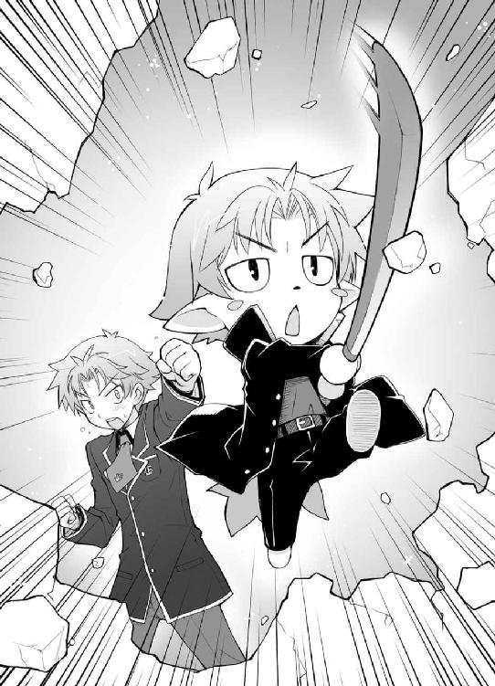
「ンなっ!?」
崩れた壁の向こうにある、驚いて引きつった根本君の顔。
向こうの戦力のほとんどは雄二率いる本隊を追って教室から出ている。
またとない好機。敵の主戦力は出払い、代表の防備は薄い。ここを逃せば勝ちはない！
「くたばれ、根本恭二ぃーっ！」
僕らは呆気に取られている根本君に勝負を挑むために駆け寄った。
「遠藤先生！ Ｆクラス島田が――」
「Ｂクラス山本が受けます！ 試獣召喚！」
「くっ！ 近衛部隊か！」
まだ教室に残っていた根本君の近衛部隊がその行く手をふさぐ。
僕らと根本君の距離は20メートル程度。広い教室のせいで随分と距離がある。
「は、ははっ！ 驚かせやがって！ 残念だったな！ お前らの奇襲は失敗だ！」
取り繕うように僕らをわらう根本恭二。
確かに僕らの奇襲は失敗だ。既に周りを近衛部隊全員に取り囲まれている。こうなった以上、点数に劣る僕らにこの場を切り抜ける術はない。だが、目的は達した。
ここで、急に話は変わるけど教科の特性を説明しよう。
各教科にはそれぞれ担当教師がいて、その先生によってテスト結果にも特徴が現れる。
例えば、数学の木内先生は採点が早い。
例えば、世界史の田中先生は点数のつけ方が甘い。
例えば、今一緒にいる英語の遠藤先生は、多少のことには寛容で見逃してくれる。
では、保健体育は？
保健体育は採点が早いわけでも、甘いわけでもない。遠くにいる相手に戦闘を仕掛けられるわけでもなければ、騙しやすい先生であるというわけでもない。
保健体育という教科の特性。それは、教科担当が体育教師であるが為の――
ダン、ダンッ！
出入り口を人で埋め尽くされ、四月とは思えないほどの熱気がこもった教室。そこに突如現れた生徒と教師、二人分の着地音が響き渡る。
エアコンが停止したので、涼を求める為に開け放たれた窓。
そこから屋上よりロープを使って二人の人影が飛び込み、根本恭二の前に降り立った。
そう。保健体育の特性は、教科担当が体育教師であるが為の――並外れた行動力。
「......Ｆクラス、土屋康太」
「き、キサマ......！」
「......Ｂクラス根本恭二に保健体育勝負を申し込む」
「ムッツリィニィーーッ！」
僕らが近衛部隊を引き付けたので丸裸になった根本恭二。最早どこにも逃げ場はない。
「――試獣召喚」
『Ｆクラス 土屋康太 ＶＳ Ｂクラス 根本恭二
保健体育 ４４１点 ＶＳ ２０３点 』
ムッツリーニの召喚獣は手にした小太刀を一閃し、一撃で敵を切り捨てる。
バカテスト 保健体育
問 以下の問いに答えなさい。
『女性は（ ）を迎えることで第二次性徴期になり、特有の体つきになり始める』
姫路瑞希の答え
『初潮』
教師のコメント
正解です。
吉井明久の答え
『明日』
教師のコメント
随分と急な話ですね。
土屋康太の答え
『初潮と呼ばれる、生まれて初めての生理。医学用語では、生理の事を月経、初潮のことを初経という。初潮年齢は体重と密接な関係があり、体重が43kgに達する頃に初潮をみるものが多い為、その訪れる年齢には個人差がある。日本では平均十二歳。また、体重の他にも初潮年齢は、人種、気候、社会的環境、栄養状態などに影響される』
教師のコメント
詳し過ぎです。「明久、随分と思い切った行動に出たのう」
終戦後、Ｂクラスにやってきた秀吉に、まず最初にそんなことを言われた。
「うぅ......。痛いよう、痛いよう......」
とにかく今は手が痛い。１００％全てが返るわけじゃないとは言え、素手で鉄筋コンクリートの壁を壊したんだから、その痛みは並じゃない。
「なんとも......お主らしい作戦じゃったな」
「で、でしょ？ もっと褒めてもいいと思うよ？」
「後のことを何も考えず、自分の立場を追い詰める、男気溢れる素晴らしい作戦じゃな」
「......遠まわしに馬鹿って言ってない？」
学校の壁を破壊するなんて、問題にならないわけがない。僕の放課後の予定は職員室でのハートフルコミュニケーションで埋まってしまった。初犯でなければ留年や退学になっていたかもしれない。
「ま、それが明久の強みだからな」
雄二がバンバンと肩を叩いてくる。
馬鹿が強み!? なんて不名誉な！
「さて、それじゃ嬉し恥ずかし戦後対談といくか。な、負け組代表？」
「.........」
床に座り込んでいる根本君。さっきまでの強気が噓のようにおとなしい。
「本来なら設備を明け渡してもらい、お前らには素敵な卓袱台をプレゼントするところだが、特別に免除してやらんでもない」
そんな雄二の発言に、ざわざわと周囲の皆が騒ぎ始める。
「落ち着け、皆。前にも言ったが、俺達の目標はＡクラスだ。ここがゴールじゃない」
「うむ。確かに」
「ここはあくまで通過点だ。だから、Ｂクラスが条件を呑めば解放してやろうかと思う」
その言葉でうちのクラスの皆はどこか納得したような表情になった。Ｄクラス戦でも言ったことだし、雄二の性格を理解し始めているのだろう。
「......条件はなんだ」
力なく根本君が問う。
「条件？ それはお前だよ、負け組代表さん」
「俺、だと？」
「ああ。お前には散々好き勝手やってもらったし、正直去年から目障りだったんだよな」
凄い言い様だけど、そうやって言われるだけのことを彼はやっている。だからこそ周りの人間は誰もフォローをしない。本人もそれはわかっているみたいだ。
「そこで、お前らＢクラスに特別チャンスだ」
昨日の昼に雄二が言っていた、あの取引の材料を提案する。
「Ａクラスに行って、試召戦争の準備が出来ていると宣言して来い。そうすれば今回は設備については見逃してやってもいい。ただし、宣戦布告はするな。すると戦争は避けられないからな。あくまでも戦争の意思と準備があるとだけ伝えるんだ」
「......それだけでいいのか？」
疑うような根本君の視線。当初の計画ではそれだけでよかったんだけどね。
「ああ。Ｂクラス代表がコレを着て言った通りに行動してくれたら見逃そう」
そう言って雄二が取り出したのは、先ほど秀吉が着ていた女子の制服。
これは僕の要望の制服を手に入れる為の手段だ。なんとなく雄二の個人的感情も入っているような気がするけど。
「ば、馬鹿なことを言うな！ この俺がそんなふざけたことを......！」
根本君が慌てふためく。そりゃ嫌だよね。
『Ｂクラス生徒全員で必ず実行させよう！』
『任せて！ 必ずやらせるから！』
『それだけで教室を守れるなら、やらない手はないな！』
Ｂクラスの仲間達の温かい声援。これを見るだけで根本君が今までどういった行動を取ってきたのかがわかる気がする。
「んじゃ、決定だな」
「くっ！ よ、寄るな！ 変態ぐふぅっ！」
「とりあえず黙らせました」
「お、おう。ありがとう」
一瞬で代表を見限って腹部に拳を打ち込んだＢクラスの男子。流石の雄二も変わり身の早さに驚いている。
「では、着付けに移るとするか。明久、任せたぞ」
「了解っ」
ぐったりと倒れている根本君に近付き、制服を脱がせる。
男の服を脱がせるなんてこの上ない苦痛だけど、仕方がない。これが僕の目的だから。
「う、うぅ......」
うめき声をあげる根本君。まずいな、目を覚ますかもしれない。
「ていっ！」
「がふっ！」
念の為に追加攻撃。その後に見慣れた男子の制服を剝ぎ、女子の制服をあてがう。
「うーん......。これ、どうするんだろう？」
男子の制服と違い、全然やり方がわからない。順序はどうなっているんだ？
そうやって困っていると
「私がやってあげるよ」
Ｂクラス女子の一人がそう提案してくれた。
「そう？ 悪いね。それじゃ、折角だし可愛くしてあげて」
「それは無理。土台が腐ってるから」
酷い言いようだ。
「じゃ、よろしく」
僕はその女子に根本君を託し、手に彼の制服を持ってその場を離れた。
多分、この辺に......。
ごそごそと根本君の制服を探る。すると、指の先に何かがあたる感触があった。
「......あったあった」
見覚えのあるその封筒を取り出し、自分のポケットに入れる。
さて、この制服はどうしようか？ ――よし。捨てちゃおう。折角だから根本君には女子の制服の着心地を家まで楽しんでもらうとしよう。
そんなことを考えながら、皆より先にＦクラスへ戻る。
根本君の制服をゴミ箱に突っ込み、その後ポケットから例の封筒を取り出した。
「落し物は持ち主に、っと」
姫路さんの席に置いてある、彼女の鞄に入れておく。これで作戦完了っと。
「吉井君！」
「ふぇっ!?」
背後からいきなり声をかけられて、不覚にも僕は間抜けな悲鳴をあげてしまった。なんか凄く恥ずかしい！
「な、なに？」
慌てて振り向く。するとそこには、姫路さんがいた。
「吉井君......！」
目が潤んでいる。今日の姫路さんは泣き顔ばかりだ。
「ど、どうかした？」
鞄を勝手にいじっている姿を見られてしまい、慌てる僕。すると、そんな僕に姫路さんはあろうことか正面から抱きついてきた。
「ほわぁぁっっと!?」
「あ、ありがとう、ございます......！ わ、私、ずっと、どうしていいか、わかんなくて......！」
どうしていいかわからないのは僕の方だ。くそっ！ これは新手の陽動作戦か？
「と、とにかく落ち着いて。泣かれると僕も困るよ」
「は、はい......」
精神の安定を図る為に姫路さんを引き離す。
ってしまった！ 引き離してどうする！ こんなチャンスは二度とないだろうが！
「いきなりすいません......」
涙目をこする姫路さん。
ああっ！ 言いたい！ もう一度抱きついてってお願いしたい！
「も、もう一度――」
「はい？」
げっ！ 思わず口に出ていた！ 何か他のことを言わないと！
「もう一度壁を壊したい！」
って馬鹿ぁっ！ 僕の馬鹿ぁっ！ お前はどこのテロリストだよ！ もう一度壁を壊してなんになるっていうんだよ！
「あの、更に壊したら留年させられちゃうと思いますよ......」
うん。わかってる。わかってるからそんなに気の毒そうな目で僕を見ないで。
「......それじゃ、皆のところに行こうか」
「あ、待ってください！」
いたたまれない気持ちで逃げようとする僕を、姫路さんが袖を握って引き止める。
「な、なに？」
「あの......」
まさか、良い病院を紹介してくれる気だろうか？ くっ！ 前に僕が言った台詞がそのまま返ってくるなんて、こんな屈辱はいつも通りだ！
「手紙、ありがとうございました」
うつむきがちに小さな声で言う彼女。
「別に、ただ根本君の制服から姫路さんの手紙が出てきたから戻しただけだよ」
「それってウソ、ですよね？」
「いや、そんなことは――」
「やっぱり吉井君は優しいです。振り分け試験で途中退席した時だって『具合が悪くて退席するだけでＦクラス行きになるのはおかしい』って、私の為にあんなに先生と言い合いをしてくれていたし......」
そういえば、そんなこともあったなぁ。あの時は先生に冷たくあしらわれたから、逆に熱くなっちゃったっけ。
「それに、この戦争って......私の為にやってくれてるんですよね？」
「え!? あ、いや！ そんなことは！」
「ふふっ。誤魔化してもダメです。だって私、自己紹介が中断された時に吉井君が坂本君に相談しているの、見ちゃいましたから」
あの相談を見られてたのか。これじゃごまかしようがない。
「凄く嬉しかったです。吉井君は優しくて、小学生の時から変わってなくて......」
な、なんか妙な空気だ。今までに経験したことのないむずがゆさを感じる。よくわからないけど、僕はこの雰囲気に耐えられそうにない！
「そ、その手紙、うまくいくといいね！」
とりあえず話題を変えよう。このままじゃおかしくなっちゃいそうだ。
「あ......。はいっ！ 頑張りますっ！」
そんな僕の言葉に応えたのは、姫路さんの満面の笑み。その笑顔を見て思う。
この子は本当に雄二のことが好きなんだな。わかっていたことだし、僕は雄二に敵わないと実感もしている。悔しいけどしょうがないか。
「で、いつ告白するの？」
下世話な話を振ってみる。ま、これくらいは許されてもいいよね。
「え、ええと......全部が終わったら......」
姫路さんは真っ赤になりながらもそう答えてくれた。
「そっか。けど、それなら手紙より直接言った方がいいかもね」
「そ、そうですか？ 吉井君はその方が好きですか？」
「うん。少なくとも僕なら顔を合わせて言ってもらう方が嬉しいよ」
手紙は根本君のせいで嫌な記憶になっていそうだし、姫路さん自身にとっても、きっとその方がいいだろう。
「本当ですか？ 今言ったこと、忘れないで下さいね？」
「え？ あ、うん」
僕の意見だから雄二とは違うかもしれないのに、姫路さんは金言を得たかのように嬉しそうだ。
『こ、この服、ヤケにスカートが短いぞ！』
『いいからキリキリ歩け』
『さ、坂本め！ よくも俺にこんなことを――』
『無駄口を叩くな！ これから撮影会もあるから時間がないんだぞ！』
『き、聞いてないぞ！』
と、いきなり廊下から響いてきた言い争い。どうやら始まるみたいだ。
「なんでしょうか？」
「なんだろうね？」
伝令だけじゃなくて、いつの間にか撮影会までスケジュールに入れられたみたいだ。きっと根本君は一生忘れられない素晴らしい思い出を背負うことになるだろう。
「とにかく、頑張ってね」
「はいっ！ ありがとうございます！」
元気よく返事をして、姫路さんは教室を出て行った。とても軽やかな足取りで。
さて。それじゃ僕も皆のところに行こう。
姫路さんの後を追い、足を踏み出す。
「――っと、その前に」
雄二の席に歩み寄り、ヤツの鞄を取り出す。
「とりあえず、雄二の教科書に卑猥な落書きでもしておこう」
僕がそう簡単に人の幸せを祝ってやる人間だと思うなよ！バカテスト 生物
問 以下の問いに答えなさい。
『人が生きていく上で必要となる五大栄養素を全て書きなさい』
姫路瑞希の答え
『①脂質 ②炭水化物 ③タンパク質 ④ビタミン ⑤ミネラル』
教師のコメント
流石は姫路さん。優秀ですね。
吉井明久の答え
『①砂糖 ②塩 ③水道水 ④雨水 ⑤湧き水』
教師のコメント
それで生きていけるのは君だけです。
土屋康太の答え
『初潮年齢が十歳未満の時は、早発月経とい。また、十五歳になっても初潮がない時を遅発月経、さらに十八歳になっても、初潮がない時を原発性無月経といい......』
教師のコメント
保健体育のテストは一時間前に終わりました。あの後、職員室で先生方の親身な指導を受けて疲れた僕は家に帰ってすぐに眠りについた。ボロ雑巾のように眠った。見た目も中身も。
そして点数補給のテストを終えた二日後の朝。
いよいよＡクラス戦を残すのみとなった僕らは、もうじきお別れになる予定のＦクラスで最後の作戦の説明を受けていた。
「まずは皆に礼を言いたい。周りの連中には不可能だと言われていたにも関わらずここまで来れたのは、他でもない皆の協力があってのことだ。感謝している」
壇上の雄二がいつも一緒にいる僕でも覚えのないほど、素直に礼を言った。
「ゆ、雄二、どうしたのさ。らしくないよ？」
「ああ。自分でもそう思う。だが、これは偽らざる俺の気持ちだ」
そんなことを言われると、なんだか僕まで胸が一杯になってくる。Ｆクラスの僕らがよくここまで来れたな、って。
「ここまで来た以上、絶対にＡクラスにも勝ちたい。勝って、生き残るには勉強すればいいってもんじゃないという現実を、教師どもに突きつけるんだ！」
『おおーっ！』
『そうだーっ！』
『勉強だけじゃねぇんだーっ！』
最後の勝負を前に、皆の気持ちが一つになっている。そんな気がした。
「皆ありがとう。そして残るＡクラス戦だが、これは一騎討ちで決着をつけたいと考えている」
先日の昼食時に聞いた話だったので僕は驚かなかったけど、クラスの皆はかなり驚いたようで、教室中にざわめきが広がった。
『どういうことだ？』
『誰と誰が一騎討ちをするんだ？』
『それで本当に勝てるのか？』
「落ち着いてくれ。それを今から説明する」
雄二がバンバン、と机を叩いて皆を静まらせる。
「やるのは当然、俺と翔子だ」
Ａクラス代表の霧島翔子さんとＦクラス代表の坂本雄二。クラス間の戦争を代理で行うのだから、代表同士の一騎討ちは当然と言えば当然だろう。
そこまでは知っている。
でも、雄二がどうやって勝とうとしているのかはわからない。
相手はあの霧島さんだ。学年主席であり、Ｂクラスを圧倒した姫路さんでも、点数ではかなりの差をつけられている。こう言っちゃ悪いけど――
「馬鹿の雄二が勝てるわけなぁぁっ!?」
思わず口に出ていた僕の頰をカッターがかすめる。殺す気か!?
って、まさか。いくら雄二でも、友達を本気で殺そうなんて考えるワケが、
「次は耳だ」
僕は友達じゃないようだ。
「まぁ、明久の言うとおり確かに翔子は強い。まともにやりあえば勝ち目はないかもしれない」
そこで認めるなら僕にカッターを投げつけなくても良かったと思うけど。
「だが、それはＤクラス戦もＢクラス戦も同じだっただろう？ まともにやりあえば俺達に勝ち目はなかった」
けど、僕達は今こうして勝ち進んできている。
「今回だって同じだ。俺は翔子に勝ち、ＦクラスはＡクラスを手に入れる。俺達の勝ちは揺るがない」
最初は勝てないと思っていた試召戦争を勝利に導いてきた雄二の言葉だ。無理な話に思えても、否定する人間はもうこのクラスにはいない。
「俺を信じて任せてくれ。過去に神童とまで言われた力を、今皆に見せてやる」
『おおぉーーーっ!!』
皆の意思を確認する必要はなさそうだ。全員が雄二を信じている。
「さて、具体的なやり方だが......一騎討ちではフィールドを限定するつもりだ」
「フィールド？ 何の教科でやるつもりじゃ？」
「日本史だ」
日本史？ 別に霧島さんが日本史を不得手としているとも、雄二が得意としているとも聞いたことがないけど、どうして日本史が？
「ただし、内容は限定する。レベルは小学生程度、方式は百点満点の上限あり、召喚獣勝負ではなく純粋な点数勝負とする」
小学生程度のレベルで満点あり？
その条件だと、満点が前提となって、ミスをした方が負けるといった注意力勝負になるだろう。正面きってやりあうよりは勝ち目があるかもしれない。
「でも、同点だったら、きっと延長戦だよ？ そうなったら問題のレベルも上げられちゃうだろうし、ブランクのある雄二には厳しくない？」
「確かに明久の言うとおりじゃ」
勝ち目が少しはあるかもしれないけど、それにしたって分の悪い賭けだ。この程度の作戦が雄二の切り札なんだろうか？
「おいおい、あまり俺を舐めるなよ？ いくらなんでも、そこまで運に頼り切ったやり方を作戦などと言うものか」
「？？ それなら、霧島さんの集中を乱す方法を知っているとか？」
「いいや。アイツなら集中なんてしていなくとも、小学生レベルのテスト程度なら何の問題もないだろう」
そりゃそうか。先生の監視がある中での妨害程度で、あの霧島さんが揺るぐとは思えない。けど、だとしたらどうやって勝つというんだろう？
「雄二。あまりもったいぶるでない。そろそろタネを明かしても良いじゃろう？」
クラスの皆も秀吉の言葉にうなずいていた。
「ああ、すまない。つい前置きが長くなった」
かぶりを振って、雄二は改めて口を開いた。
「俺がこのやり方を採った理由は一つ。ある問題が出れば、アイツは確実に間違えると知っているからだ」
ある問題？ なんだろう。
「その問題は――『大化の改新』」
「大化の改新？ 誰が何をしたのか説明しろ、とか？ そんなの小学生レベルの問題で出てくるかな？」
お受験校なら出てくるかもしれないけど、そんな問題が用意されるとは思えないし。
「いや、そんな掘り下げた問題じゃない。もっと単純な問いだ」
「単純というと――何年に起きた、とかかのう？」
「おっ。ビンゴだ秀吉。お前の言う通り、その年号を問う問題が出たら、俺達の勝ちだ」
大化の改新の年号だって？ そんな基礎的な問題を、あの霧島さんが本当に間違えるのかな？ 僕ですら『鳴くよウグイス、大化の改新』とすらすら答えられるのに。
「大化の改新が起きたのは、６４５年。こんな簡単な問題は明久ですら間違えない」
お願い......僕を......見ないで......。
「だが、翔子は間違える。これは確実だ。そうしたら俺達の勝ち。晴れてこの教室とおさらばって寸法だ」
それにしても、さっきから気になっていたけど――
「あの、坂本君」
「ん？ なんだ姫路」
「霧島さんとは、その......仲が良いんですか？」
そう。雄二は霧島さんを『アイツ』とか『翔子』とか呼んでいた。顔見知りでなければそんな呼び方はしない。
まさかとは思うけど、あの男......姫路さんに好かれているのみならず、才色兼備の霧島さんとまで良い関係なんてことはあるまいな......？
「ああ。アイツとは幼なじみだ」
「総員、狙えぇっ！」
「なっ!? なぜ明久の号令で皆が急に上履きを構える!?」
「黙れ、男の敵！ Ａクラスの前にキサマを殺す！」
「俺が一体何をしたと!?」
男子生徒の意見は言葉がなくても満場一致。クラスの団結って素晴らしいね。
「遺言はそれだけか？ ......待つんだ須川君。靴下はまだ早い。それは押さえつけた後で口に押し込むものだ」
「了解です隊長」
我らが仇敵め。男子高校生四十七人分の靴下をとくと味わえ！
「あの、吉井君」
「ん？ なに、姫路さん」
「吉井君は霧島さんが好みなんですか？」
「そりゃ、まぁ。美人だし」
「............」
「え？ なんで姫路さんは僕に向かって攻撃態勢を取るの!? それと美波、どうして君は僕に向かって教卓なんて危険なものを投げようとしているの!?」
「まぁまぁ。落ち着くんじゃ皆の衆」
パンパンと手を叩いて場を取り持つ秀吉。流石に冷静だ。
「む。秀吉は雄二が憎くないの？」
「冷静になって考えてみるが良い。相手はあの霧島翔子じゃぞ？ 男である雄二に興味があるとは思えんじゃろうが」
......おお、そう言えば。
「むしろ、興味があるとすれば......」
「......そうだね」
僕らの視線が一人に集中する。
「な、なんですか？ もしかして私、何かしましたか？」
慌てる姫路さん。君は何もしてないよ。何もしてないけど、何かされる可能性は大だ。
「とにかく、俺と翔子は幼なじみで、小さな頃に間違えて噓を教えていたんだ」
幼なじみという立場に未だ引っかかりを覚えるけど、まあいいだろう。霧島さんは女の子が好きなのだから。
「アイツは一度教えたことは忘れない。だから今、学年トップの座にいる」
一度覚えたことは忘れないほど頭が良い、でも今回はそれが仇になる。
「俺はそれを利用してアイツに勝つ。そうしたら俺達の机は――」
『システムデスクだ！』
☆
「一騎討ち？」
「ああ。Ｆクラスは試召戦争として、Ａクラス代表に一騎討ちを申し込む」
恒例の宣戦布告。
今回は代表である雄二を筆頭に、僕、姫路さん、秀吉にムッツリーニと首脳陣勢揃いでＡクラスに来ていた。
......毎回こうしてくれたら僕の制服は繕いだらけにならなかったのでは？
「うーん、何が狙いなの？」
現在雄二と交渉のテーブルについているのは秀吉――の双子の姉の木下優子さん。秀吉を女の子にしたそのままの姿で、とても可愛い。でも、この子を認めると秀吉にも気があるということに......！
「もちろん俺達Ｆクラスの勝利が狙いだ」
木下さんが訝しむのも無理はない。下位クラスに位置する僕らが、一騎討ちで学年トップの霧島さんに挑むこと自体が不自然なのだから。当然何か裏があると考えるだろう。
「面倒な試召戦争を手軽に終わらせることができるのはありがたいけどね、だからと言ってわざわざリスクを犯す必要も無いかな」
「賢明だな」
予想通りの返事。ここからが交渉の本番だ。
「ところで、Ｃクラスの連中との試召戦争はどうだった？」
雄二が腕を組み、顎に手を当てながら訊く。
「時間は取られたけど、それだけだったよ？ 何の問題もなし」
秀吉の挑発に乗り、昨日Ａクラスに攻め込んだＣクラス。その勝負は半日で決着がつき、今ＣクラスはＤクラスと同等の設備で授業を受けている。
「Ｂクラスとやりあう気はあるか？」
「Ｂクラスって......、昨日来ていたあの......」
「ああ。アレが代表をやっているクラスだ。幸い宣戦布告はまだされていないようだが、さてさて。どうなることやら」
「でも、ＢクラスはＦクラスと戦争したから、三ヶ月の準備期間を取らない限り試召戦争はできないはずだよね？」
試召戦争の決まりの一つ、準備期間。
戦争に敗北したクラスは三ヶ月の準備期間を経ない限り自ら戦争を申し込むことはできない。これは負けたクラスがすぐさま再戦を申し込んで、試召戦争が泥沼化しない為の取り決めだ。
「知っているだろ？ 実情はどうあれ、対外的にはあの戦争は『和平交渉にて終結』ってなっているってことを。規約にはなんの問題もない。......Ｂクラスだけじゃなくて、Ｄクラスもな」
これは設備を入れ替えなかったからこそできる方法だ。
「......それって脅迫？」
「人聞きが悪い。ただのお願いだよ」
なんだか雄二が根本君のように見える。この交渉の仕方、悪役だもんね......。
「うーん......わかったよ。何を企んでいるのか知らないけど、代表が負けるなんてありえないからね。その提案受けるよ」
「え？ 本当？」
意外とあっさりとした返事に驚き、会話に参加していない僕が声をあげてしまう。
「だって、あんな格好した代表のいるクラスと戦争なんて嫌だもん......」
ああ。そう言えば根本君は女子の制服で話をしに来たんだっけ。そのおかげで提案が通るなんて。これは思わぬ収穫だ。
「でも、こちらからも提案。代表同士の一騎討ちじゃなくて、そうだね、お互い五人ずつ選んで、一騎討ち五回で三回勝った方の勝ち、っていうのなら受けてもいいよ」
「う......」
能天気そうに見えて、きっちり警戒している。侮れない。
「なるほど。こっちから姫路が出てくる可能性を警戒しているんだな？」
「うん。多分大丈夫だと思うけど、代表が調子悪くて姫路さんが絶好調だったら、問題次第では万が一があるかもしれないし」
まるで姫路さんが軽く見られているかのような発言。
でも、彼女は別に的外れなことを言っているわけではない。それほど霧島さんは僕らと実力がかけ離れているのだ。
「安心してくれ。うちからは俺が出る」
「無理だよ。その言葉を鵜呑みには出来ないよ」
これは競争じゃなくて戦争だからね、と付け足す。その通りだ。
「そうか。それなら、その条件を呑んでも良い」
と、雄二の耳を疑うような返事。
本気!? 一騎討ち五回なんて、僕らに勝ち目はないよ!?
「ホント？ 嬉しいな♪」
「けど、勝負する内容はこちらで決めさせて貰う。そのくらいのハンデはあってもいいはずだ」
ああ、そうやって交渉を進める気だったのか。科目の選択権は僕らには必須だったけど、一騎討ちの上科目を選ばせろ、なんて虫の良い話を受けてくれるわけがない。だからこその五人制なんだろう。
「え？ うーん......」
またもや悩む木下さん。クラスを代表しての交渉だ。この会話如何で仲間全員の立場が変わる可能性がある。慎重になるのも当然だ。
「......受けてもいい」
「ぅわっ！」
び、びっくりしたぁー！
「......雄二の提案を受けてもいい」
突然現れた静かな、でも凜とした声。
いつの間にか霧島さんが近くに来ていた。物静かな人だとは知っていたけど、全く気配を感じさせないなんて。まるで武道の達人みたいだ。
「あれ？ 代表。いいの？」
「......その代わり、条件がある」
「条件？」
「......うん」
うなずいて、霧島さんは雄二を見た後に姫路さんを値踏みするかのようにじっくりと観察した。そして、顔を雄二に向けて言い放つ。
「......負けた方は何でも一つ言うことを聞く」
こ、これは、姫路さんの貞操と人生観の危機だ！ どどどどうしよう!? もしそんなことになったら......ドキドキして夜も眠れない！ デジカメを買えるほどお金なんて残ってないのに！
「............（カチャカチャ）」
「ムッツリーニ、まだ撮影の準備は早いよ！ というか、負ける気満々じゃないか！」
なんてことだ。このままではクラスの士気が下がってしまう。まさか、これも計算の内なのか？ 霧島翔子、流石は学年代表だ。恐ろしい。
「じゃ、こうしよう？ 勝負内容は五つの内三つそっちに決めさせてあげる。二つはうちで決めさせて？」
全ては譲ってくれなかったけど、木下さんの妥協案が得られた。さて、どうしよう？
（姫路さん、どうする？）
（え？ 何がですか？）
（何が、って。もし僕らが負けちゃったら姫路さんは......）
（何のことだかわからないですけど、きっと大丈夫です）
（そんな簡単に......。いい？ もし負けたら、姫路さんは霧島さんに――）
「交渉成立だな」
「ゆ、雄二！ 何を勝手に！ まだ姫路さんが了承してないじゃないか！」
いくらクラス代表だからって、勝手過ぎる！ これは姫路さんの問題じゃないか！
「心配すんな。絶対に姫路に迷惑はかけない」
自信満々の台詞。そこまで勝利を確信してるってことなんだろうか。
「......勝負はいつ？」
「そうだな。十時からでいいか？」
「......わかった」
独特の雰囲気を持つ人だな。話し方だけならムッツリーニに似ているし。
「よし。交渉は成立だ。一旦教室に戻るぞ」
「そうだね。皆にも報告しなくちゃいけないからね」
交渉を終了し、Ａクラスをあとにする。
僕らの試召戦争の終結は、すぐそこまで迫っていた。
☆
「では、両名共準備は良いですか？」
今日はここ数日の戦争で何度もお世話になっている、Ａクラス担任かつ学年主任の高橋先生が立会人を務める。今日も知的な眼鏡とタイトスカートから伸びる脚がとても綺麗だ。
「ああ」
「......問題ない」
一騎討ちの会場はＡクラス。こっちの方が広いし、腐った畳のＦクラスじゃ締まらないしね。
「それでは一人目の方、どうぞ」
「アタシから行くよっ」
向こうは秀吉の姉、木下優子さん。
対するこちらは、
「ワシがやろう」
その弟、木下秀吉だ。
きっと木下さんの苦手科目や集中力の乱し方を知っているはず。この勝負は秀吉が木下さんの心をどう乱すかで――
「ところでさ、秀吉」
「なんじゃ？ 姉上」
「Ｃクラスの小山さんって知ってる？」
「はて、誰じゃ？」
ん？ なんかマズいことが起きている気がする。
Ｃクラスの小山さんって、確かこの前秀吉が......
「じゃーいいや。その代わり、ちょっとこっちに来てくれる？」
「うん？ ワシを廊下に連れ出してどうするんじゃ姉上？」
秀吉が木下さんのフリをして罵倒しまくった相手だったような......。
『姉上、勝負は――どうしてワシの腕を摑む？』
『アンタ、Ｃクラスで何してくれたのかしら？ どうしてアタシがＣクラスの人達を豚呼ばわりしていることになっているのかなぁ？』
『はっはっは。それはじゃな、姉上の本性をワシなりに推測して――あ、姉上っ！ ちがっ......！ その関節はそっちには曲がらなっ......！』
ガラガラガラ
扉を開けて木下さんが戻ってくる。
「秀吉は急用ができたから帰るってさっ。代わりの人を出してくれる？」
「い、いや......。ウチの不戦敗で良い......」
にこやかに笑いかけながらハンカチで返り血を拭う木下さん。さすがの雄二も何も言えないみたいだ。
「そうですか。それではまずＡクラスが一勝、と」
高橋先生がノートパソコンを操作すると、壁一面の大きなディスプレイに結果が表示された。
『Ａクラス 木下優子 ＶＳ Ｆクラス 木下秀吉
生命活動 ＷＩＮ ＤＥＡＤ』
まだ生きてます、とは突っ込めなかった。
「では、次の方どうぞ」
「私が出ます。科目は物理でお願いします」
Ａクラスからは佐藤美穂さん。Ｆクラスからは、
「よし。頼んだぞ、明久」
「え!? 僕!?」
どうしよう！ クラスを代表して勝負なんて！ ここで僕が負けたら後がないのに！
「大丈夫だ。俺はお前を信じている」
自信たっぷりの雄二の言葉。
そうか。雄二のヤツ......
「ふぅ......。やれやれ、僕に本気を出せってこと？」
「ああ。もう隠さなくてもいいだろう。この場にいる全員に、お前の本気を見せてやれ」
『おい、吉井って実は凄いヤツなのか？』
『いや、そんな話は聞いたことないが』
『いつものジョークだろ？』
味方であるはずのＦクラスの皆の声。
ま、仕方ないか。今までの僕を見ていたら普通そう思うよね。でも、
「吉井君、でしたか？ あなた、まさか......」
対戦相手の佐藤さんが僕を見て何かに気付いたかのように戦く。
へぇ、良い観察眼をしているなぁ。
「あれ、気付いた？ ご名答。今までの僕は全然本気なんて出しちゃあいない」
戦闘の為に袖をまくり、手首を振る。軽い準備体操だ。
「それじゃ、あなたは......！」
「そうさ。君の想像通りだよ。今まで隠してきたけれど、実は僕――」
大きく息を吸い、この場にいる皆に告げる。
「――左利きなんだ」
『Ａクラス 佐藤美穂 ＶＳ Ｆクラス 吉井明久
物理 ３８９点 ＶＳ 62点 』
おかしい。本気を出したのに負けるなんて。
「このバカ！ テストの点数に利き腕は関係ないでしょうが！」
「み、美波！ フィードバックで痛んでるのに、更に殴るのは勘弁して！」
やっぱり六倍以上の点数を相手に慣れだけで勝てるわけないよね。
「よし。勝負はここからだ」
「ちょっと待った雄二！ アンタ僕を全然信頼してなかったでしょう！」
「信頼？ 何ソレ？ 食えんの？」
本気を出した左腕で殴りたい。
「では、三人目の方どうぞ」
「............（スック）」
ムッツリーニが立ち上がった。
科目選択権がここで初めて活きてくる。
なぜならムッツリーニは総合科目の点数のうち、実に80％を保健体育で獲得する猛者。その単発勝負ならＡクラスにだって負けはしない。
「じゃ、ボクが行こうかな」
Ａクラスからは色の薄い髪をショートカットにした、ボーイッシュな女の子が出て来た。誰だろう？ あまり見たことがないけど。
「一年の終わりに転入してきた工藤愛子です。よろしくね」
身体の凹凸も少なくて、ぱっと見少年のようだ。
「教科は何にしますか？」
高橋先生がムッツリーニに尋ねる。
「............保健体育」
ムッツリーニの唯一にして最強の武器が選択される。
「土屋君だっけ？ 随分と保健体育が得意みたいだね？」
工藤さんがムッツリーニに話しかける。なんだろう？ 転校生だし、ムッツリーニの実力を知らないのかな？ 随分と余裕みたいだけど。
「でも、ボクだってかなり得意なんだよ？ ......キミとは違って、実技で、ね♪」
な、なんだかとっても問題発言!? でも何でだろう？ 今僕は凄くときめいている！
「そっちのキミ、吉井君だっけ？ 勉強苦手そうだし、保健体育で良かったらボクが教えてあげようか？ もちろん実技で」
ドキドキしていたのがわかったのか、工藤さんに指名されてしまう。
「フッ。望むところ――」
「アキには永遠にそんな機会なんて来ないから、保健体育の勉強なんて要らないのよ！」
「そうです！ 永遠に必要ありません！」
「............」
「島田に姫路。明久が死ぬほど哀しそうな顔をしているんだが」
そんなことないよね？ 僕にだって、いつかはそういう機会が来るはずだよね......？
「そろそろ召喚を開始して下さい」
「はーい。試獣召喚っと」
「............試獣召喚」
二人に似た召喚獣が、それぞれ武器を手に持って出現する。ムッツリーニはＢクラス戦でも見せた小太刀の二刀流。一方工藤さんは、
「なんだあの巨大な斧は!?」
見るからに破壊力抜群の巨大な斧。オマケに例の腕輪までしている。ヤバい！ コイツはかなり強いぞ！
「実践派と理論派、どっちが強いか見せてあげるよ」
工藤さんが艶っぽく笑いかけるのと同時に、腕輪を光らせながら召喚獣が動いた。
巨大な斧に雷光をまとわせ、ありえないスピードでムッツリーニの召喚獣に詰め寄る。
「それじゃ、バイバイ。ムッツリーニくん」
そして、豪腕で斧を振う。これは避けられる攻撃じゃない！
「ムッツリーニっ！」
斧が召喚獣を両断する――
「............加速」
と思った直後、ムッツリーニの腕輪が輝き、彼の召喚獣の姿がブレた。
「......え？」
相手の戸惑う顔。僕にも状況がよくわからない。どうしてムッツリーニの召喚獣は相手の射程外にいるんだろう？
「............加速、終了」
ボソリと、ムッツリーニがつぶやく。
一呼吸置いて、工藤さんの召喚獣が全身から血を噴き出して倒れた。
『Ａクラス 工藤愛子 ＶＳ Ｆクラス 土屋康太
保健体育 ４４６点 ＶＳ ５７２点 』
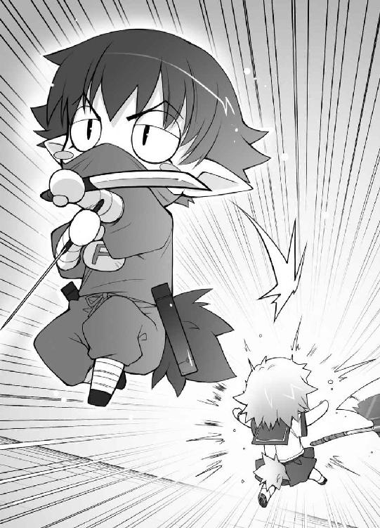
つ、強い！ 下手をすると僕の総合科目並の点数だ！
「Ｂクラス戦の時は出来がイマイチだったらしいからな」
雄二が驚く僕に説明してくれる。本気を出せばこんなに凄かったのか！
「そ、そんな......！ この、ボクが......！」
工藤さんが床に膝をつく。相当ショックみたいだ。
「これで二対一ですね。次の方は？」
高橋先生は淡々と作業を進める。自分のクラスが負けても気にならないのかな。
「あ、は、はいっ。私ですっ」
こちらからは当然姫路さんが出る。唯一Ｆクラスにいながら、Ａクラスとまともに戦える人材だ。
「それなら僕が相手をしよう」
Ａクラスから歩み出たのは――久保利光！
「やはり来たか、学年次席」
そう。彼の名前は久保利光。
姫路さんに次ぐ学年三位の実力の持ち主で、振り分け試験を姫路さんがリタイアした今、彼は僕らの学年で次席の座にいる。
「ここが一番の心配どころだ」
雄二が心配するのには理由がある。
久保君の実力は姫路さんとほぼ互角。総合科目の点数差にして20点程度しかない。姫路さんが連戦で疲れている今、負ける可能性は否定できない......！
「科目はどうしますか？」
高橋先生が二人に声をかける。
そういえば、科目選択権はどっちにあるんだろう？ 秀吉戦がうやむやになっていてよくわからない。
「総合科目でお願いします」
考えていると、勝手に久保君が答えていた。
「ちょっと待った！ 何を勝手に――」
「構いません」
「姫路さん？」
クレームをつけようとする僕を止める姫路さん。大丈夫なんだろうか？
「それでは......」
高橋先生が前と同じように操作を行う。
それぞれの召喚獣が喚び出されて――一瞬で決着がついた。
『Ａクラス 久保利光 ＶＳ Ｆクラス 姫路瑞希
総合科目 ３９９７点 ＶＳ ４４０９点 』
『マ、マジか!?』
『いつの間にこんな実力を!?』
『この点数、霧島翔子に匹敵するぞ......！』
至る所から驚きの声があがる。
点数差４００オーバー!? 姫路さんが強いのは知ってたけどこれは尋常じゃない！
「ぐっ......！ 姫路さん、どうやってそんなに強くなったんだ......？」
久保君が悔しそうに姫路さんに尋ねる。つい最近までは拮抗していた実力がいつの間にかここまで離されたんだ。気になるのも当然だろう。
「......私、このクラスの皆が好きなんです。人の為に一生懸命な皆のいる、Ｆクラスが」
「Ｆクラスが好き？」
「はい。だから、頑張れるんです」
姫路さんの嬉しい台詞。
そっか。姫路さん、Ｆクラスが好きなのか。こんな頭の悪い男だらけのクラスが。その中には僕も含まれているわけで、そう思うととても温かい気持ちになってくる。
「これで二対二です」
高橋先生の表情にも若干の変化が見られた。これはかなり珍しい。よほど姫路さんの急成長に驚いたのだろう。あるいは、ＦクラスがＡクラスと渡り合っていることに戸惑っているのかもしれない。
「最後の一人、どうぞ」
「......はい」
Ａクラスからは最強の敵、霧島翔子さん。
そして、ウチのクラスからは当然、
「俺の出番だな」
坂本雄二。コイツしかいない。
「教科はどうしますか？」
霧島さんが負けるわけないと思っているのか、Ａクラスの皆は特に騒いだりしない。静かなものだ。
「教科は日本史、内容は小学生レベルで方式は百点満点の上限ありだ！」
ざわ......！
雄二の宣言で、Ａクラスにざわめきが生まれる。
『上限ありだって？』
『しかも小学生レベル。満点確実じゃないか』
『注意力と集中力の勝負になるぞ......』
これで僕らに可能性が出てくる。勝利の可能性が。
それがわかったからこそ、Ａクラスの皆はざわついている。
「わかりました。そうなると問題を用意しなくてはいけませんね。少しこのまま待っていてください」
一度ノートパソコンを閉じ、高橋先生が教室を出て行く。
教育熱心な高橋先生のことだから、小学生レベルのテストも資料として持っていたりするのだろう。
そんな先生の背中を見送り、雄二に近づく。
「雄二、あとは任せたよ」
ぐっと雄二の手を握る。僕らに出来ることは全てやった。あとは雄二の勝負で全てが決まる。
「ああ。任された」
ぐっと力強く握り返された。
「.........（ビッ）」
ムッツリーニが歩み寄り、ピースサインを雄二に向ける。
「お前の力には随分助けられた。感謝している」
「............（フッ）」
ムッツリーニは口の端を軽く持ち上げ、元の位置に戻った。
「坂本君、あのこと、教えてくれてありがとうございました」
「ああ。明久のことか。気にするな。あとは頑張れよ」
うん？ 僕のこと？ 雄二は何を話したんだろう。
「はいっ」
姫路さんの元気な返事を聞いて、雄二は楽しそうにやんわりとした笑みを浮かべた。相手を思いやるような、優しい表情だ。
「では、最後の勝負、日本史を行います。参加者の霧島さんと坂本君は視聴覚室に向かって下さい」
戻ってきた高橋先生がクラス代表二人に声をかける。
「......はい」
短く返事をし、霧島さんが教室を出て行った。
「じゃ、行ってくるか」
「はい。行ってらっしゃい。坂本君」
「ああ」
姫路さんに送り出され、雄二も戦場に向かう。
これでいよいよ決着だ。泣いても笑っても、試召戦争が終了する。
「皆さんはここでモニターを見ていて下さい」
高橋先生が機械を操作すると、壁のディスプレイには視聴覚室の様子が映し出された。
先に霧島さんが席に着き、続いて雄二がやってくる。
『では、問題を配ります。制限時間は五十分。満点は１００点です』
画面の向こうで日本史担当の飯田先生が問題用紙を裏返しのまま二人の机に置いた。
『不正行為等は即失格になります。いいですね？』
『......はい』
『わかっているさ』
『では、始めてください』
二人の手によって問題用紙が表にされる。
「吉井君、いよいよですね......！」
「そうだね。いよいよだね」
「これで、あの問題がなかったら坂本君は......」
「集中力や注意力に劣る以上、延長戦で負けるだろうね。でも」
「はい。もし出ていたら」
「うん」
もし出ていたら、僕らの勝ちだ。
誰もが固唾を飲んで見守る中、ディスプレイに問題が映し出される。
出ているか、出ているのか......？
《次の（ ）に正しい年号を記入しなさい。》
（ ）年 平城京に遷都
（ ）年 平安京に遷都
流石は小学生レベルの問題。僕でもわかりそうだ。
これなら、出ているか......！
（ ）年 鎌倉幕府設立
（ ）年 大化の改新
「あ......！」
出て、いた......。
「よ、吉井君っ」
「うん」
「これで、私たちっ......！」
「うん！ これで僕らの卓袱台が」
『システムデスクに！』
揃ったＦクラス皆の言葉。
「最下層に位置した僕らの、歴史的な勝利だ！」
『うぉぉぉぉっ！』
教室を揺るがすような歓喜の声。《日本史勝負 限定テスト １００点満点》
《Ａクラス 霧島翔子 97点》
ＶＳ
《Ｆクラス 坂本雄二 53点》バカテスト 歴史
問 次の（ ）に正しい年号を記入しなさい。
『（ ）年 キリスト教伝来』
霧島翔子の答え
『１５４９年』
教師のコメント
正解。特にコメントはありません。
坂本雄二の答え
『雪の降り積もる中、寒さに震える君の手を握った１９９３』
教師のコメント
ロマンチックな表現をしても間違いは間違いです。「三対二でＡクラスの勝利です」
視聴覚室になだれこんだ僕らに対する高橋先生の締めの台詞。
ええ、わかっています。僕らの負けです。完膚なきまでに。
「......雄二、私の勝ち」
床に膝をつく雄二に霧島さんが歩み寄る。
「......殺せ」
「良い覚悟だ、殺してやる！ 歯を食い縛れ！」
「吉井君、落ち着いてください！」
姫路さんに後ろから抱きつかれた。
「だいたい、53点ってなんだよ！ ０点なら名前の書き忘れとかも考えられるのに、この点数だと――」
「いかにも俺の全力だ」
「この阿呆がぁーっ！」
「アキ、落ち着きなさい！ アンタだったら30点も取れないでしょうが！」
「それについて否定はしない！」
「それなら、坂本君を責めちゃダメですっ！」
「くっ！ なぜ止めるんだ姫路さんに美波！ この馬鹿には喉笛を引き裂くという体罰が必要なのに！」
「それって体罰じゃなくて処刑です！」
姫路さんが身体を張って必死に僕を止める。
ちっ。姫路さんの優しさに救われたな。
「......でも、危なかった。雄二が所詮小学校の問題だと油断していなければ負けてた」
「言い訳はしねぇ」
ってことは図星だな。
「......ところで、約束」
あ。
そう言えば、何でも言うことを聞くって約束したんだった。
「............！（カチャカチャカチャ！）」
流石はムッツリーニ、準備が早い！
こうしてはいられない。僕も撮影の手伝いをしないと！
「わかっている。何でも言え」
潔い雄二の返事。自分のことじゃないくせに格好つけて！
「......それじゃ――」
霧島さんが姫路さんに一度視線を送り、再び雄二に戻す。
そして、小さく息を吸って、
「......雄二、私と付き合って」
言い放った。
......はい？
「やっぱりな。お前、まだ諦めてなかったのか」
「......私は諦めない。ずっと、雄二のことが好き」
え？ え？ どういうこと？
何が起きているの？
どうして霧島さんが雄二に交際を迫ってるの？ 女の子が好きなんじゃなかったの？
「その話は何度も断っただろ？ 他の男と付き合う気はないのか？」
「......私には雄二しかいない。他のひとなんて、興味ない」
つまり――霧島さんが異性に興味がないっていう噂は、一途に雄二を想っていた結果ってこと？ 姫路さんを見ていたのは、雄二の近くにいる異性が気になったから？
「拒否権は？」
「......ない。約束だから。今からデートに行く」
「ぐぁっ！ 放せ！ やっぱこの約束はなかったことに――」
ぐいっ つかつかつか
霧島さんは雄二の首根っこを摑み、教室を出て行った。
「............」
「............」
「............」
教室にしばしの沈黙が訪れる。
あまりの出来事に言葉が出ない。
「さて、Ｆクラスの皆。お遊びの時間は終わりだ」
呆然としている僕らの耳に野太い声がかかる。
音のした方を見やると、そこには生活指導の西村先生（鉄人）が立っていた。
「あれ？ 西村先生。僕らに何か用ですか？」
「ああ。今から我がＦクラスに補習についての説明をしようと思ってな」
え？ 我がＦクラス？
「おめでとう。お前らは戦争に負けたおかげで、福原先生から俺に担任が変わるそうだ。これから一年、死に物狂いで勉強できるぞ」
『なにぃっ!?』
クラスの男子生徒全員が悲鳴をあげる。
生活指導の鉄人といえば、『鬼』の二つ名を持つほど厳しい教育をする先生だ。今回の戦争では補習室の管理もしていたし。
「いいか。確かにお前らはよくやった。Ｆクラスがここまでくるとは正直思わなかった。でもな、いくら『学力が全てではない』と言っても、人生を渡っていく上では強力な武器の一つなんだ。全てではないからといって、ないがしろにしていいものじゃない」
くっ！ 雄二が必要最低限の学力を身につけていれば、鉄人にこんな説教くさいことをいわれなくてもよかったのに！ だいたい、いくら神童だったからといって、努力が物を言う暗記教科で、勉強をずっとサボっていた人間がいきなり勝てるわけないじゃないか！ 雄二の馬鹿！
「吉井。お前と坂本は特に念入りに監視してやる。なにせ、開校以来初の《観察処分者》とＡ級戦犯だからな」
「そうはいきませんよ！ なんとしても監視の目をかいくぐって、今まで通りの楽しい学園生活を過ごしてみせます！」
「......お前には悔い改めるという発想はないのか」
溜息まじりの台詞。僕のやる気のなさに呆れているみたいだ。
でも、実はこの時、僕は少しだけ勉強をする気になっていた。
「とりあえず明日から授業とは別に補習の時間を二時間設けてやろう」
なぜなら三ヶ月後にまた試召戦争を起こして、この教師から逃れる為に。
よしっ！ 生まれて初めてやる気が出てきた！ 人生を渡る上での強力な武器ってヤツを身につけてやろうじゃないか！
と意気込んでいるところに、美波がススッと歩み寄ってきてこう言った。
「さぁ～て、アキ。補習は明日からみたいだし、今日は約束通りクレープでも食べに行きましょうか？」
「え？ 美波、それは週末って話じゃ......」
まさか、二度おごらせる気だろうか？ そんなことになったら、次の仕送りまで毎日塩水確定だ！
「だ、ダメです！ 吉井君は私と映画を観に行くんです！」
「ええっ!? 姫路さん、それは話題にすら上がってないよ!?」
よくわからないけど姫路さんまで！ これはこれで嬉しいけど、そうなればもはや塩水すら危ういことに！ 僕の命の為に、ここはなんとか見逃してもらわないと！
「に、西村先生！ 明日からと言わず、補習は今日からやりましょう！ 思い立ったが仏滅です！」
「『吉日』だ、バカ」
「そんなことどうでもいいですから！」
「うーん、お前にやる気が出たのは嬉しいが――」
言葉を区切って、僕と美波と姫路さんを見る鉄人。
「無理することはない。今日だけは存分に遊ぶといい」
そしてニヤニヤと嫌な笑顔でご無体なお言葉。
「おのれ鉄人！ 僕が苦境にいると知った上での狼藉だな！ こうなったら卒業式には伝説の木の下で釘バットを持って貴様を待つ！」
「斬新な告白だな、オイ」
積もり積もった今までの恨み、まとめて晴らしてくれる！
「アキ！ こんな時だけやる気を見せて逃げようったって、そうはいかないからね！」
「ち、違うよ！ 本当にやる気が出ているんだってば！」
「吉井君！ その前に私と映画ですっ！」
「姫路さん、それは雄二じゃなくて僕となの!?」
「？？ 坂本君？ なんのことですか？ 私はずっと前から吉井君のことを――」
「アキ！ いいから来なさい！」
「あがぁっ！ 美波、首は致命傷になるから優しく――」
少しだけ得られたやる気に、大いに失われそうな僕の財産。それがこの試召戦争の僕なりの結末。目標は達成できなかったけど、これはこれで良かったのかもしれない。
とりあえず、今僕にはっきりわかること。それは、
「ほら、早くクレープ食べに行くわよ！」
「わ、私と映画に行くんですよね！」
「いやぁぁっ！ 生活費が！ 僕の栄養がぁっ！」
明日からは公園の水が主食になりそうだ、ということだった。
あとがき 井上堅二
この本を手に取ってくれた皆さん、初めまして。本作で第８回えんため大賞編集部特別賞を頂戴し、なんとかデビューと相成った井上堅二といいます。よろしくお願いします。
本作でデビューということですから、当然本を出すのは初めてです。受賞パーティーや打ち合わせ、様々なものが新鮮で、常に緊張しっぱなしでした。それらの中でも特に緊張したのが、受賞の連絡を頂いて初めて編集の方に会ったときです。その時のことを少し書かせて頂きます。
初めて顔を合わせる日、僕は待ち合わせ場所に二十分前に着き、想定される様々な質問に対する受け答えを考えていました。今後書いていきたい小説、もし続編が出せるのならどうしたいか、執筆環境はどのようにするべきか、などなど。相手を失望させることのないよう、社会人としてきっちりとした返答を用意しておきます。
――考えること十五分。ついに編集さんがやってきました。
だいじょうぶ、大丈夫。準備は万端です。色々な質問に対するシミュレーションを脳内で実施しました。趣味や特技から地元の名産品まで、幅広くカバーしてあります。これでどのような角度から攻めてこられても狼狽することなどありえません！
そして、やってきた編集さんの最初の質問。
Ｍ様（担当編集）『井上さんは巨乳と貧乳のどちらが好きですか？』
度肝を抜かれました。
いやはや、さすがは創作活動のプロ。質問の内容も一味違います。
しかし、想定外の質問であったとはいえ、ろくな返事もできないようでは社会人の名折れ。少々恥ずかしいですが『大きい方が......』と、自分の意見を述べました。すると、ふむふむとうなずいて次の質問。
Ｍ様『お姉ちゃんと妹、どちらが好きですか？』
恐るべし、プロフェッショナル。
まさか今後の展望よりも先に個人的嗜好を聞かれるとは思いもしませんでした。事前に想定しておけば、『同い年の従姉妹を忘れていますよ？』などと大人の受け答えもできたというのに、これでは普通に『綺麗で弟を殴らない優しい姉が欲しかったです』としか答えられません。今にして思うと、この時余裕の受け答えができたか否かで今の僕の弱者的ポジションが確立されたのではないかと思います。小説家を志す方がいらっしゃいましたら、受賞の暁には是非ともこの二つの質問に対する答弁も用意しておくと良いと思います。その後の立場の為に。
さて。このままでは只の馬鹿だと思われてしまいそうなので、少し自己弁護を。あとがきは若干アレかもしれませんが、本の内容は違います。只の馬鹿な話ではありません。そもそも、小説として世に出るからには、他作品にも負けない優れた部分があるはずなのです。僭越ながら、本作にも胸を張って誇れる武器というものがあります。それは何か？ 皆さんもうお気付きですよね？ そうです。この作品ですが――イラストだけは誰にも負けない自信があります！
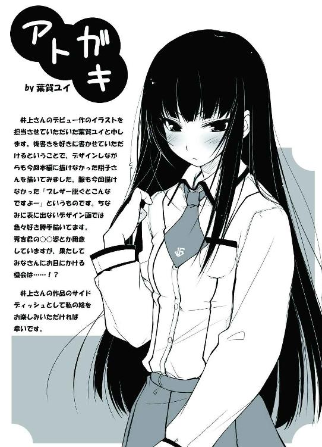
この作品は、第８回エンターブレインえんため大賞、編集部特別賞受賞作品『バカとテストと召喚獣』を改稿したものです。
著者
Kenji Inoue
東京生まれの札幌育ち。葉賀ユイさんの描く木下秀吉をこよなく愛する。小説デビューしたことは両親や友人知人含め、誰一人知らない。仕事で報告書を書くと「井上の日本語はさっぱりわからん！」と上司の間で大評判。今更「一応プロです」と名乗るには相当の勇気が必要だと思われる。本作でうっかり第８回えんため大賞編集部特別賞受賞。
イラスト
Yui Haga
東京生まれ千葉育ちだが、20年来のタイガースファン。そして阪神との３対３トレード以来のファイターズファン。大学時代からイラストの仕事を始めて、その後ゲーム作りの現場では企画脚本原画彩色となんでも屋をやっていた。未だに職業欄の記入で手が止まったりすることも!?
電子版 ファミ通文庫
バカとテストと召喚獣
著者／井上堅二
イラスト／葉賀ユイ
発行者 浜村弘一
発行所 株式会社 エンターブレイン
http://www.enterbrain.co.jp/
デザイン かがやひろし
(c)2007 Kenji Inoue
PUBLISHED BY ENTERBRAIN, INC.
本電子書籍はファミ通文庫『バカとテストと召喚獣』
（2007年2月9日発行 初刷）を元にして制作しております。